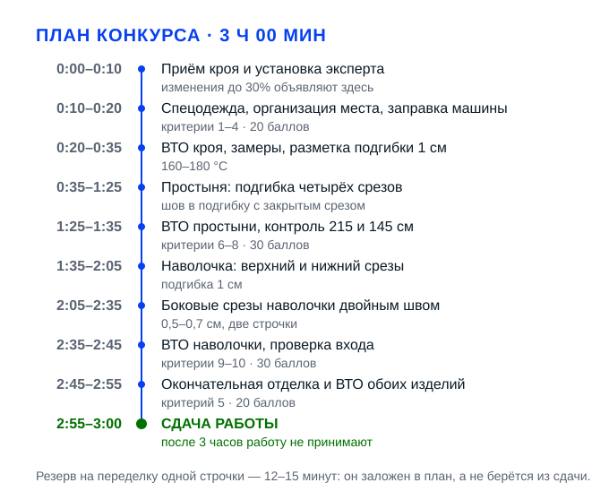
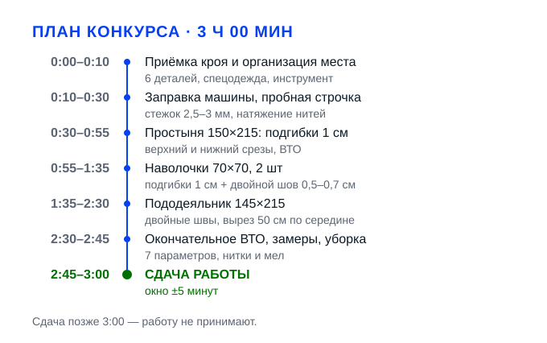
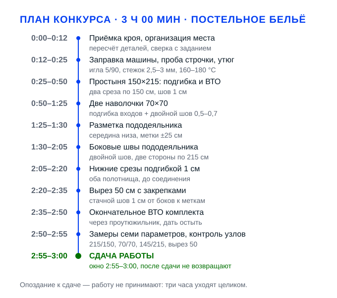

Швейное дело (ФВ)
Задания ниже — официальные файлы «Абилимпикс» (источник: abilympics-russia.ru), разложенные по категориям. Решения написаны по тексту задания, регламенту и критериям оценки; в них указано, что именно проверяет эксперт.
Школьник
14–16 лет, базовый уровень заданияВыдержка из официального конкурсного задания: страницы, относящиеся к категории «Школьник» (стр. 11–12 источника).
Пошаговое решение
Разбор официального конкурсного задания для категории «Школьники»: за три часа нужно изготовить из бязи простыню 145×215 см и наволочку 70×70 см. Задание состоит из одного модуля стоимостью 100 баллов: получить готовый крой, сшить изделия и сдать работу экспертам. Крой и ткань у всех одинаковые: набивная бязь из хлопка 100% плотностью 142 г/м² шириной 150 см, четыре метра на участника; своё оборудование приносить запрещено. Срезы простыни и верхний с нижним срезами наволочки обрабатываются швом в подгибку с закрытым срезом шириной 1 см, боковые срезы наволочки — двойным швом 0,5–0,7 см, ВТО выполняется при 160–180 °C. Баллы: 20 за организацию места и безопасность, 20 за параметры изделий, 40 за четыре группы швов, 20 за общее впечатление. Главный эксперт может изменить до 30% задания — способ обработки соединительных и краевых швов, поэтому установку слушаем и записываем.

Задача 1. Организовать рабочее место, надеть спецодежду и принять кройМодуль «Пошив простыни и наволочек» · критерии 1–4 · 20 баллов из 100
Двадцать баллов из ста — четверть всей оценки — даются до первой строчки: пять за место для ручных работ и влажно-тепловой обработки, пять за место для машинных работ, пять за спецодежду и пять за технику безопасности. Эти баллы не набираются в конце, их снимают и добавляют всё время, пока вы работаете, поэтому порядок на столе и правильная посадка — не «подготовка», а полноценная часть задания. Здесь же вы принимаете крой и убеждаетесь, что из него вообще получатся простыня 145×215 см и наволочка 70×70 см, потому что исправить размеры после первой строчки уже нечем.
Действие 1.1. Надеть спецодежду и убрать всё, что мешает работе
Шаг 1.1.1
Надеваем фартук, косынку или ободок и закрытую сменную обувь — по особым указаниям задания этот комплект участник приносит с собой. Волосы убираем целиком: косынка закрывает лоб и затылок, резинка держит хвост, если косынки нет — ободок и туго собранные волосы. Фартук завязываем так, чтобы завязки не свисали в рабочую зону, а обувь меняем до входа в мастерскую, а не после того, как сели за машину.
Спецодежда — отдельный критерий на 5 баллов, и проверяется он по трём признакам: фартук, головной убор, закрытая обувь. Логика здесь не формальная: за машиной приходится низко наклоняться к игле и лапке, и выбившаяся прядь уходит под игловодитель быстрее, чем кажется. Открытая обувь на педали и на полу, где лежат обрезки ткани, — прямая дорога к травме, а травма на площадке останавливает работу.
Проверьте себя по трём пунктам: волосы не выглядывают ни спереди, ни сзади, фартук застёгнут и завязки не болтаются, обувь закрытая и сухая. Попросите соседа посмотреть со спины — самому затылок не виден, а именно там чаще всего остаются неприбранные волосы.
Самая частая ошибка — надеть косынку на макушку, оставив затылок открытым: спереди всё аккуратно, а сзади волосы лежат на плечах и тянутся к игле. Вторая — прийти в открытых сандалиях с мыслью «это же не производство»: 5 баллов снимаются до старта, и вернуть их работой уже невозможно.
Эксперт осматривает участников до старта, при входе в мастерскую, и отмечает комплектность спецодежды в оценочном листе. Дальше он поглядывает, остаётся ли фартук на месте и не снят ли головной убор «чтобы не мешал».
Шаг 1.1.2
Снимаем часы, браслеты, кольца, длинные серьги и всё, что свисает с рук. Ногти коротко подстрижены, без лака и покрытия: под ним остаются загрязнения, а скол покрытия может попасть в шов. Украшения убираем в личную коробку, которую задание разрешает принести с собой, — не на край стола и не в карман фартука, откуда они выпадают на пол. Коробку держим закрытой, чтобы внутрь не попадала тканевая пыль.
Свободные руки — это не только гигиена, но и точность: браслет цепляется за маховое колесо и за направляющую лапки, а кольцо мешает чувствовать натяжение ткани при подгибке. Плюс любая металлическая деталь рядом с иглой — риск затянуть её под лапку и сломать иглу прямо на середине строчки, а замена иглы и перезаправка съедят пять-семь минут из трёх часов.
Руки осмотрены: украшений нет, ногти короткие, кожа сухая, без кремных следов — жирная рука оставляет пятна на бязи, а набивная светлая ткань их впитывает сразу и навсегда. Проверьте ладони на просвет: следы крема и чернил видны, если поднести руки к лампе.
Оставить обручальное кольцо «оно же не мешает» — самое частое. На категории «Школьники» это замечают на входе, и объяснение «я привыкла» не принимается: по правилам украшения на площадке недопустимы. Вторая ошибка — положить снятое кольцо на стол рядом с булавками, где его потом не найти среди обрезков.
Эксперт проверяет руки при осмотре перед стартом и дальше следит за ними в работе, особенно в момент, когда участник поправляет волосы или лицо: руки после этого нужно протереть, а не браться за ткань.
Шаг 1.1.3
Надеваем наперсток на средний палец рабочей руки — он должен сидеть плотно, но не сдавливать фалангу. Садимся прямо, на всю глубину сиденья стула с газ-лифтом, ступни ставим на пол, колени под столом на уровне бёдер. Корпус держим на расстоянии 25–30 см от иглы, локти на столе, плечи опущены: так видно линию строчки и не устаёт шея к третьему часу работы.
Правильная рабочая поза прямо названа в критерии по технике безопасности, который стоит 5 баллов, и она же экономит силы: сгорбленная спина через сорок минут даёт дрожь в руках, а дрожащая рука ведёт строчку волной — это уже минус по качеству швов, где разыгрывается ещё 40 баллов. Наперсток нужен для ручных работ с иглой и для закрепок, и он тоже входит в перечень проверяемого.
Проверьте посадку по трём ощущениям: поясница касается спинки, стопы стоят полностью, а до педали вы дотягиваетесь без наклона корпуса. Высота стула регулируется в пределах 400–525 мм от пола до сиденья, так что подогнать его под свой рост — дело десяти секунд.
Сесть на край стула и поджать ноги под себя: поза «на краешке» быстро даёт напряжение в спине, а колени выше бёдер пережимают сосуды, и к концу модуля руки работают медленнее. Вторая ошибка — работать без наперстка, «потому что он мешает»: это прямая потеря баллов по критерию безопасности.
Эксперт проходит по рядам в начале модуля и смотрит посадку за машиной: расстояние до иглы, положение локтей, наличие наперстка. Ближе к концу работы он отмечает, не сполз ли участник в «позу уставшего» с наклоном головы к самой лапке.
Действие 1.2. Организовать место для ручных работ и ВТО
Шаг 1.2.1
Раскладываем инструмент по зонам и так, чтобы до каждой вещи можно было дотянуться, не вставая. Ножницы портновские — справа от машины, кольцами к себе; мел белый, сантиметровая лента длиной не менее 1,5 м с ценой деления 1 мм и колышек — в ближней зоне; булавки длиной 38 мм (их в наборе не меньше ста) — воткнутыми в подушечку, а не россыпью; ручные иглы — в игольнице; нитевдеватель и коробка для личных инструментов — с краю, чтобы не мешали.
За критерий «организация рабочего места для ручных работ и ВТО» дают 5 баллов, и проверяют его глазами: рационально ли разложено и безопасно ли лежит. Практическая сторона важнее: за три часа вы возьмёте булавку не один десяток раз, и каждая лишняя секунда на поиск умножается на это количество. Иголка, лежащая на столе остриём к руке, — это травма, после которой работу не закончить.
Проверьте двумя вопросами: дотягиваетесь ли вы до мела, ленты и булавок, не вставая, и видите ли остриё иглы, когда её берёте. На столе не должно быть ничего лишнего — чашки, телефона, сумки; проход между столами остаётся свободным, потому что по нему ходят эксперты.
Самая частая ошибка — высыпать булавки и иглы одной горкой «чтобы были под рукой»: через десять минут в горке не разобрать, где остриё, а упавшая игла ищется минутами и всё равно может остаться в ткани. Вторая — держать ножницы в кармане фартука: они там тупятся о ткань и в любой момент могут выпасть лезвиями вниз.
Эксперт обходит рабочие места в первые минуты модуля и отмечает, разложен ли инструмент по зонам и безопасно ли он лежит. Отдельно фиксируется, лежат ли иглы и булавки в подушечке: это прямо прописано в критерии по технике безопасности.
Шаг 1.2.2
Ставим гладильную доску так, чтобы рабочая поверхность 1200×450 мм была на уровне локтя, а не пояса: высота регулируется в шести позициях от 760 до 1000 мм. Утюг мощностью 2150 Вт ставим на термостойкую подставку справа, шнур укладываем за доску, а не под ноги. Рядом кладём проутюжильник — без него на бязи остаются ласы и подпалины. Рядом с доской оставляем свободное место под готовые детали, чтобы их не приходилось класть на машину.
За место для ВТО дают те же 5 баллов, и это самая недооценённая часть: именно утюжка решает, получатся ли ровные кромки, а за качество влажно-тепловой обработки в критерии «общее впечатление» стоит 20 баллов. Низкая доска заставляет наклоняться и давить на утюг — отсюда «навалы» и заломы. Шнур под ногами — риск уронить горячий утюг себе на ногу.
Проверьте три вещи: доска стоит устойчиво и не качается, поверхность чистая и сухая, шнур не пересекает зону, где вы стоите. Подошва утюга должна быть чистой — проведите ею по светлому лоскуту: если остался след, подошву надо протереть, иначе он отпечатается на белье.
Поставить доску слишком низко и гладить с наклоном: ткань при этом растягивается руками, а не разглаживается утюгом, и после остывания кромка идёт волной. Вторая ошибка — гладить без проутюжильника на максимальной температуре: бязь из хлопка 100% плотностью 142 г/м² даёт подпалины, а это уже «сожжённая ткань» в оценочном листе.
Эксперт смотрит, где стоит доска, чем накрыта и лежит ли утюг на подставке, а не на ткани изделия. Отдельно он отмечает, пользуется ли участник проутюжильником и не оставляет ли утюг включённым, отходя к машине.
Шаг 1.2.3
Включаем лампу с магнитным основанием и крепим её на корпус машины так, чтобы свет холодного белого падал на иглу и на линию строчки, а не в глаза. Вторая лампа из комплекта ставится у гладильной доски или у зоны разметки. Общий свет в мастерской есть, но он даёт тень от корпуса машины именно там, где проходит строчка. Второй светильник направляем на гладильную доску: на тёмной подошве утюга плохо видно край подгибки.
Свет — это не удобство, а точность: набивная бязь с рисунком маскирует строчку, и без направленного света легко увести её на 2–3 мм от края подгибки. А ширина шва и ровность строчки оцениваются в четырёх критериях по 10 баллов, то есть 40 баллов из 100 зависят от того, видите ли вы свою линию.
Проверьте так: положите под лапку лоскут и посмотрите на линию строчки — она должна быть видна без наклона головы и без тени от собственной руки. Если приходится щуриться, лампа стоит не там. Если тень от руки закрывает линию, сдвиньте лампу на 5–10 см в сторону.
Направить лампу в лицо или оставить её светить в сторону: появляется блик на металлической пластине и слепящее пятно на ткани, из-за которого не видно край подгибки. Вторая ошибка — работать при общем свете, считая, что «и так видно»: на пёстрой бязи строчка теряется, и к концу простыни её ведёт в сторону.
Эксперт отмечает, пользуется ли участник дополнительным освещением из комплекта, и заодно смотрит, не направлен ли свет в глаза соседям — на площадке это считается нарушением организации места.
Действие 1.3. Организовать место для машинных работ
Шаг 1.3.1
Подкатываем стул с газ-лифтом так, чтобы корпус был напротив иглы, а не напротив махового колеса, и поднимаем сиденье до высоты, при которой предплечья лежат на столе машины горизонтально. Педаль ставим под правую стопу целиком, каблук на полу. Стол вокруг машины освобождаем: слева — лоток с деталями кроя, справа — только ножницы и булавки, ничего на платформе под лапкой.
Пять баллов за организацию машинного места дают за то, что рабочая зона свободна и посадка правильная. Развёрнутый корпус и педаль под пяткой — это ошибки, из-за которых строчка уходит в сторону: вы ведёте ткань не прямо перед собой, а вполоборота, и рука тянет край на себя. Три часа в такой позе — гарантированная усталость к наволочке, самой ответственной части работы.
Проверьте: игла по центру корпуса, обе руки свободно лежат на столе, до педали дотягиваетесь без наклона, слева есть место для 2-метровой детали простыни. Простыня 215 см длиной не должна свисать на пол — её надо уложить на стол или на колени, но не тянуть волоком.
Сесть напротив махового колеса — распространённая ошибка: рука уходит в сторону, а ткань ведётся по диагонали, и шов получается с перекосом. Вторая — оставить длинную деталь свисать на пол: она тянет ткань назад, строчка идёт мельче, а кромка растягивается.
Эксперт смотрит посадку и свободна ли платформа: посторонние предметы под лапкой он отмечает как нарушение организации машинного места. Отдельно он отмечает, убран ли с платформы посторонний инструмент перед началом строчки.
Шаг 1.3.2
Заправляем машину по порядку: ставим иглу ORGAN 5/90 для универсальных тканей, вставляем шпульку с ниткой 100% полиэстер в цвет ткани в челнок, выводим нижнюю нить наверх, затем заправляем верхнюю по схеме на корпусе — катушка, нитенаправитель, регулятор натяжения, нитепритягиватель, игла. Нить обязательно заводим под лапку и отводим назад на 10–12 см. Скорость ставим среднюю, около 700 ст/мин, а не максимальные 860.
Заправка и регулировка натяжения нитей прямо входят в требования к квалификации категории «Школьники». Неправильная заправка — самая частая причина «лохматой» строчки: сверху петли, снизу узелки, и вместо ровного шва получается брак, который придётся распарывать. Средняя скорость нужна потому, что на 860 ст/мин рука не успевает вести кромку ровно, а на белье это видно на всей длине.
Проверьте: нить идёт свободно, не застревает в тарелочках, игла вставлена до упора и не болтается, шпулька вращается против часовой стрелки. Потяните нить за иглу — она должна выходить с небольшим усилием, а не рваться.
Заправить верхнюю нить, минуя нитепритягиватель: строчка идёт с петлями, натяжение не регулируется, и участник теряет время на поиск «поломки», которой нет. Вторая ошибка — поставить иглу не до упора: она бьёт по челноку, ломается, и на замену с перезаправкой уходит пять минут.
Эксперт наблюдает заправку в начале модуля: умеет ли участник вывести нижнюю нить и правильно ли держит нить при заправке. Это же проверяется, если машина начнёт петлять — по тому, как быстро участник найдёт причину.
Шаг 1.3.3
Делаем пробную строчку на лоскуте бязи: длина стежка 2,5–3 мм, ширина строчки по краю 0,1 см, в начале и в конце — закрепки кнопкой обратного хода или точечной закрепкой. Смотрим на переплетение нитей с двух сторон и на то, стягивает ли шов ткань. Если лоскута в наборе нет, просим обрезок у эксперта — резать крой нельзя ни в коем случае. Пробную строчку делаем длиной 15–20 см: этого достаточно, чтобы оценить и стежок, и натяжение.
Пробная строчка — единственная возможность настроить машину до того, как под лапку пойдёт двухметровая простыня. Узел переплетения должен уйти в толщу ткани: если он виден сверху, верхняя нить перетянута, если снизу — недотянута. На бязи плотностью 142 г/м² стежок 2,5–3 мм держит шов и не морщит ткань, а более частый стежок прорезает волокна на сгибе подгибки.
Проверьте лоскут на просвет и на растяжение: строчка ровная, без пропусков, шов не стянут, при растяжении поперёк нитка не лопается. С изнанки узелки одинаковые по всей длине, а не «то петля, то нормально».
Шить сразу на изделии, «проверив на глаз»: натяжение оказывается сбитым, и первую же длинную строчку приходится распарывать, а следы от проколов на бязи остаются навсегда — это минус по общему впечатлению. Вторая ошибка — отрегулировать машину на тонком лоскуте, а шить по четырём слоям подгибки.
Эксперт смотрит, делает ли участник пробную строчку вообще: по положению регулятора длины стежка и по тому, проверяет ли он шов с двух сторон. Опытные участники настраивают машину до старта.
Действие 1.4. Принять крой и сверить его с заданием
Шаг 1.4.1
Получаем набор кроя и слушаем установку главного эксперта: по правилам он может изменить до 30% задания, и менять разрешено именно способ обработки соединительных и краевых швов. Значит, в этом году вместо шва в подгибку с закрытым срезом может требоваться другой краевой шов, а вместо двойного — другой соединительный. Записываем на листке, что именно объявлено, и переспрашиваем вслух, если формулировка допускает два прочтения.
Это единственная информация, которая может обесценить всю подготовку: если обработать срезы привычным швом, а объявлен другой, работа не соответствует заданию, и баллы за обработку швов — 40 из 100 — снимаются почти полностью. Переспросить вслух не стыдно: уточняющий вопрос до старта экономит час работы и не влияет на оценку.
Признак того, что вы всё поняли: можете своими словами назвать оба шва — краевой и соединительный — и их ширину. Если в объяснении остаётся «ну, подгибка», подойдите к эксперту ещё раз и попросите показать образец узла.
Начать работу, не дослушав установку, потому что «и так всё знаю»: изменения в 30% как раз и вводят для того, чтобы проверить, слушает ли участник задание. Вторая ошибка — услышать изменение и молча решить, что «сделаю как обычно, это же лучше».
Главный эксперт объявляет изменения перед стартом и фиксирует их в протоколе; дальше все оценки выставляются уже с учётом объявленного варианта шва. Если объявленный вариант отличается от карты, он напоминает об этом каждому участнику индивидуально.
Шаг 1.4.2
Пересчитываем детали кроя и сверяем с заданием: должна быть деталь простыни и деталь наволочки, итого два изделия — простыня 145×215 см и наволочка 70×70 см из бязи. Раскладываем детали на столе, расправляем, проверяем, нет ли лишних или недостающих частей. Если в крое есть клапан наволочки или отдельная деталь под него, отмечаем это сразу — от этого зависит порядок обработки.
Проверка деталей кроя — первая операция технологической карты, и на ней строится всё дальше: недокомплект обнаруживается только на сборке, когда время уже ушло. Критерий «соблюдение заданных основных параметров» стоит 20 баллов — по 5 за длину и ширину простыни и наволочки, — и он измеряется линейкой эксперта, а не на глаз.
Сверьте количество деталей с описанием изделия и убедитесь, что все срезы целые, без вырывов и заломов. Если деталей больше, чем нужно, лишнюю не выбрасывайте: покажите эксперту и уточните, входит ли она в задание.
Схватить крой и начать шить, не пересчитав: потом выясняется, что деталь наволочки одна вместо двух или что клапан выдали отдельно, и перестраивать план приходится на ходу. Вторая ошибка — выбросить «лишнюю» деталь: её отсутствие при сдаче заметят, а восстановить нечем.
Эксперт подходит к столу при выдаче кроя и смотрит, разложены ли детали и сверены ли они с эскизом. Это первая операция в технологической карте, и её выполнение отмечается отдельно.
Шаг 1.4.3
Измеряем детали сантиметровой лентой и записываем цифры на листке: длину и ширину каждой детали, а также проверяем диагонали прямоугольника. У ровно выкроенной детали диагонали равны; расхождение больше 5 мм означает перекос. Отдельно считаем припуск: подгибка шириной 1 см съедает по 1 см с каждого обрабатываемого среза, и если крой равен ровно 145×215 см, после обработки получится 143×213 см.
Это ключевой расчёт всего модуля. Параметры оцениваются по 5 баллов за каждую величину, и потеря двух сантиметров по длине и ширине — это минус 10–20 баллов из 100 при идеально выполненной работе. Если крой выдан с припуском (например, 147×217 см), всё сходится; если без припуска, вопрос надо поднять до первой строчки, потому что после неё исправить размер уже невозможно.
Запишите четыре числа и сравните их с заданием: 215,0 см длина простыни, 145,0 см ширина простыни, 70,0 см наволочка по длине и ширине. Разница в 2 см — это припуск, разница в 0–5 мм — нормальная точность кроя, а расхождение диагоналей больше 5 мм требует правки углов перед обработкой.
Не измерить крой вообще и обнаружить недомер при сдаче: эксперт просто прикладывает ленту, и баллы уходят. Вторая ошибка — увидеть, что крой ровно по размеру, и всё равно подогнуть на 1 см «как в карте»: получится 143×213 см, и это уже не задание.
Эксперт фиксирует параметры готового изделия своей лентой в конце модуля, но наблюдает за замерами и в начале: участник, который сразу проверил крой, по его опыту и сдаёт работу в размер.
Шаг 1.4.4
Осматриваем ткань: набивная бязь из хлопка 100% плотностью 142 г/м², ширина полотна 150 см. Ищем дефекты — затяжки, утолщения, пятна, перекос рисунка, осыпающиеся кромки. Если дефект найден в середине детали, показываем эксперту до начала работы и просим заменить деталь: после раскроя и первой строчки претензию не примут. Особенно внимательно смотрим места, где ткань была сложена: там чаще всего образуются заломы и потёртости.
Дефект ткани в готовом изделии выглядит как брак работы участника: критерий «общее впечатление» на 20 баллов включает отсутствие загрязнений и мелкого мусора, а пятно или затяжка читаются именно так. Кроме того, на осыпающихся срезах двойной шов получается с «бородой» из нитей, и его приходится переделывать.
Проверьте ткань на просвет у лампы и проведите ладонью по всей детали: утолщения и затяжки чувствуются рукой лучше, чем видны глазом. Срезы не должны осыпаться обильно — если осыпаются, работайте с ними аккуратно и не оставляйте детали лежать на столе без дела.
Промолчать про дефект и «спрятать» его в шов: если он попадёт в подгибку, шов пойдёт волной, а если останется на видном месте — потеря баллов за общее впечатление. Вторая ошибка — сразу обрезать дефектный участок: крой станет меньше, и размер не сойдётся.
Эксперт решает вопрос замены детали до старта; после старта он оценивает то, что есть, и дефект ткани в готовой работе трактует уже как дефект изделия.
Задача 2. Подготовить крой к пошиву: ВТО, разметка и планМодуль «Пошив простыни и наволочек» · подготовка под критерий 5 · до 20 баллов
Прежде чем строчить, крой нужно распрямить и разметить. Бязь после хранения лежит со складками, и если подогнуть срез по мятой ткани, кромка после первой же стирки пойдёт волной, а на сдаче это будет «перекос» и «залом» — два слова из критерия на 20 баллов. Разметка мелом и булавками занимает минут десять и экономит полчаса на переделках: ровная линия подгибки на двухметровой простыне держится только тогда, когда она заранее обозначена, а не ведётся на глаз.
Действие 2.1. Выполнить влажно-тепловую обработку кроя
Шаг 2.1.1
Ставим утюг на 160–180 °C — это температура, заданная в технических условиях для бязи, — и ждём выхода на режим с закрытой насадкой. Каждую деталь раскладываем на доске и проутюживаем с изнаночной стороны через проутюжильник, двигаясь вдоль долевой нити, без нажима: сначала расправляем складки, потом даём ткани остыть в расправленном виде, не сдвигая её с доски.
ВТО кроя — это операция из технологической карты, и её результат виден в критерии «качество выполнения влажно-тепловых работ»: отсутствие морщин, складок, заломов и перекосов. Мятая ткань при подгибке даёт «пузырь» на кромке, и шов получается с наплывом. Кроме того, разглаженная ткань ложится ровно под лапку, и строчка идёт по линии, а не по волне.
Проверьте деталь на просвет и на ощупь: складок нет, поверхность ровная, ткань не растянута. Приложите ленту к двум сторонам после утюжки — размеры не должны увеличиться больше чем на 3–5 мм, иначе вы растянули ткань утюгом.
Гладить с лицевой стороны без проутюжильника: на набивной бязи остаются ласы и блестящие полосы, а при задержке утюга — подпалина, то есть «сожжённая ткань» из оценочного листа. Вторая ошибка — водить утюгом поперёк долевой: ткань растягивается по ширине, и прямоугольник превращается в трапецию.
Эксперт смотрит на утюжку в процессе: температуру, наличие проутюжильника и то, не тянет ли участник ткань утюгом. Ровная, «стеклянная» деталь — первый признак, что ВТО выполнена правильно.
Шаг 2.1.2
Отдельно проутюживаем сгибы, если крой лежал сложенным: линию сгиба сбрызгиваем водой из пульверизатора, накрываем проутюжильником и прижимаем утюгом на 2–3 секунды, а не тянем его вдоль сгиба. После этого даём детали полностью остыть и только потом переходим к разметке: на тёплой ткани мел идёт глубже и линия получается толще, чем нужно. Пульверизатор держим на расстоянии 25–30 см, чтобы вода ложилась мелкой взвесью, а не каплями.
Застарелый сгиб — это залом, который прямо назван в критерии «общее впечатление». На готовом изделии он читается как небрежность, даже если швы идеальные, и стоит часть из 20 баллов. Прижимание вместо скольжения работает потому, что пар размягчает волокна хлопка, и они распрямляются под весом утюга, а не под боковым усилием.
Проведите ладонью по месту сгиба: ступеньки не чувствуется, ткань лежит плоско. Посмотрите на деталь под углом к свету — залом даёт тень-полосу, и это самый надёжный способ его увидеть. Если полоса тени осталась, повторите приём с паром ещё раз и дайте ткани остыть.
Сбрызнуть ткань и сразу начать гладить, не накрыв проутюжильником: капли воды дают точечные пятна на набивном рисунке, а они не отстирываются и на сдаче выглядят как загрязнение. Вторая ошибка — разгладить сгиб, а потом снова сложить деталь вчетверо «чтобы не мешала».
Эксперт осматривает детали перед пошивом и отмечает, разглажены ли они целиком. Отдельно он проверяет, не осталось ли на ткани влажных пятен и следов от пульверизатора.
Действие 2.2. Разметить линии подгибки и сгибы
Шаг 2.2.1
Размечаем линии подгибки белым портновским мелом с помощью сантиметровой ленты и линейки: по каждому срезу, который будем подгибать, откладываем 1,0 см от края и ставим точки через 15–20 см, затем соединяем их сплошной тонкой линией. Мел держим под углом, как карандаш, и ведём линию одним движением, а не штрихами. Вторую линию — линию подворота — наносим на расстоянии 0,5 см от среза.
Ширина шва в подгибку задана техническими условиями — 1 см, и соблюдение ширины шва прямо названо в критериях обработки простыни и наволочки, где на кону 40 баллов. Линия, поставленная точками, даёт шов с одинаковой шириной по всей длине; линия, проведённая на глаз, к концу двухметрового среза уходит на 2–3 мм, и это уже «искривление строчки».
Проверьте разметку выборочно в четырёх точках по длине среза: расстояние от края до линии должно быть одинаковым, 10 мм по всей длине. Посмотрите на линию вдоль кромки, приложив ленту: она должна быть параллельна срезу, без клина.
Размечать «на глаз» и надеяться на лапку как на ограничитель: край подгибки уходит из-под лапки, и ширина шва получается то 8, то 13 мм — за это снимают баллы в критерии «одинаковая ширина шва». Вторая ошибка — провести линию толстым затупленным мелом: след шириной 3 мм не даёт понять, где именно должна идти строчка.
Эксперт проверяет ширину шва на готовом изделии лентой в нескольких местах, но видит и разметку в процессе: ровная линия на крое — залог ровной строчки, и это он отмечает, проходя мимо стола.
Шаг 2.2.2
Скалываем подгибку булавками длиной 38 мм, вкалывая их поперёк линии шва через каждые 10–12 см: головка булавки смотрит влево, остриё выходит из ткани, и при строчке булавки вынимаются до подхода лапки. Сначала заутюживаем срез по линии подворота на 0,5 см, потом перегибаем ещё раз по основной линии — получается подгибка с закрытым срезом шириной 1 см, и срез спрятан внутри.
Подгибка с закрытым срезом — именно тот краевой шов, который задан для простыни и для верхнего и нижнего срезов наволочки. Заутюживание перед скалыванием — приём, который экономит время: булавки держат уже сформированную подгибку, и её не приходится поправлять под лапкой. Если срез не спрятан, он осыпается, и на готовом изделии торчат нити — прямое нарушение требования «все срезы обработаны».
Проверьте с изнанки: срез не выглядывает из-под подворота ни в одной точке, ширина подгибки одинаковая по всей длине. Проведите пальцем вдоль кромки — ступеньки и утолщений быть не должно. Проверьте булавки: они должны сидеть плотно и не выворачивать подгибку на лицо.
Сколоть булавки вдоль среза, а не поперёк: они попадают под иглу, игла ломается, а ткань в этом месте рвётся. Вторая ошибка — подвернуть срез один раз на 1 см: получается шов в подгибку с открытым срезом, а задание требует закрытый, и за способ обработки снимают баллы.
Эксперт смотрит способ обработки: закрыт ли срез и совпадает ли он с объявленным в установке. Способ обработки — единственное, что главный эксперт может изменить в пределах 30%, поэтому смотрит он именно на это.
Шаг 2.2.3
Размечаем углы: от каждого угла по обеим сторонам откладываем по 1,0 см и ставим точку пересечения, а по диагонали угла намечаем линию подрезки. Если при формировании подгибки в углу собирается утолщение, срезаем излишек по диагонали, отступив от точки пересечения 2–3 мм — так, чтобы подворот остался целым. Тот же приём повторяем на всех четырёх углах простыни.
Угол — место, где подгибка накладывается сама на себя, и без подрезки там получается бугор в четыре слоя ткани. Через такой бугор игла идёт тяжело, строчка сбивается, а на готовом изделии угол топорщится — это видно сразу, и в критериях обработки швов угол оценивается вместе с качеством утюжки узла.
Проверьте угол после подрезки: подворот не разошёлся, срез не выглядывает, толщина в углу не больше, чем на остальной кромке. Приложите угольник или сложите изделие по диагонали — угол должен быть прямым, без «уха».
Подрезать слишком много и разойтись с подворотом: в углу образуется дырка, и работа получает дефект, который не исправить без переделки всей стороны. Вторая ошибка — не подрезать угол вообще: игла глохнет, строчка в углу сбивается в мелкую, а на ВТО угол не разглаживается.
Эксперт осматривает углы в первую очередь: по ним видно, умеет ли участник работать с подгибкой. Неровный угол он отмечает как дефект обработки узла. Отдельно он смотрит, подрезан ли излишек ткани в углу, а не просто загнут внутрь.
Действие 2.3. Записать порядок операций и распределить время
Шаг 2.3.1
Составляем короткий план на листке: простыня — четыре среза подгибкой 1 см, затем ВТО; наволочка — верхний и нижний срезы подгибкой 1 см, ВТО, затем боковые срезы двойным швом 0,5–0,7 см, снова ВТО. Напротив каждого пункта ставим время: на простыню 50 минут, на наволочку 60, на окончательную отделку и сдачу — 20. Остальное оставляем как резерв на переделку одной строчки.
Три часа на два изделия — это не так много, как кажется: одна только подгибка четырёх срезов простыни длиной 215 см даёт почти восемь метров строчки. План нужен, чтобы не уйти в перфекционизм на простыне и не остаться без времени на двойной шов наволочки, за который дают 10 баллов отдельно. Резерв — это не роскошь: переделка одной строчки занимает 12–15 минут.
Проверьте план по контрольным точкам: к концу первого часа простыня должна быть подшита хотя бы с двух сторон, к двум часам — готова целиком, к 2:30 — наволочка стачана. Если на 1:20 простыня ещё не подшита, упрощайте: подгибка идёт быстрее, если не перекалывать булавки заново.
Начать с наволочки «потому что она меньше», а потом обнаружить, что на простыню не хватает времени: простыня — половина параметров и половина швов, и её недоделанность обнуляет больше баллов. Вторая ошибка — планировать без резерва и паниковать на первой же переделке.
Эксперт видит, есть ли у участника план: по тому, в каком порядке он берётся за операции и укладывается ли в контрольные точки. Это часть оценки организационных навыков.
Шаг 2.3.2
Определяем, где в готовом изделии будет вход для подушки: наволочка 70×70 см складывается так, что один подогнутый край находит на другой и образует клапан. Намечаем на крое линию сгиба и глубину входа — обычно 20–25 см, — чтобы вход получился одинаковым с обеих сторон бокового шва. Уточняем у эксперта, входит ли клапан в выданный крой отдельной деталью или образуется за счёт запаса.
В критериях обработки двойных швов наволочки отдельно названа «одинаковая длина входа в карман», то есть вход должен быть симметричным. Если клапан собран на глаз, одна сторона входа окажется глубже другой, подушка вставляется косо, и 10 баллов за двойные швы теряются вместе с общим впечатлением.
Проверьте наметку так: сложите деталь по намеченной линии сгиба и приложите ленту к боковому срезу — расстояние от сгиба до подогнутого края должно быть одинаковым и равным выбранной глубине клапана. Обе стороны проверяются отдельно.
Собрать наволочку без клапана, просто стачав два края: подушка будет выпадать, а вход окажется с одной стороны — это несоответствие заданию. Вторая ошибка — сделать клапан слишком мелким, 5–7 см: он не держит подушку и выглядит как недоделка.
Эксперт проверяет вход, вставляя руку в готовую наволочку: он смотрит, одинакова ли глубина с двух сторон и держит ли клапан подушку. Если клапан выдали отдельной деталью, он проверяет, притачан ли он по всем правилам.
Задача 3. Обработать простыню 145×215 см и вывести её в размерМодуль «Пошив простыни и наволочек» · критерии 6–8 · 30 баллов из 100
Простыня — самая длинная работа модуля: четыре среза, почти восемь метров строчки и подгибка шириной 1 см с закрытым срезом по всему периметру. Здесь разыгрывается 30 баллов: по 5 за длину и ширину готового изделия, 10 за боковые швы и 10 за нижние. Логика оценки простая: эксперт смотрит на ровность строчки, одинаковость ширины шва по всей длине, целостность строчки и качество утюжки узла, а потом прикладывает ленту. Поэтому работать надо не быстро, а ритмично — одинаковым темпом, с одинаковым натяжением ткани на каждом из четырёх срезов.
Действие 3.1. Разложить простыню и проложить первую длинную строчку
Шаг 3.1.1
Раскладываем деталь простыни на столе во всю длину и определяем, где долевая, где поперечная нить и где кромка. Долевая идёт вдоль полотна и не тянется, поперечная — поперёк, она слегка подаётся. Кромку узнаём по уплотнённому краю ткани: у бязи шириной 150 см один край обработан фабрикой, и его тоже нужно подогнуть, потому что кромка после стирки садится и стягивает изделие.
Определение долевой и поперечной нити прямо входит в требования к квалификации категории «Школьники», и это не теория: подгибка, заложенная по косой, даёт перекос, а перекос назван в критерии «общее впечатление» на 20 баллов. Кромка плотнее основной ткани, и если оставить её необработанной, после первой стирки край простыни пойдёт волной, а размер уменьшится неравномерно.
Проверьте: потяните деталь по длине и по ширине — по долевой она почти не подаётся, по поперечной тянется на 3–5 мм. Углы должны быть прямыми, а срезы ровными, без «ступенек» от раскроя. Если диагонали расходятся больше чем на 5 мм, крой перекошен, и об этом надо сказать до строчки.
Подгибать срез, не определив направление нити: на глаз это почти не видно, но при ВТО кромка уходит винтом, и на сдаче эксперт отмечает перекос. Вторая ошибка — считать кромку уже обработанной и не подгибать её: требование «все срезы изделия должны быть обработаны» относится и к ней.
Эксперт может попросить показать направление долевой нити: это проверяемое знание из перечня требований к квалификации. Дальше он смотрит, все ли четыре среза попали в обработку.
Шаг 3.1.2
Прокладываем первую строчку по одному длинному срезу — 215 см. Подгибку формируем заранее заутюженной, скалываем булавками через 10–12 см, ставим деталь под лапку так, чтобы линия подгибки шла по правому краю лапки, и ведём ткань двумя руками: левая придерживает деталь чуть натянутой, правая направляет край. Строчку ведём на 0,1–0,2 см от подогнутого края, скорость — около 700 ст/мин, ровным темпом без рывков.
Ширина шва 1 см и ровность строчки оцениваются в двух критериях по 10 баллов, и именно первая длинная строчка задаёт темп всей работе. Если вести ткань рывками, стежок получается то 2,5, то 4 мм, шов «гуляет», и на просвет видно дорожку разной плотности. Натяжение левой рукой нужно, чтобы двухметровая деталь не тянула сама себя весом и не растягивала подгибку.
Проверьте первый метр, не отрываясь от работы: край подгибки идёт параллельно краю лапки, ширина шва от сгиба 10 мм, строчка не пересекает линию подворота. Если на первом метре пошло ровно, дальше держится тот же темп.
Тянуть ткань обеими руками вперёд: подгибка растягивается, и после ВТО шов собирается в мелкие волны. Вторая ошибка — смотреть на иглу, а не на край подгибки: игла всё равно идёт туда, куда её ведёт лапка, а контролировать надо именно край.
Эксперт подходит и смотрит на строчку с лицевой и с изнаночной стороны: одинаковый ли стежок, нет ли пропусков, ровно ли идёт край. Первые строчки он оценивает внимательнее всего — по ним видно уровень участника.
Шаг 3.1.3
В начале и в конце каждой строчки ставим закрепку: три-четыре стежка обратного хода кнопкой реверса или точечная закрепка, если машина её поддерживает. Нить обрезаем приспособлением — ножницами или встроенной обрезкой, — а не рвём руками. Кончики оставляем не короче 5 мм и не длиннее 10 мм, чтобы они не вылезли на лицо после первой стирки. Если машина с автоматической обрезкой, кнопку нажимаем только после полной остановки иглы.
Целостность строчки — отдельный пункт в критериях обработки: незакреплённый конец распускается при первой же нагрузке, и шов «разваливается» на 3–5 см. Обрезка ниток приспособлением прямо названа в критерии по технике безопасности на 5 баллов: рвать нить руками и подносить пальцы к движущейся игле — типичное нарушение, за которое снимают баллы.
Проверьте каждый конец: закрепка на месте, кончик нити не длиннее 10 мм, строчка не разошлась при лёгком потягивании за ткань. Потяните шов поперёк — он должен держать. Проверьте также, что закрепка не стянула ткань: место закрепки должно быть плоским, без морщин.
Оставить концы без закрепки, рассчитывая, что «под подгибкой не видно»: на сдаче эксперт проверяет именно концы строчек, и распустившийся край — дефект обработки. Вторая ошибка — обрезать нить под самое ушко, оставив 2 мм: она выскользнет из шва при первой стирке.
Эксперт проверяет концы строчек в конце модуля, потягивая шов пальцами. Наличие закрепок он отмечает как часть качества строчки. Он же смотрит, не оставлены ли длинные концы нитей на лицевой стороне изделия.
Действие 3.2. Обработать остальные три среза и проконтролировать ширину
Шаг 3.2.1
Переходим ко второму длинному срезу и повторяем ту же операцию в том же темпе: заутюженная подгибка, булавки через 10–12 см, строчка на 0,1–0,2 см от подогнутого края. Не меняем ни скорость, ни положение рук: одинаковый темп на всех четырёх срезах — единственный способ получить одинаковую ширину шва по всему периметру. Перед строчкой ещё раз расправляем деталь на столе во всю длину, чтобы под лапку не попал второй слой.
Критерий требует «одинаковую ширину шва» и «отсутствие искривления строчек и швов», и проверяется это сравнением сторон между собой. Если первый срез подшит на 10 мм, а второй на 13, разница видна на просвет и на ощупь, и 10 баллов за нижние швы простыни уменьшаются.
Приложите ленту к готовым швам с двух сторон и сравните: разница больше 1–2 мм означает, что темп сбился. Проверьте также, что строчка второго среза не захватила первый шов — на длинной детали это случается, если не расправлять простыню на столе.
Шить вторую сторону «побыстрее, чтобы догнать время»: именно здесь появляется разная ширина шва, а переделывать придётся всю сторону. Вторая ошибка — не расправить простыню перед строчкой и подшить два слоя вместе.
Эксперт сравнивает стороны изделия между собой — это самый быстрый способ увидеть разницу в ширине шва. Он делает это на столе, разложив простыню во всю длину.
Шаг 3.2.2
Обрабатываем два коротких среза — по 145 см. Здесь важно, в каком порядке идти: сначала подшиваем короткую сторону целиком, а угол формируем в конце, подворачивая уже готовую подгибку соседней стороны и подрезая излишек по диагонали. Так угол получается плоским, а строчки не наезжают друг на друга. Если угол получился толстым, помогаем машине, чуть приподнимая передний край лапки, но не тянем ткань на себя.
Угол — самый заметный узел на постельном белье: его видно и на кровати, и на сдаче, и в критериях он идёт вместе с «качеством выполнения утюжки узла». Последовательная обработка углов даёт аккуратный плоский угол без утолщения, через которое игла идёт с трудом и строчка сбивается в мелкую.
Проверьте угол: подгибки обеих сторон лежат в одной плоскости, среза не видно, толщина угла не больше двух слоёв плюс подворот. Сложите простыню по диагонали угла — линии должны совпасть. Проверьте каждый из четырёх углов отдельно, а не только первый.
Прошить угол насквозь, не подворачивая вторую сторону: получается «карман» с открытым срезом внутри, и через стирку он вылезет наружу. Вторая ошибка — подрезать угол слишком сильно и получить дырку на видном месте.
Эксперт осматривает углы отдельно, разворачивая их пальцами: именно там видно, понимает ли участник конструкцию подгибки. Он обращает внимание и на то, срезан ли излишек ткани в углу: бугор выдаёт неопытность.
Шаг 3.2.3
Проходим по всем четырём швам с сантиметровой лентой и проверяем ширину: от сгиба до строчки должно быть 10 мм, допускается отклонение 1 мм. Заодно проверяем, что строчка не прерывается, нет пропусков стежка и «гармошки» из лишней ткани. Все отклонения выписываем на листок: где именно и на сколько миллиметров. Ленту прикладываем от сгиба подгибки, а не от среза, иначе замер получится на 1–2 мм меньше реального.
Соблюдение ширины шва — отдельный пункт критериев обработки простыни, и он проверяется лентой в нескольких местах каждого шва. Выписывать отклонения нужно потому, что исправлять всё подряд нельзя: распарывание длинной строчки съедает 12–15 минут и оставляет на бязи следы проколов.
Годный шов выглядит так: ширина 10 мм по всей длине, строчка целая, срез закрыт, ткань у шва не стянута. Если отклонение 2 мм и больше на участке длиннее 20 см — этот участок переделывают, остальное оставляют.
Проверять ширину только в начале и в конце шва: середина двухметровой строчки как раз и уходит, потому что там рука устаёт. Вторая ошибка — увидеть отклонение и не переделать, надеясь, что «не заметят»: эксперт измеряет именно в середине.
Эксперт измеряет ширину шва лентой в произвольных местах, чаще в середине длинных сторон. Он же проверяет, нет ли участков, где строчка «уползла» на подворот.
Шаг 3.2.4
Убираем следы мела и обрезки: промахиваем разметку мягкой щёткой или влажной салфеткой, обрезки ниток и ткани снимаем со стола и с изделия, а не сдуваем на пол. Мел на набивной бязи въедается в волокна, поэтому стираем его сразу после того, как шов проложен, а не в конце модуля. Щётку и салфетку держим рядом с машиной, чтобы не искать их в конце модуля, а обрезки складываем в отдельную коробочку, а не в общую кучу на столе.
Критерий «общее впечатление» на 20 баллов прямо включает отсутствие загрязнений, следов мела и мелкого мусора. Это самые дешёвые баллы во всём задании: их снимают за то, что участник просто не убрал за собой. Кроме того, мел в волокнах после ВТО «запекается», и вывести его уже невозможно.
Проверьте изделие на светлом фоне: белых штрихов и точек быть не должно. Проведите рукой по столу — на ладони не должно остаться ниток и крошек мела. Отдельно проверьте углы и вход наволочки: там мусор застревает чаще всего, и его не видно, пока изделие не вывернуто.
Стирать мел, проводя по ткани мокрой рукой: размазывается пятно, которое на набивном рисунке выглядит хуже, чем сама линия. Вторая ошибка — оставить обрезки на столе до конца работы: их приносят на изделие и находят при сдаче.
Эксперт осматривает изделие именно на загрязнения и мусор, и это одна из первых вещей, которые он проверяет, разложив работу на столе. Он проводит по изделию рукой в светлой перчатке и смотрит на следы.
Действие 3.3. Приутюжить швы и вывести простыню в размер
Шаг 3.3.1
Приутюживаем каждый шов с изнаночной стороны через проутюжильник при температуре 160–180 °C, до полного прилегания. Утюг ставим поперёк шва и прижимаем на 2–3 секунды с небольшим усилием, а не тянем вдоль кромки: так разглаживается подгибка, а шов не растягивается. Начинаем с длинных сторон, заканчиваем короткими и углами. Проутюжильник держим влажным: сухая ткань не даёт нужного эффекта и подгорает на утолщениях.
Технические условия задания требуют приутюжить швы «до полного прилегания» при 160–180 °C, и это отдельный пункт технологической карты. От прилегания зависит, будет ли кромка лежать плоско после стирки, а «качество выполнения влажно-тепловых работ» — это часть критерия на 20 баллов, где отдельно названы навалы, морщины и заломы.
Проведите ладонью поперёк шва: ступеньки не чувствуется, подгибка лежит плоско. Посмотрите на шов под углом к свету — «пузырей» и волнистой кромки быть не должно. Если видите волну, значит, ткань была натянута при строчке или утюг водили вдоль шва.
Гладить шов, не накрыв проутюжильником: на сгибе подгибки остаётся ласа — блестящая полоса, которая на сдаче читается как «навал». Вторая ошибка — водить утюгом вдоль шва: подгибка растягивается, и кромка идёт волной именно после остывания.
Эксперт проверяет утюжку, разложив изделие на столе: он смотрит на кромку сбоку, под углом, и ищет волну, ласы и заломы. Это самая частая причина потери баллов из 20 за общее впечатление.
Шаг 3.3.2
Переворачиваем простыню и приутюживаем швы с лицевой стороны, обязательно через проутюжильник и с минимальным давлением: задача не разгладить заново, а убрать следы предыдущей операции и убедиться, что строчка не даёт утолщения. Углы прижимаем отдельно, с паром в течение 2–3 секунд, и даём изделию полностью остыть на доске, не снимая его сразу. Утюг при этом почти не давим: лицевая сторона не любит усилия.
Лицевая сторона — то, что видит эксперт, и на ней не должно быть ни лас, ни отпечатков подошвы утюга. Остывание на доске нужно потому, что горячую ткань легко сложить со складкой, а складка на остывшей бязи остаётся заломом, который уже не убрать без повторного ВТО.
Посмотрите на изделие под углом: поверхность ровная, строчка читается как тонкая линия, углы плоские. Проведите по шву пальцем в тонкой ткани перчатки или через бумагу — утолщений не чувствуется. Проверьте также, что строчка не блестит: блеск — признак перегрева.
Сразу складывать горячую простыню вчетверо: на сгибах остаются заломы, а на сдаче их видно как «складки». Вторая ошибка — гладить с лица без проутюжильника и получить ласы на набивном рисунке. Третья частая ошибка — гладить лицевую сторону без проутюжильника прямо по набивному рисунку.
Эксперт осматривает лицевую сторону при боковом свете — именно так видны ласы и отпечатки. Он же проверяет, не осталось ли изделие мятым после ВТО. Он же проверяет, не осталось ли на изделии отпечатков подошвы утюга.
Шаг 3.3.3
Измеряем готовую простыню сантиметровой лентой: длина по долевой — 215,0 см, ширина — по заданию 145,0 см. Меряем в трёх местах по длине и в трёх по ширине, изделие при этом лежит свободно, без натяжения. Если цифра расходится с заданием больше чем на 1 см, фиксируем это и показываем эксперту до сдачи, а не после. Замер делаем на столе, а не на весу: висящая ткань вытягивается, и цифра получается на 1–2 см больше.
За параметры дают 20 баллов: по 5 за длину и ширину простыни и по 5 за длину и ширину наволочки. В таблице критериев этого же документа ширина простыни указана как 150,0 см, а в описании задания — 145,0 см, поэтому уточнить зачётную величину у главного эксперта нужно до старта и держать ответ в голове при раскрое и подгибке. Измерение в трёх местах нужно потому, что перекошенная деталь даёт разную ширину по длине.
Годный результат: длина 215,0 ± 1 см, ширина совпадает с той величиной, которую подтвердил эксперт, разница между измерениями по длине не больше 1 см. Диагонали готового изделия должны быть равны — это проверка на перекос.
Измерить один раз и по одному месту: перекос в 2 см по диагонали при таком замере не виден, а на сдаче эксперт кладёт ленту как раз по диагонали. Вторая ошибка — тянуть ленту по ткани: бязь тянется, и цифра получается больше реальной.
Эксперт измеряет изделие своей лентой и записывает цифры в оценочный лист. Он же смотрит диагонали: равные диагонали — признак того, что изделие не перекошено.
Шаг 3.3.4
Проходим по строчкам простыни и проверяем целостность: нет ли пропусков стежка, обрывов, участков, где строчка ушла на подворот, и «зажёванных» мест. Найденный дефект помечаем булавкой и решаем сразу: переделать участок длиной до 20 см или оставить. Переделываем только то, что видно и измеримо, — остальное время уходит на наволочку. Все дефекты записываем на листок: так видно, сколько времени останется на наволочку.
В критериях обработки швов простыни отдельным пунктом стоит «отсутствие нарушения целостности строчек», и на этом теряют баллы чаще, чем на ширине: строчка рвётся там, где игла встретила утолщение, или там, где кончилась шпулька. Проверять надо до ВТО и после него: после утюжки некоторые дефекты проявляются ярче.
Хорошая строчка на просвет: одинаковая плотность по всей длине, ни одна нитка не выбивается. Потяните шов поперёк на 2–3 см — он должен пружинить, а не расходиться. Осмотрите швы и с лицевой, и с изнаночной стороны: часть пропусков видна только с изнанки, где лежат узелки переплетения.
Оставить участок с пропуском стежка, потому что «под подгибкой не видно»: именно на пропусках шов расходится при стирке, и это первый дефект, который эксперт ищет на изнанке. Вторая ошибка — распарывать всю сторону из-за дефекта в 3 см и не успеть с наволочкой.
Эксперт проверяет целостность строчек, растягивая шов руками и осматривая изнанку. Пропуски стежка и обрывы он отмечает как дефект обработки. Особое внимание он уделяет концам строчек и местам, где кончилась шпулька.
Задача 4. Обработать наволочку 70×70 см двойным швомМодуль «Пошив простыни и наволочек» · критерии 9–10 · 30 баллов из 100
Наволочка — маленькое изделие с самым плотным набором требований: верхний и нижний срезы идут швом в подгибку с закрытым срезом шириной 1 см, боковые — соединительным двойным швом шириной 0,5–0,7 см, и всё это на детали 70×70 см. Здесь 10 баллов за подгибку, 10 за двойные швы и 10 за параметры. Ошибка новичка — считать наволочку «мелочью» и торопиться: двойной шов не прощает спешки, потому что его вторая строчка идёт по уже стачанному изделию, и любой перекос виден с двух сторон сразу.
Действие 4.1. Подогнуть верхний и нижний срезы наволочки
Шаг 4.1.1
Раскладываем деталь наволочки и определяем, где верхний, где нижний срез, а где сгиб или линия клапана. Рисунок набивной бязи имеет направление, и на готовом изделии он не должен оказаться вверх ногами: складываем деталь так, как она будет лежать на подушке, и проверяем направление узора. Отмечаем мелком линию сгиба и глубину входа. Если рисунок симметричный, ориентируемся на кромку и на метки кроя.
Направление рисунка и симметрия входа входят в «общее впечатление» на 20 баллов, а неправильно сложенная деталь даёт наволочку, у которой вход оказался сбоку или узор перевёрнут. Определить это нужно до первой строчки: после подгибки верхнего и нижнего срезов исправить уже ничего нельзя.
Проверьте: деталь лежит так, что рисунок смотрит в одну сторону на обеих половинах будущей наволочки, линия сгиба намечена, вход попадает на ту сторону, где ему положено быть. Все четыре угла кроя — прямые.
Начать с подгибки, не разобравшись, где верх и низ: потом выясняется, что клапан оказался на лицевой стороне, а вход — у самого края. Вторая ошибка — не проверить направление рисунка: на набивной бязи с растительным узором перевёрнутая половина видна сразу.
Эксперт смотрит на изделие целиком, и первое, что он оценивает, — читается ли наволочка как изделие: вход на месте, узор не перевёрнут, стороны симметричны.
Шаг 4.1.2
Подгибаем верхний срез наволочки: заутюживаем срез на 0,5 см, затем перегибаем ещё на 0,5 см так, чтобы срез оказался внутри, скалываем булавками через 8–10 см и прокладываем строчку на 0,1–0,2 см от подогнутого края. Ширина шва в готовом виде — 1 см. Строчку ведём от одного бокового среза к другому, не доходя до края 2–3 мм: эти концы уйдут в боковой шов.
Шов в подгибку с закрытым срезом шириной 1 см задан техническими условиями для верхнего и нижнего срезов наволочки, и за обработку этих швов дают 10 баллов. Недоведение строчки до края на 2–3 мм — приём, который потом прячет концы внутри двойного шва: так на готовом изделии не видно ни закрепок, ни утолщений на углах.
Проверьте: срез закрыт по всей длине, ширина подгибки 10 мм, строчка ровная и не заходит на подворот. С изнанки не должно быть видно ни одной нитки осыпавшегося среза. Проверьте также, что строчка не доходит до боковых срезов на 2–3 мм: этот запас уйдёт в двойной шов.
Подвернуть срез один раз и застрочить: получается шов с открытым срезом, а задание требует закрытый — 10 баллов за подгибку уменьшаются. Вторая ошибка — прошить подгибку до самого угла: в углу собирается четыре слоя, и боковой шов потом не ложится ровно.
Эксперт проверяет именно способ обработки: закрытый срез, ширина 1 см, ровная строчка. Он же смотрит, не видно ли с изнанки осыпавшихся нитей. Он же смотрит, ровно ли подогнут край у самого угла.
Шаг 4.1.3
Повторяем то же на нижнем срезе, но с одним отличием: глубину подгибки отмеряем от того же ориентира, что и на верхнем срезе, чтобы обе подгибки получились одинаковыми. После строчки складываем деталь пополам и проверяем, что верхний и нижний подогнутые края лежат параллельно и на одинаковом расстоянии от линии сгиба. Если подгибка верхнего среза получилась 9 мм, нижнюю тоже делаем 9 мм: важна не цифра, а совпадение.
Одинаковая ширина шва по обеим сторонам — прямое требование критерия, и на наволочке это заметнее, чем на простыне: две подгибки лежат рядом, и разница в 2 мм видна невооружённым глазом. Симметрия нужна ещё и потому, что от неё зависит, встанет ли вход ровно по центру после сборки.
Проверьте линейкой: от сгиба до строчки верхней подгибки и до строчки нижней должно быть одинаково, расхождение не больше 2 мм. Обе строчки параллельны сгибу — проверяется складыванием детали пополам.
Подшить нижний срез «как получится», не сверяясь с верхним: на готовой наволочке вход перекашивается, и подушка вставляется косо. Вторая ошибка — заутюжить нижнюю подгибку шире, потому что ткань там показалась толще: разница в ширине видна сразу.
Эксперт складывает наволочку и сравнивает подгибки между собой — это самый быстрый способ проверить одинаковость ширины шва. Он прикладывает ленту к обеим подгибкам и сравнивает их между собой, а не с эталоном.
Действие 4.2. Стачать боковые срезы двойным швом
Шаг 4.2.1
Складываем деталь так, чтобы получился квадрат 70×70 см: один подогнутый край находит на другой и образует клапан, срезы боковых сторон совпадают. Скалываем боковые срезы булавками через 8–10 см, совмещая именно срезы, а не кромки. Проверяем глубину входа: от подогнутого края верхней половины до края нижней должно быть одинаково с обеих сторон. Клапан укладываем внутрь, а не наружу: он не должен быть виден с лица.
Двойной шов — соединительный, заданный техническими условиями для боковых срезов наволочки, с шириной 0,5–0,7 см, и за него дают 10 баллов. Прежде чем стачивать, нужно правильно сложить изделие: если клапан ляжет не с той стороны, вход окажется внутри и наволочка не откроется. Совмещение срезов, а не кромок важно потому, что кромка плотнее и после стирки стянет шов.
Проверьте сложенную деталь: срезы совпадают по всей длине, углы совпадают, глубина входа одинаковая с двух сторон, рисунок на обеих половинах смотрит в одну сторону. Приложите ленту к боковому срезу — его длина должна быть 70 см.
Сколоть детали, не проверив, где клапан: вход оказывается зашитым, и наволочку приходится распарывать целиком, а следы проколов на бязи остаются. Вторая ошибка — совместить кромку с кромкой, не уравняв срезы: один край потом выступает на 5–7 мм.
Эксперт смотрит, как сложена деталь, ещё до строчки: вход и клапан — самая частая ошибка на наволочке, и её видно сразу, если развернуть изделие. Он разворачивает изделие и смотрит, где оказался клапан.
Шаг 4.2.2
Прокладываем первую строчку двойного шва шириной 0,3–0,4 см: складываем детали изнаночными сторонами внутрь, уравниваем срезы и стачиваем по прямой от угла до угла, с закрепками на концах. Ведём ткань ровно, не подтягивая: этот шов потом вывернется наружу, и любая посадка на нём станет видимой складкой. Если машина «садит» ткань, чуть ослабляем натяжение верхней нити: на первой строчке это допустимо, на второй уже нет.
Двойной шов выполняется в две строчки, и первая — та, что потом спрячется внутри. Её ширина 0,3–0,4 см выбрана не случайно: она должна быть меньше готовой ширины 0,5–0,7 см, иначе срезы не уйдут внутрь второй строчки. Ровность первой строчки определяет, насколько ровно ляжет вторая, а вторая уже видна на лицевой стороне.
Проверьте первую строчку: она идёт параллельно срезу на расстоянии 3–4 мм, без закрепок наружу, концы нитей обрезаны. Углы в начале и конце строчки должны быть на одном уровне — детали не сдвинулись. Проверьте, что строчка не заходит на подгибку верхнего среза.
Стачать с шириной 0,5 см «чтобы сразу было как надо»: срезы не уйдут внутрь второй строчки, и они будут осыпаться из шва. Вторая ошибка — тянуть ткань при стачивании: первая строчка идёт волной, и после вывёртывания шов не распрямляется.
Эксперт проверяет двойной шов на изнанке: там видна первая строчка и то, насколько ровно она закрыта второй. Ширина первой строчки — его первый контрольный замер.
Шаг 4.2.3
Вывёртываем изделие наизнанку, выправляем шов так, чтобы он лёг точно по линии первой строчки, и перегибаем детали по этой линии — срезы уходят внутрь. Приутюживаем сгиб, скалываем булавками и прокладываем вторую строчку на расстоянии 0,5–0,7 см от сгиба. Затем вывёртываем наволочку налицо и выправляем углы колышком, а не ножницами. Колышек вставляем в угол и выправляем его изнутри, а не подрезаем излишек.
Вторая строчка — та, что закрывает срезы и держит шов: её ширина 0,5–0,7 см задана техническими условиями. Выправлять шов точно по первой строчке нужно потому, что иначе с одной стороны останется видимая полоска первой строчки, а с другой — перекос. Колышек для вывёртывания углов прямо входит в перечень инструментов участника, и он же спасает от прокола ткани ножницами.
Проверьте с лица: видна одна ровная строчка на 5–7 мм от края, ширина шва одинаковая по всей длине. С изнанки первая строчка полностью закрыта, срезов не видно, осыпавшихся нитей нет. Проверьте ширину шва в трёх местах: у входа, в середине и у противоположного угла.
Проколоть угол ножницами, чтобы вывернуть: получается дырка на самом видном месте, и изделие уже не спасти. Вторая ошибка — проложить вторую строчку на 8–10 мм от сгиба: ширина шва выходит за допуск 0,5–0,7 см, и баллы за двойные швы снимаются.
Эксперт осматривает шов с двух сторон: с лица — ширина и ровность, с изнанки — закрыты ли срезы. Незакрытый срез он отмечает как нарушение технологии.
Шаг 4.2.4
Повторяем двойной шов на втором боковом срезе, стараясь держать ту же ширину обеих строчек: первая 0,3–0,4 см, вторая 0,5–0,7 см. После этого сравниваем два шва между собой — они должны быть одинаковыми по ширине и одинаково расположены относительно углов. Разницу фиксируем и, если она больше 2 мм, переделываем более неудачный шов. Если первый шов получился 6 мм, второй тоже ведём на 6 мм, а не «как пойдёт».
Критерий требует одинаковой ширины шва и отсутствия «разнонаправленности» — то есть швы на двух сторонах должны быть заложены в одну сторону, а не в разные. На наволочке это особенно заметно: изделие маленькое, и оба шва попадают в одно поле зрения. Симметричные швы читаются как аккуратная работа.
Проверьте: ширина обоих швов совпадает с точностью до 2 мм, направление заутюжки одинаковое, углы на всех четырёх вершинах одинаково плоские. Сложите наволочку пополам — швы должны совпасть. Проверьте, что оба шва одинаково удалены от углов изделия.
Сделать второй шов «как получится, времени мало»: разная ширина на двух сторонах — прямой минус по критерию. Вторая ошибка — заложить швы в разные стороны: это и есть та самая разнонаправленность, которую ищет эксперт.
Эксперт сравнивает два боковых шва между собой и смотрит направление заутюжки. Разнонаправленность он отмечает отдельным пунктом в оценочном листе. Он же смотрит, одинаково ли выправлены углы на обеих сторонах.
Действие 4.3. Приутюжить наволочку и проверить её размеры
Шаг 4.3.1
Проверяем вход: вставляем руку внутрь наволочки и убеждаемся, что клапан держится и вход получился одинаковым с двух сторон. Прикладываем ленту к боковому шву и меряем глубину входа с каждой стороны — цифры должны совпасть. Если вход перекошен, исправляем до ВТО: после утюжки следы переделки будут видны. Если вход перекошен, распарываем участок бокового шва на 10–12 см, выравниваем детали и стачиваем заново.
«Одинаковая длина входа в карман» прямо названа в критерии обработки двойных швов наволочки, и это тот пункт, который проверяют руками, а не глазами. Перекошенный вход означает, что при сборке деталь была сложена неровно, и подушка будет вставляться с перекосом — на сдаче это заметно сразу.
Вход годен, если рука проходит свободно, клапан перекрывает вход на 20–25 см, глубина с двух сторон отличается не больше чем на 1 см, углы входа острые и не вывернуты. Проверьте также, что вход не разошёлся по шву.
Оставить вход, перекошенный на 2–3 см: подушка вставляется косо, и наволочка на сдаче выглядит перекошенной, хотя швы ровные. Вторая ошибка — растянуть вход, проверяя его рукой: бязь тянется, и после этого край идёт волной.
Эксперт проверяет вход, вставляя руку и прикладывая ленту к обеим сторонам. Симметрия входа — один из его контрольных пунктов. Он проверяет вход и с лицевой стороны, и изнутри, разворачивая клапан пальцами.
Шаг 4.3.2
Приутюживаем боковые швы наволочки с изнаночной стороны через проутюжильник при 160–180 °C, до полного прилегания: утюг ставим поперёк шва, прижимаем на 2–3 секунды и переставляем дальше. Затем переворачиваем и приутюживаем с лица, тоже через проутюжильник, чтобы не оставить лас на набивном рисунке. Изделию даём остыть, не складывая его. На утолщениях двойного шва утюг держим дольше, но без нажима.
Приутюживание швов «до полного прилегания» при 160–180 °C — отдельная операция технологической карты, и качество ВТО входит в критерий на 20 баллов. У двойного шва после стирки есть свойство «садиться» и топорщиться, если его не приутюжили: на готовом изделии это читается как небрежность. Прижимание вместо скольжения нужно, чтобы не растянуть шов по длине.
Проведите ладонью вдоль шва: он лежит плоско, без валика, толщина одинаковая по всей длине. Посмотрите под углом к свету — ласов, отпечатков подошвы и заломов быть не должно. Проверьте шов на просвет: утолщение должно быть одинаковым по всей длине, без узелков.
Гладить двойной шов, не накрыв проутюжильником: на утолщении остаётся блестящая полоса, которую не убрать. Вторая ошибка — водить утюгом вдоль шва: он растягивается, и наволочка перестаёт быть квадратной.
Эксперт осматривает швы наволочки под углом к свету и проверяет, лежат ли они плоско. «Навалы» и ласы он отмечает в оценочном листе отдельно. Он же смотрит, не осталось ли на шве волнистой кромки.
Шаг 4.3.3
Приутюживаем подгибку верхнего и нижнего срезов и вход: подгибку прижимаем утюгом через проутюжильник, вход разглаживаем, не растягивая, и отдельно проходим углы. Убираем с изделия следы мела и обрезки ниток, а с рабочего места — мусор, чтобы он не попал на бельё при окончательной утюжке. Утюжим наволочку в сложенном виде только после того, как швы остыли, иначе на сгибах останутся заломы, которые уже не убрать.
Подгибка и вход — те места, которые видно на готовой наволочке в первую очередь, и чёткость линий заутюженных швов прямо названа в критерии «общее впечатление». Мел, оставшийся на ткани, при повторном ВТО запекается в волокна, и убрать его уже нельзя — а «следы мела» входят в тот же критерий на 20 баллов.
Проверьте: подгибка лежит ровной полосой шириной 10 мм, вход прямой, на ткани нет белых штрихов и ниток. Пройдите по изделию ладонью — не должно остаться крошек мела. Проверьте, что вход не растянут: его длина должна совпадать с шириной изделия, 70 см.
Проутюжить вход, растягивая его руками: край вытягивается, и вход идёт волной. Вторая ошибка — оставить мел до окончательного ВТО: после него следы не выводятся. Третья ошибка — приутюживать вход на весу, держа наволочку на руке: линия получается неровной.
Эксперт смотрит чёткость линий заутюженных швов и чистоту изделия — это два отдельных пункта в критерии общего впечатления. Он разворачивает наволочку и смотрит на вход при боковом свете: там видны заломы и растянутые участки.
Шаг 4.3.4
Измеряем готовую наволочку: длина 70,0 см, ширина 70,0 см, замер в трёх местах по каждой стороне, изделие лежит свободно. Проверяем диагонали — у квадрата они равны. Проверяем углы: все четыре должны быть прямыми, без «ушей» и вытянутых вершин. Результаты записываем, чтобы сравнить с заданием. Если изделие село больше чем на 1 см, проверьте, не перетянута ли вторая строчка двойного шва: именно она чаще всего стягивает деталь.
За параметры наволочки дают 10 баллов из 100 — по 5 за длину и ширину, и это самые измеримые баллы в задании: эксперт прикладывает ленту и видит результат. Наволочка 70×70 см собирается из детали, которая при подгибке и двойном шве теряет по 1 см с каждой подогнутой стороны и по 0,5–0,7 см на боковых швах, поэтому в размер нужно попасть с учётом этих потерь.
Годный результат: 70,0 ± 1 см по обеим сторонам, диагонали равны с точностью до 5 мм, углы прямые. Если диагонали разошлись, изделие перекошено — проверьте, не растянут ли один из боковых швов. Проверьте, что вход не разошёлся и клапан держит форму.
Не измерить наволочку и обнаружить, что она 68×71: параметры оцениваются лентой, и 10 баллов уходят. Вторая ошибка — мерить по шву, а не по краю изделия: разница в 5–7 мм как раз и решает, попали вы в допуск или нет.
Эксперт измеряет наволочку своей лентой и заносит цифры в оценочный лист, а диагонали проверяет, складывая изделие по ним. Он измеряет изделие в двух направлениях и сравнивает с 70,0 см из задания, а не с кроем.
Задача 5. Окончательная отделка, контроль и сдача работыМодуль «Пошив простыни и наволочек» · критерий 5 · 20 баллов и сдача работы
Финальные двадцать баллов — за общее впечатление: внешний вид изделия, отсутствие загрязнений, следов мела и мелкого мусора, качество влажно-тепловой обработки без навалов, подпалин, морщин, складок и перекосов. Это те баллы, которые чаще всего теряют не в работе, а на последних десяти минутах: изделие лежит мятым, на нём обрезки ниток, а утюжка сделана наспех. Здесь же работа сдаётся экспертам, и после сдачи её уже не поправить.
Действие 5.1. Очистить изделия и рабочее место
Шаг 5.1.1
Снимаем с обоих изделий всё лишнее: обрезки ниток с лицевой и изнаночной стороны, нитяные «хвосты» в швах, крошки мела, пыль и волокна. Проходим изделие с мягкой щёткой или липкой лентой для ткани, особое внимание — углам, швам и входу наволочки, где мусор застревает чаще всего. Затем выворачиваем наволочку и проверяем изнанку отдельно. Липкую ленту меняем, как только она перестала брать волокна.
Критерий на 20 баллов прямо включает «отсутствие загрязнений, следов мела, мелкого мусора», и это самая обидная потеря: баллы снимают за то, что можно убрать за две минуты. Мусор в швах и в углах заметен именно при осмотре изделия на столе, а осматривать его будут при хорошем свете.
Проверьте изделие на тёмном фоне: светлые нитки и крошки мела на нём видны сразу. Проведите ладонью по швам — на руке не должно остаться ниток. Проверьте оба изделия с лица и с изнанки. Проверьте углы наволочки: там чаще всего остаются обрезки ниток.
Сдуть обрезки со стола на пол: они возвращаются на изделие с подошвы утюга и с рук, а поднимать их с пола в конце уже некогда. Вторая ошибка — чистить только лицевую сторону: на изнанке остаются нитки от закрепок, и эксперт видит их, выворачивая наволочку.
Эксперт осматривает изделие на столе при боковом свете и отмечает мусор и следы мела отдельным пунктом. Это первое, что он видит, прежде чем смотреть швы.
Шаг 5.1.2
Убираем рабочее место: инструмент складываем в коробку и на отведённое место, обрезки ткани и ниток — в мусор, стол протираем, утюг выключаем и ставим на подставку, лампу снимаем с машины. Стул задвигаем, пол под столом подметаем, если на нём остались обрезки. Коробку с личным инструментом закрываем и убираем в сумку, булавки вкалываем в подушечку, а не оставляем на столе, ножницы складываем лезвиями к себе и кладём на место.
Организация рабочего места оценивается «во время выполнения работы и после её окончания» — это дословная формулировка двух критериев по 5 баллов. Беспорядок на столе после сдачи читается как «участник не довёл работу до конца», а оставленный включённым утюг — это ещё и нарушение пожарной безопасности, которое на площадке фиксируют отдельно.
Проверьте по трём признакам: на столе нет инструмента и обрезков, утюг выключен и стоит на подставке, пол под столом чистый. Пройдите по рабочей зоне глазами эксперта — что бы вы отметили сами. Проверьте, что стул задвинут и проход между столами свободен.
Свалить инструмент в кучу «потом разберут»: это снимает баллы за организацию места после работы, а ножницы и иглы в общей куче ещё и опасны для того, кто будет убирать после вас. Вторая ошибка — оставить утюг горячим на ткани.
Эксперт обходит рабочие места после сдачи и отмечает состояние стола: порядок, выключенное оборудование, отсутствие мусора на полу. Он же отмечает, сданы ли инструменты и остатки материалов по описи.
Действие 5.2. Проверить качество изделий по критериям
Шаг 5.2.1
Проверяем швы по порядку, как в оценочном листе: сначала подгибка простыни по всем четырём срезам, затем подгибка наволочки, затем двойные швы. На каждом шве смотрим три вещи — ширину, ровность строчки и целостность. Найденный дефект отмечаем булавкой и сразу решаем, успеваем ли переделать до сдачи. Отдельно проверяем углы и вход: это узлы, где чаще всего остаются непрошитые участки и незакрытые срезы, и именно их эксперт смотрит первыми.
Четыре критерия по 10 баллов устроены одинаково: качество строчек, отсутствие нарушения целостности, одинаковая ширина шва, отсутствие искривления, соблюдение ширины, отсутствие разнонаправленности и качество утюжки узла. Проверять по этому же списку нужно потому, что глаз «замыливается» и общий взгляд перестаёт замечать то, что эксперт ищет целенаправленно.
Годный шов: ширина 10 мм у подгибки и 5–7 мм у двойного, строчка без пропусков, край ровный, ткань у шва не стянута. Если нашли дефект — он должен быть помечен булавкой, иначе вы его потеряете при складывании.
Проверять «на глаз», не прикладывая ленту: разница в 2 мм на глаз не видна, а эксперт измеряет. Вторая ошибка — начать переделку за пять минут до сдачи: недоделанный шов хуже, чем шов с небольшим отклонением.
Эксперт проходит по изделию по пунктам оценочного листа, и каждый пункт предполагает конкретное действие: измерение, растягивание шва, осмотр узла. Он идёт по листу сверху вниз и ничего не пропускает.
Шаг 5.2.2
Проверяем влажно-тепловую обработку: раскладываем изделия на доске и смотрим под углом к свету — ищем навалы, ласы, отпечатки подошвы утюга, подпалины, морщины, складки, заломы и перекосы. Отдельно проверяем чёткость линий заутюженных швов: кромка должна читаться как ровная полоса, а не как волнистая лента. Если нашли ласу, накройте участок влажным проутюжильником и прижмите утюгом: блеск от этого уходит не всегда, но попробовать стоит.
Все перечисленные дефекты названы в критерии «общее впечатление» дословно, и это самый весомый единичный критерий — 20 баллов, пятая часть оценки. ВТО — единственная операция, которую можно исправить в последние минуты, поэтому проверять её нужно до сдачи, а не после.
Годная утюжка: поверхность ровная, линии швов чёткие, ткань не блестит, на сгибах нет теневых полос. Проверьте, положив изделие на ровную поверхность и посмотрев на него с уровня стола. Проверьте изделие с обеих сторон: на изнанке ласы видны хуже, чем на лице.
Гладить наспех в конце, не дав изделию остыть: на сгибах остаются заломы, которые видны на сдаче. Вторая ошибка — не заметить подпалину: на набивной бязи она маскируется рисунком, а эксперт смотрит на просвет.
Эксперт осматривает изделие при боковом свете, разворачивая его на столе, и отдельно проверяет линии заутюженных швов — это его основной инструмент оценки ВТО.
Шаг 5.2.3
Сверяем изделия с заданием целиком: простыня 145×215 см, наволочка 70×70 см, все срезы обработаны, способ обработки соответствует объявленному главным экспертом варианту. Проверяем, что нигде не осталось открытых срезов — в углах, у входа, на кромке простыни. Если что-то не сходится, решаем, что исправляем, а что оставляем как есть. Проверку ведём по заданию, а не по памяти: в нём три требования к изделию.
Требование «все срезы изделия должны быть обработаны» стоит в задании отдельным пунктом, и открытый срез в углу или у входа — это несоответствие заданию, а не косметический дефект. Сверка с заданием целиком нужна ещё и потому, что часть баллов зависит от объявленного варианта шва, который мог быть изменён в пределах 30%.
Годный результат: оба изделия в размер, все срезы закрыты, швы соответствуют установке, посторонних следов нет. Пройдите по изделию пальцем вдоль каждого среза — открытый срез чувствуется как шершавый край.
Пропустить проверку углов и входа: именно там остаются незакрытые срезы, потому что их труднее всего обработать. Вторая ошибка — не сверить способ обработки с объявленным вариантом и потерять баллы сразу за все швы.
Эксперт сверяет работу с заданием и с протоколом изменений: он смотрит и размеры, и способ обработки каждого среза. Он же сверяет, все ли срезы закрыты: открытый срез в углу он считает несоответствием заданию.
Действие 5.3. Выполнить окончательное ВТО и сдать работу
Шаг 5.3.1
Выполняем окончательное ВТО: утюг 160–180 °C, проутюжильник, изделие раскладываем на доске и приутюживаем до полного прилегания — сначала с изнанки, потом с лица. Двигаемся от середины к краям, швы прижимаем поперёк, углы обрабатываем отдельно с паром. Каждое изделие после утюжки оставляем остыть на доске, не складывая. Пар используем умеренно: избыток влаги даёт волну на бязи после остывания.
Окончательное ВТО — последняя операция технологической карты, и она выполняется при 160–180 °C до полного прилегания. Именно она убирает те морщины и заломы, которые накопились за три часа работы, и именно её результат оценивают в критерии на 20 баллов. Остывание на доске обязательно: сложенная горячая ткань даёт залом, который уже не убрать.
Проверьте: поверхность ровная, линии швов чёткие, ткань сухая, без влажных пятен, углы плоские. Изделие, снятое с доски, не должно сразу менять форму — если меняет, значит, не остыло. Проверьте, что изделие сухое: влажную ткань нельзя складывать для сдачи.
Гладить на максимальной температуре «чтобы наверняка»: бязь из хлопка 100% при перегреве даёт подпалины, а это «сожжённая ткань» в оценочном листе и потеря большей части 20 баллов. Вторая ошибка — складывать изделие сразу после утюга.
Эксперт смотрит на изделие после окончательного ВТО: он оценивает именно то состояние, в котором работу сдают, а не то, что было час назад. Он смотрит на изделие именно в том виде, в каком его сдают.
Шаг 5.3.2
Складываем изделия аккуратно, для сдачи: простыню складываем вчетверо по долевой, наволочку — пополам, швы совмещаем, вход оставляем сверху. Кладём на стол перед рабочим местом, а не на край и не на стул. Рядом готовим инструмент к сдаче: ножницы, ленту, булавки — в коробку, как требуют правила площадки. Если на столе остались обрезки, снимаем их перед сдачей: они прилипают к сложенному белью и видны на приёмке.
Сдача работы — отдельный пункт технологической карты, и порядок при сдаче входит в общее впечатление: изделие, поданное мятым комом, оценивают хуже, даже если швы безупречны. Инструмент, сданный по местам, — это пункт «организация рабочего места после окончания работы» на 5 баллов.
Проверьте: изделия сложены ровно, швы совпадают, ничего не свисает со стола, инструмент собран, рабочее место свободно. Всё, что нужно сдать, лежит перед вами в одном месте. Проверьте, что изделия не свисают с края стола: на них могут попасть обрезки с пола.
Сложить изделия «как получится» и положить сверху ножницы: на сдаче это выглядит небрежно, а металл на белье может оставить затяжку. Вторая ошибка — оставить часть инструмента на столе: его посчитают при сдаче.
Эксперт принимает работу на столе участника и оценивает, как она подана: сложена ли, чист ли стол, готов ли инструмент к сдаче. Он принимает работу на столе участника и отмечает, в каком виде она подана.
Шаг 5.3.3
Сдаём работу в отведённое время: подходим к экспертам, называем, что сдаём — простыня и наволочка по заданию категории «Школьники», — и остаёмся рядом, пока эксперт осматривает изделие и задаёт вопросы. Отвечаем коротко и по делу: каким швом обработаны срезы, какая ширина шва, при какой температуре выполнялась ВТО. Если эксперт просит показать шов, разворачиваем изделие и показываем его с двух сторон, не оправдываясь и не споря.
Сдать работу нужно до истечения трёх часов: по правилам по истечении отведённого времени участник должен сдать работу для оценивания, и работа, не сданная вовремя, не оценивается вовсе — все 100 баллов модуля остаются незачтёнными. Спокойные ответы на вопросы эксперта тоже работают на оценку: они показывают, что участник понимает, что и зачем делал.
Признак того, что всё в порядке: изделие принято, отметка в протоколе поставлена, вопросы эксперта закрыты. Убедитесь, что в протоколе указано именно два изделия — простыня и наволочка. Проверьте, что в протоколе стоит отметка о приёме работы.
Опоздать к сдаче, доделывая последний шов: работу не примут, и три часа работы пропадут целиком. Вторая ошибка — уйти со стола, не убедившись, что изделие принято и отмечено в протоколе. Третья ошибка — уйти, не спросив, всё ли в порядке с оформлением сдачи.
Эксперты принимают работу и оценивают её по оценочному листу; при сдаче они могут задать уточняющие вопросы по технологии, и ответы учитываются в субъективной оценке.
Студент
учащиеся колледжей и техникумовВыдержка из официального конкурсного задания: страницы, относящиеся к категории «Студент» (стр. 12–16 источника).
Пошаговое решение
Конкурсное задание категории «Студенты» — один модуль на 100 баллов и три часа времени, за которые нужно сшить комплект постельного белья из бязи: простыню 150×215 см, пододеяльник 145×215 см с отверстием для одеяла 50 см по середине нижнего среза и две наволочки 70×70 см. Крой выдаётся готовым, ткань у всех одна — бязь набивная, хлопок 100 %, 142 г/м², ширина 150 см, — поэтому сравнивают не материал, а работу. Срезы простыни и наволочек — шов в подгибку с закрытым срезом шириной 1 см, боковые срезы наволочек и пододеяльника — соединительным двойным швом 0,5–0,7 см, нижний срез пододеяльника — подгибкой по кругу с рамкой отверстия. Баллы делятся на две части: 35 дают за точность параметров, которые измеряют лентой, и 65 за качество швов, ВТО, организацию места и безопасность. Поэтому план на три часа важнее скорости: пододеяльник забирает около часа, и начинать с него не стоит.

Задача 1. Организовать рабочее место и принять кройМодуль 1 · 20 баллов (критерии 1–4)
Двадцать баллов из ста разыгрываются до того, как машина сделает первую строчку: за спецодежду, за то, как разложен инструмент, за порядок на гладильном столе и за то, как заправлена машина. На площадке у вас три часа и ровно один комплект кроя, поэтому организация здесь не формальность: каждый лишний шаг к коробке с булавками и каждая перезаправка шпульки съедают минуты, которых потом не хватит на пододеяльник. Работаем по порядку: сначала внешний вид и место, потом машина и глажка, и только после этого в руки идёт ткань.
Действие 1.1. Надеть спецодежду и подготовиться к работе
Шаг 1.1.1
Надеваем фартук, косынку или ободок и закрытую сменную обувь — всё, что перечислено в особых указаниях конкурсного задания. Косынку повязываем так, чтобы она закрывала волосы полностью, включая затылок, а концы убираем под узел. Фартук завязываем на талии и не оставляем длинных свисающих завязок, которые тянутся к игле и к маховому колесу. Обувь — на нескользящей подошве, без каблука: за машиной вы проведёте три часа, и устойчивая посадка ноги на педали важнее, чем кажется на первый взгляд.
Наличие спецодежды — отдельный критерий на 5 баллов, и проверяется он не «в целом», а по трём позициям: фартук, головной убор, удобная закрытая обувь. Волосы, выбившиеся из-под косынки, формально считаются нарушением, потому что они попадают в строчку и на ткань, а испорченное пятном или затяжкой изделие идёт на оценку уже с минусом. Аккуратный внешний вид задаёт тон работе: эксперту видно собранного участника с первой минуты.
Проверьте себя у зеркала или попросите соседа посмотреть со спины: волос не видно ни спереди, ни сзади, фартук завязан ровно и не топорщится, обувь закрытая и сухая. Пройдите два шага и наклонитесь к столу — ничего не должно сползать и мешать рукам.
Самая частая ошибка — надеть косынку «на макушку», оставив затылок открытым: спереди всё выглядит аккуратно, а сзади волосы выбиваются, и все 5 баллов уходят целиком. Вторая — прийти в открытых сандалиях, рассчитывая, что обувь никто не рассматривает.
Эксперт фиксирует спецодежду до старта, когда вы ещё стоите у рабочего места, и возвращается к этому пункту в конце: чистый ли фартук и на месте ли косынка к третьему часу.
Шаг 1.1.2
Убираем всё, что может зацепиться за ткань: часы, кольца, браслеты, длинные серьги, цепочки. Ногти стрижём коротко, без покрытия и без лака — под слоем лака остаются заусенцы, которые цепляют бязь и оставляют затяжки на набивном рисунке. Длинные волосы дополнительно закалываем под косынку невидимками, потому что одной косынки на весь объём иногда не хватает, и это нормально.
Украшения — это не только вопрос этикета. Камень из кольца или звено браслета могут попасть в шов и остаться внутри пододеяльника, а шероховатый ноготь делает затяжку на лицевой стороне простыни. Критерий «Общее впечатление» стоит 10 баллов, и любая затяжка или посторонний предмет в изделии снимает его почти целиком, независимо от качества строчек.
Осмотрите руки при хорошем свете: украшений нет, ногти короткие, покрытия нет, заусенцев нет. Если кольцо снимается тяжело, снимите его заранее, дома, а не на площадке за минуту до старта, когда руки уже разгорячены.
Оставить обручальное кольцо «оно же не мешает» — самое частое. На бязи кольцо цепляет нить и вытягивает её из строчки, а эксперт при осмотре изделия видит затяжку и делает пометку в протоколе. Вторая ошибка — длинные ногти с покрытием: ими неудобно брать булавки, и вы будете работать медленнее.
Этот пункт эксперт проверяет вместе со спецодеждой на входе, а потом ещё раз — когда вы подаёте готовый комплект и он смотрит лицевую сторону изделий.
Шаг 1.1.3
Садимся за машину и подгоняем рабочую позу: стул с газ-лифтом поднимаем так, чтобы локти лежали на столешнице почти горизонтально, а корпус был на расстоянии 10–15 см от края стола. Спина прямая, опирается на спинку, ноги стоят на полу, правая — на педали. Лампу на магнитном основании придвигаем к игле с левой стороны, чтобы свет падал на строчку, а не в глаза, и включаем её сразу: при общем освещении площадки тёмная нитка на набивной бязи видна хуже, чем кажется.
Правильная рабочая поза прямо названа в критерии по технике безопасности, который стоит 5 баллов. Но дело не только в баллах: при низкой посадке вы наклоняетесь к игле, плечи затекают к концу второго часа, и скорость падает ровно на пододеяльнике, где она нужнее всего. Свет сбоку от иглы позволяет видеть край подгибки и вести строчку по разметке, а не на ощупь.
Проверьте посадку просто: положите руки на платформу — предплечья должны лежать свободно, без подъёма. Посмотрите на лампу: светлое пятно от неё должно попадать на иглу и на 10–15 см ткани перед ней, а не на ваше лицо.
Сесть «как получилось», на низкий стул, сгорбившись над иглой: к третьему часу спина и шея устают настолько, что строчка начинает уходить в сторону. Вторая ошибка — поставить лампу сзади: тень от собственной руки закрывает именно ту линию, по которой вы ведёте подгибку.
Эксперт смотрит на позу в первые минуты работы, а потом ещё раз, когда вы сядете за машину после гладильного стола: замечают и наклон корпуса, и то, убрана ли лампа так, чтобы не мешать соседу.
Действие 1.2. Организовать место для ручных работ и ВТО
Шаг 1.2.1
Раскладываем инструмент по принципу «что берут чаще — ближе к руке». Слева от машины ставим коробку с иглами и булавками, на столешницу кладём ножницы, мел, сантиметровую ленту и колышек, справа — подушечку для булавок. Иглы и булавки храним только в подушечке, воткнутыми головками вверх, а не россыпью на столе: рассыпанная булавка длиной 38 мм уходит в щель платформы и находится там через час, когда вы торопитесь. Нитки и обрезки складываем в отдельную ёмкость, а не смахиваем на пол.
Рациональная организация места для ручных работ и ВТО — 5 баллов, и это самый простой критерий из всех: он не требует навыка, только дисциплины. Плюс экономия времени: каждое движение через весь стол к коробке — это секунды, которые в сумме дают десять-пятнадцать минут на трёхчасовом задании. Порядок на столе ещё и защищает ткань: обрезки ниток и мелкая стружка от бязи прилипают к крою и потом видны на готовом изделии.
Проверьте так: сядьте за машину и мысленно протяните руку к каждой вещи, которая понадобится в ближайшие полчаса. Всё, до чего приходится тянуться корпусом, переложите ближе. На столе не должно оставаться еды, телефона и личных вещей.
Типичная ошибка — высыпать булавки из коробки прямо на столешницу «чтобы были под рукой»: половина из них скатывается под ткань, а одна обязательно окажется в шве. Вторая — держать ножницы под кроем: их не видно, и вы тратите время на поиск, а лезвия тупятся о край стола.
Эксперт обходит рабочие места в начале модуля и смотрит именно на это: где лежат булавки, есть ли подушечка, не валяется ли инструмент на крое.Отдельно отмечают, лежат ли ножницы лезвиями от себя и закрыты ли они.
Шаг 1.2.2
Поднимаем гладильную доску на нужную высоту: её поверхность 1200×450 мм должна быть примерно на уровне вашего пояса, чтобы при глажке вы не наклонялись через доску. Ставим утюг на подставку справа, шнур укладываем так, чтобы он не тянулся над тканью и не цеплялся за ножку доски. Кладём рядом проутюжильник, а на край доски — небольшой лоскут бязи для проверки температуры. Выставляем режим «хлопок» и проверяем его на лоскуте, а не на крое.
Влажно-тепловая обработка идёт через все этапы: заутюжить подгибку, приутюжить швы, выполнить окончательное ВТО. По техническим условиям задания утюг работает при 160–180 °С, а это температура, на которой хлопок уже можно испортить одним движением. Проверка на лоскуте занимает двадцать секунд и защищает весь комплект, который стоит десятки баллов за общее впечатление.
Проведите утюгом по лоскуту с паром и без: ткань не должна блестеть, желтеть и прилипать. Если появился лёгкий глянец — температура завышена или не хватает проутюжильника. Убедитесь, что доска не шатается и вода в резервуаре есть.
Самая опасная ошибка — включить утюг на максимум «чтобы быстрее» и сразу приложить к бязи: набивная ткань даёт ласы и подпалины, которые уже не убрать, и критерий «Общее впечатление» на 10 баллов закрывается. Вторая — работать без проутюжильника на лицевой стороне: остаются лоснящиеся полосы от подошвы.
Эксперт подходит к гладильному столу во время работы и смотрит, есть ли проутюжильник, на какой температуре выставлен утюг и где он лежит между операциями.
Шаг 1.2.3
Проговариваем для себя правила безопасности, которые действуют весь модуль: утюг стоит только на подставке, рука не касается горячей подошвы, шнур не перекручен и не лежит на проходе. При ручных работах работаем с наперстком по размеру среднего пальца правой руки, иглу держим большим и указательным пальцами, а не «в кулаке». Нитки обрезаем ножницами или специальным приспособлением, а не зубами, и никогда не направляем лезвия на себя.
Соблюдение техники безопасности — 5 баллов, и это тот критерий, который снимается мгновенно и не восстанавливается. Кроме того, нарушение правил на площадке даёт эксперту право остановить работу, а это уже потерянное время, которого и так в обрез. Наперсток при ручных работах — не формальность: бязь плотная, 142 г/м², и игла при проколе уходит в подушечку пальца легко.
Проверьте три вещи перед началом: наперсток сидит плотно и не спадает при сгибании пальца, ножницы лежат кольцами к вам и закрыты, утюг стоит на подставке и не касается ткани. Дальше следите за этим по ходу работы, а не только на старте.
Классика — обрезать нитку зубами, «чтобы быстрее»: эксперт видит это и снимает балл за технику безопасности, а заодно вы рискуете повредить эмаль. Вторая ошибка — оставить утюг подошвой на ткани, пока ищете булавку: ткань подгорает за секунды, а пятно уже не вывести.
Эксперт наблюдает за этим постоянно, а не один раз: замечают и наперсток, и то, куда вы положили утюг, и как обращаетесь с ножницами в тесноте между столами.
Действие 1.3. Заправить машину и настроить строчку
Шаг 1.3.1
Проверяем машину до заправки: игла ORGAN №90 сидит до упора, длинным желобком к работающему, винт крепления затянут. Поднимаем лапку, ставим иглу в верхнее положение и только после этого начинаем заправку. На компьютерной машине ELNA eXperience 450 с горизонтальным челноком шпулька вставляется в челночное устройство под платформой: открываем крышку, вкладываем шпульку так, чтобы нить шла против часовой стрелки, заводим её в прорезь и под пружину, затем тянем конец и закрываем крышку до щелчка.
Незаправленная до конца или перекошенная шпулька — причина половины проблем первого получаса: петляние снизу, обрыв верхней нити, «борода» на изнанке. В критериях эти дефекты попадают сразу в несколько пунктов — за качество строчек на простыне, на наволочках и на пододеяльнике дают по 5 баллов, а одна и та же сбитая регулировка портит все изделия.
Дёрните за конец нижней нити: она должна выходить легко, с небольшим усилием от пружины, а шпулька — вращаться в гнезде без заеданий. Если нить идёт туго или, наоборот, вытягивается сама, шпулька вставлена неверно или намотана с натягом.
Ошибка новичка — вложить шпульку по часовой стрелке: машина шьёт, но нижняя нить петляет, и на изнанке появляются крупные узлы. Вторая — начать заправку с опущенной лапкой, из-за чего нить не попадает в регулятор натяжения и верхняя строчка получается рыхлой.
Эксперт может подойти и посмотреть заправку в первые минуты: правильная заправка верхней и нижней нити прямо входит в требования к квалификации участника.
Шаг 1.3.2
Заправляем верхнюю нить по стандартному пути: через нитенаправитель на верхней части машины, вниз по правому каналу, в регулятор натяжения, затем через нитепритягиватель, нитенаправители на иглодержателе и в ушко иглы спереди назад. Нитку берём в цвет ткани, полиэстеровую — она прочнее хлопковой и не даёт усадки после стирки. Регулятор натяжения верхней нити ставим в среднее положение, на цифру 4–5 из десяти, как исходную точку для бязи.
Правильная заправка и регулировка натяжения — обязательное требование к квалификации, и от неё зависит внешний вид всех строчек. Слишком сильное натяжение верхней нити стягивает шов и морщит ткань, слишком слабое — даёт петли снизу. Набивная бязь плотная, поэтому среднее положение регулятора почти всегда требует небольшой подстройки под конкретную нитку.
Проверьте, что нить прошла все точки: поднимите лапку и потяните за конец — он должен идти с ощутимым сопротивлением, а не свободно. Игла заправлена спереди назад, конец нити смотрит влево от вас, длина свободного конца 10–12 см.
Пропустить нитепритягиватель: внешне заправка выглядит нормально, но натяжение не работает, и строчка идёт с петлями по всей длине. Вторая ошибка — взять хлопковую нитку «в тон» без запаса прочности: на двойном шве она рвётся при второй строчке, и шов приходится переделывать.
Эксперт смотрит на строчку, а не на заправку: если на изнанке нет петель, а на лицевой нет стяжек, значит заправка и натяжение в порядке.Если на изнанке петли, эксперт делает пометку о нарушении регулировки натяжения.
Шаг 1.3.3
Делаем пробную строчку на лоскуте бязи, сложенном в два слоя: длина стежка 2,5–3 мм, ширина строчки — прямая, игла в среднем положении. Проходим 15–20 см, останавливаемся, поднимаем лапку и смотрим обе стороны. Если снизу видны петли, подтягиваем верхнюю нить на полшага; если ткань собирается в мелкую сборку, ослабляем. Заодно проверяем кнопку закрепки и автоматическую обрезку нити — на этой машине они есть, и ими нужно уметь пользоваться, а не тянуться к ножницам после каждой строчки.
Пробная строчка — единственный способ настроить машину до того, как под иглу пойдёт крой, который нельзя заменить. По техническим условиям задания ширина шва в подгибку 1 см, двойного шва 0,5–0,7 см, и попасть в эти размеры можно только стабильной строчкой без посадки ткани. Плюс закрепки и обрезка нити экономят по несколько секунд на каждом шве, а швов в комплекте больше двадцати.
Лоскут после строчки лежит ровно, без волны по краю, стежки одинаковой длины, на изнанке нить не петляет. Попробуйте растянуть строчку поперёк: она не должна трещать и лопаться. Если всё так — переходим к крою.
Начать сразу на крое «там видно будет» — самая дорогая ошибка: испорченную подгибку на простыне уже не переделать, ткань в этом месте останется с проколами. Вторая — оставить длину стежка на 1–1,5 мм после декоративных проб: тонкая строчка на плотной бязи прорезает ткань по линии шва.
Эксперт оценивает строчку на готовом изделии: одинаковая длина стежка, ровная линия, отсутствие посадки — всё это видно без лупы и без разговоров о настройке.
Действие 1.4. Принять и проверить крой
Шаг 1.4.1
Раскладываем крой на столе и сверяем с заданием: простыня 150×215 см — одна деталь, пододеяльник 145×215 см — два полотнища, наволочки 70×70 см — две штуки, то есть четыре детали на наволочки. Итого шесть деталей плюс, возможно, отдельная деталь для обработки выреза, если её предусмотрел организатор. Сверяем не «на глаз», а по перечню: считаем детали вслух и отмечаем каждую мелом на изнаночной стороне — так видно, что проверено.
Проверка наличия деталей кроя в соответствии с эскизом — первая профессиональная компетенция в списке требований, и на площадке это единственный момент, когда недостачу ещё можно восполнить. После старта замена кроя идёт только через главного эксперта, и то если причина уважительная. Пропущенная деталь обнаруживается обычно в самом конце, когда до сдачи остаётся двадцать минут.
Все позиции перечня отмечены, число деталей совпадает: одна простыня, два полотнища пододеяльника, четыре детали наволочек. Если чего-то не хватает или размер явно не тот — идёте к эксперту сразу, не начиная работу.
Начать шить, не пересчитав детали: потом выясняется, что наволочка одна, и приходится кроить из остатков, а это уже не соответствует заданию. Вторая ошибка — увидеть, что деталь меньше нужного, и решить «растянем утюгом»: параметры 70×70 и 145×215 проверяют сантиметровой лентой.
Эксперт фиксирует комплектность при выдаче, поэтому недостача, о которой не сказали сразу, считается проблемой участника.Поэтому о недостаче нужно сказать до первой строчки, а не после.
Шаг 1.4.2
Проверяем геометрию и направление нити. Долевая нить в крое постельного белья идёт вдоль длины изделия: у простыни — по стороне 215 см, у пододеяльника — тоже по 215 см, у наволочки направление не критично, но детали должны быть выкроены одинаково. Проверяем углы: приложите сантиметровую ленту по диагоналям — у прямоугольной детали они равны, расхождение больше 5 мм говорит о перекосе кроя. Осматриваем ткань на дефекты: пропуски в рисунке, затяжки, масляные пятна, следы кромки.
Перекошенная деталь после стирки даст диагональ и «поведёт» изделие, а на конкурсе параметры проверяют сразу после пошива: 215,0 см по длине и 150,0 см по ширине простыни, 145,0 и 215,0 см у пододеяльника. Каждый параметр — отдельные 5 баллов, и перекос края сразу превращается в минус. Дефекты ткани, замеченные до раскроя швов, ещё можно обойти, разместив их в припуске или на изнанке.
Диагонали деталей равны, углы прямые, долевая нить идёт вдоль длинной стороны. Дефекты, если они есть, обведены мелом и показаны эксперту до начала работы. Полезно приложить к углу прямой угол линейки: расхождение больше 2 мм на 215 см говорит о том, что деталь выкроена косо.
Не проверять диагонали: перекос в 1–2 см на глаз не виден, а после ВТО он проявляется волной по краю и разной шириной подгибки. Вторая ошибка — начать работу с детали, у которой на лицевой стороне пятно от кромки.
Эксперт смотрит на крой в начале работы и на готовое изделие в конце: перекос, который был в крое, обычно переходит в готовое изделие и читается как дефект обработки.
Шаг 1.4.3
Раскладываем детали в порядке обработки и намечаем план на три часа. Первой идёт простыня — она самая простая и даёт возможность «поймать» настройку машины на длинных прямых строчках. Дальше наволочки: их две, и на второй вы уже работаете по накатанной. Пододеяльник оставляем на вторую половину, потому что он самый трудоёмкий: два двойных шва по 215 см, нижний срез по кругу и вырез 50 см. Детали складываем стопкой изнаночной стороной вверх, чтобы лицевая не залоснилась о стол.
Порядок обработки прямо влияет на результат: если начать с пододеяльника, на простыню останется сорок минут, и подгибка пойдёт «на скорости» с волной. Технологическая последовательность — часть требований к квалификации, и её выбор участник обосновывает сам, потому что примечание к заданию оставляет последовательность на усмотрение участника.
План записан или удерживается в голове с конкретными временными метками: простыня до 0:55, наволочки до 1:35, пододеяльник до 2:30, отделка и замеры до 2:50. Через час сверьтесь с планом — если отстаёте больше чем на десять минут, меняйте темп, а не порядок.
Шить всё подряд «как пойдёт»: к пододеяльнику остаётся час, а на нём одном двойные швы по два метра. Вторая ошибка — оставить наволочки на конец: на них уходит больше времени, чем кажется, из-за двух подгибок на каждую.
Эксперт видит организованность по темпу: участник, который к середине модуля закончил простыню и начал наволочки, обычно успевает всё.К концу модуля видно и обратное: если участник начал с пододеяльника, к сдаче он обычно не успевает простыню.
Задача 2. Обработать простыню 150×215 смКритерии 6–8 · до 15 баллов
Простыня — самая простая деталь комплекта и одновременно самая показательная: на двух подгибках длиной по 150 см сразу видно, умеет ли участник вести ровную строчку и держать заданную ширину шва 1 см. Здесь же проверяют параметры 215,0 и 150,0 см, а они складываются именно из аккуратно обработанных краёв: если подгибка «съела» лишний сантиметр или пошла волной, изделие выходит из размера. Работаем не спеша, но без остановок: простыня должна занять около двадцати пяти минут.
Действие 2.1. Разметить и заутюжить подгибку
Шаг 2.1.1
Кладём простыню изнаночной стороной вверх и определяем её по рисунку и по кромке: кромка всегда идёт по длинной стороне 215 см, значит подгибать будем короткие срезы по 150 см. Берём верхний срез и загибаем его на изнанку на 0,5–0,7 см, прижимаем утюгом при 160–180 °С через проутюжильник, а затем загибаем второй раз до общей ширины подгибки ровно 1 см и снова приутюживаем. Такой двойной загиб даёт шов в подгибку с закрытым срезом, при котором нитка среза остаётся внутри и не осыпается после стирки.
Ширина шва 1 см задана техническими условиями задания, и это не пожелание, а измеряемый параметр: эксперт прикладывает ленту к готовой подгибке в нескольких местах. Закрытый срез важен потому, что бязь после стирки осыпается, и открытый срез через десять стирок даст бахрому по краю простыни. Заутюженный сгиб ещё и служит вам разметкой: вести строчку по плотной заутюженной линии проще, чем по мелу.
Проверьте ширину в пяти точках по длине среза: у обоих углов, на четвертях и в середине. Расхождение больше 2 мм уже заметно, и его лучше исправить сейчас, пока строчка не проложена. Срез не должен выглядывать из-под подгибки нигде.
Загнуть сразу на 1 см в один приём: срез остаётся открытым внутри и осыпается, а ширина подгибки получается разной из-за толщины ткани на сгибе. Вторая ошибка — гладить без проутюжильника по лицевой стороне: на набивной бязи остаются ласы, и 10 баллов за общее впечатление под угрозой.
Эксперт подходит к гладильному столу в первые минуты и смотрит именно на этот приём: двойной загиб, проутюжильник, температура на регуляторе.Обратите внимание: он смотрит и на то, лежит ли утюг на подставке между движениями.
Шаг 2.1.2
Закрепляем подгибку по всей длине 150 см: скалываем булавками длиной 38 мм поперёк подгибки через каждые 8–10 см, вкалывая их так, чтобы головка оставалась снаружи, а остриё шло вдоль сгиба, а не поперёк. Булавки ставим перпендикулярно будущей строчке: тогда лапка проходит над ними, а не врезается в головку. Если времени хватает, лучше проложить смёточную строчку вручную стежками 1–1,5 см — она держит ткань ровнее булавок и снимается одним движением.
Сколотая подгибка не даёт ткани сместиться под лапкой: бязь плотная, 142 г/м², и нижний слой у вас в руках, а верхний тянет транспортер. Без фиксации край уходит волной на 3–5 мм, и это сразу читается как «искривление строчки» — пункт, который в протоколе повторяется в каждом критерии качества швов.
Проведите рукой вдоль подгибки: она должна лежать плоско, без пузырей и перекосов. Переверните простыню — на изнанке срез не выглядывает. Булавки стоят ровно, ни одна не попала в сгиб. Булавки должны стоять на равном расстоянии друг от друга, иначе видно, где рука сбилась с ритма.
Сколоть булавками вдоль строчки, а не поперёк: лапка цепляет головку, игла гнётся, и в этом месте остаётся затяжка. Вторая ошибка — колоть редко, через 25–30 см: между булавками ткань успевает сдвинуться, и подгибка идёт «ступенькой».
Эксперт смотрит на подготовку редко, но результат видит всегда: ровная подгибка без волны — это и есть следствие нормальной подготовки.Отдельно отмечает, не сколота ли подгибка в натяг, из-за которого край потом идёт волной.
Шаг 2.1.3
Отдельно проверяем углы. У простыни их всего четыре, и именно на углах подгибка чаще всего получается шире или уже, потому что там ткань толще и край косит. Если угол «пузырит», срежьте лишнюю ткань в припуске под углом 45 градусов, не доходя 2 мм до линии сгиба, и заново приутюжьте. Заодно проверяем, что подгибка не затянула саму простыню: длина по срезу должна остаться 150 см, а не 149,3 см.
Каждый параметр изделия — отдельные 5 баллов, и ширина простыни 150,0 см измеряется по готовому изделию. Подгибка в 1 см с каждой стороны при неправильном загибе может «съесть» до полутора сантиметров, и тогда изделие выходит из размера без единой ошибки в строчке. Углы же — первое, что эксперт берёт в руки при осмотре.
Измерьте ширину простыни от сгиба до сгиба подгибки: должно быть 150 см плюс-минус несколько миллиметров. Углы плоские, без утолщений и без клиньев, подгибка одинаковой ширины по всей длине. Заодно проверьте, что подгибка не завернулась на лицевую сторону ни на одном из четырёх углов.
Подрезать припуск «на глазок» и застрочить угол с наплывом ткани: игла пробивает четыре слоя и уходит в сторону, а на лицевой стороне появляется сбой строчки. Вторая ошибка — не проверить ширину после заутюжки и обнаружить, что подгибка вышла 1,4 см, уже после строчки.
Эксперт разворачивает углы и смотрит на них в первую очередь: там видно, понимает ли участник, как распределяется толщина ткани.Угол с наплывом ткани он отличает от аккуратного сразу, не прибегая к линейке.
Действие 2.2. Застрочить верхний и нижний срезы
Шаг 2.2.1
Прокладываем строчку по заутюженной подгибке на расстоянии 0,1–0,2 см от подогнутого края, то есть почти по самому сгибу. Иглу ставим в ткань, опускаем лапку и ведём строчку, ориентируясь не на иглу, а на край подгибки в прорези лапки: так линия остаётся ровной на всей длине. Ткань не тянем и не подталкиваем — транспортер ведёт её сам, а руки только направляют. Скорость держим среднюю, около половины педали: на прямой длинной строчке спешка даёт волну, а не экономию.
Качество строчки и соблюдение ширины шва — то, из чего складываются 5 баллов за обработку срезов простыни, а заодно и общее впечатление. Строчка на 0,1–0,2 см от края закрепляет подгибку по всей толщине и не даёт срезу выбиться после стирки. Если вести её на 0,5 см, край подгибки останется незакреплённым и будет отгибаться — это видно на готовом изделии сразу.
Пройдя 20–25 см, остановитесь, поднимите иглу и посмотрите на лицевую сторону: строчка идёт параллельно сгибу, расстояние до края одинаковое, стежки ровные. Если линия ушла — распорите этот участок сейчас, пока он короткий.
Тянуть ткань руками вперёд: строчка получается с посадкой, край идёт волной, и после ВТО волна не уходит, а закрепляется. Вторая ошибка — вести строчку на максимальной скорости, 860 стежков в минуту: на плотной бязи игла не успевает пробить слои, и появляются пропуски стежка.
Эксперт смотрит строчку на просвет и с изнанки: пропуски, «борода» из петель и разная длина стежка видны без всяких приборов.Ещё он смотрит, где лежат ваши руки: если ткань натянута, строчка пойдёт с посадкой.
Шаг 2.2.2
В начале и в конце каждой строчки ставим закрепку: на этой машине есть кнопка точечной закрепки, но можно пройти 5–7 мм в обратном направлении и вернуться. Закрепка нужна потому, что подгибка простыни работает на разрыв при каждой стирке и заправке постели. Нить обрезаем автоматической обрезкой или ножницами под корень, не оставляя хвостов длиннее 5 мм, и убираем обрезки в ёмкость, а не смахиваем на пол.
Закрепки — это прочность изделия, а обрезанные нити — часть критерия «Общее впечатление», где отдельно указано отсутствие мелкого мусора и следов производства. Хвосты ниток длиной в сантиметр эксперт видит на лицевой стороне сразу, и они выглядят как небрежность, даже если все швы идеальны. На комплекте из шести изделий таких хвостов набирается до двух десятков.
Проверьте: потяните подгибку вдоль строчки в разные стороны — нить не должна выходить из ткани. Хвостов нет, строчка заканчивается закрепкой, а не обрывом на середине. Заодно проверьте, не осталось ли под подгибкой воздушной прослойки: нажмите пальцем, шов должен быть плотным.
Не ставить закрепки вообще: строчка распускается от первого же натяжения, и на готовом изделии это выглядит как «шов разошёлся» — минус в критерии целостности строчек. Вторая ошибка — обрезать нить, оставляя длинный хвост и надеясь убрать его в конце: в конце о нём забывают.
Эксперт проверяет закрепки, потянув край изделия руками: это делают все, и отсутствие закрепки обнаруживается сразу.Он также проверяет, нет ли в строчке утолщений: в местах закрепок бязь не должна собираться в комок.
Шаг 2.2.3
Переходим к нижнему срезу и повторяем весь приём целиком: загиб на 0,5–0,7 см, заутюжка, второй загиб до 1 см, сколоть, строчка на 0,1–0,2 см от сгиба. Не пытайтесь «сэкономить» и обработать оба среза одной длинной строчкой, сложив простыню пополам: на сгибе ткань пойдёт перекосом, и ширина подгибки на двух сторонах разойдётся. После строчки сразу приутюживаем шов, пока ткань тёплая и принимает форму легче.
Обе подгибки простыни должны быть одинаковыми по ширине и качеству: в протоколе их оценивают отдельными пунктами, и разница между верхом и низом читается как нестабильность работы. Приутюживание сразу после строчки — приём, который экономит время на окончательном ВТО: шов фиксируется, и потом достаточно пройти утюгом один раз.
Сравните две подгибки: ширина одинаковая, строчки на одном расстоянии от края, закрепки на всех четырёх концах. Простыня лежит плоско, без перекоса по диагонали. Полезно сложить простыню пополам и посмотреть на просвет: линия подгибки должна быть непрерывной и ровной, без уступов на стыке.
Обработать второй срез наспех, «чтобы успеть»: именно на втором крае появляется волна и уход строчки, потому что внимание уже переключилось на наволочки. Вторая ошибка — приутюживать шов на весу, не разложив простыню: под утюгом образуются заломы по всей длине.
Эксперт кладёт изделие на стол и смотрит на него целиком: разница между двумя краями видна даже без линейки.Если на втором крае строчка ушла на полсантиметра, это фиксируют как нестабильность работы.
Действие 2.3. Приутюжить и проверить параметры
Шаг 2.3.1
Раскладываем простыню на гладильной доске так, чтобы шов шёл вдоль доски, и приутюживаем подгибку с изнанки до полного прилегания: утюг 160–180 °С, движение вдоль шва, с лёгким нажимом, без пара в конце. Затем переворачиваем и проходим по лицевой стороне через проутюжильник. Приутюжить «до полного прилегания» значит, что между подгибкой и основным полотном нет воздушной прослойки и шов не отходит от ткани при подъёме за край.
Качество влажно-тепловых работ — отдельная строка в критерии «Общее впечатление» на 10 баллов, где перечислены навалы, сожжённая ткань, нечёткие линии швов, морщины, заломы и перекосы. Приутюженный шов держит форму, и изделие выглядит готовым; неприутюженный край топорщится, и вся простыня кажется недоделанной. К тому же ВТО частично «сажает» ткань на место и убирает мелкие перекосы строчки.
Проведите ладонью по шву: он плоский, не выступает валиком, линия ровная по всей длине. Поднимите простыню за один край — подгибка не отвисает и не заворачивается. Отдельно проверьте углы: они должны быть плоскими, без утолщения, иначе изделие не ляжет ровно при складывании.
Гладить шов на весу или через скомканную ткань: остаются заломы, которые на бязи почти не расправляются. Вторая ошибка — держать утюг на одном месте, чтобы «получше прижать»: появляется ласа и локальный перегрев, вплоть до подпалины на набивном рисунке.
Эксперт осматривает изделие при боковом свете: заломы и навалы видны именно так, а не при взгляде сверху.Он проводит ладонью по шву и смотрит на просвет: воздушная прослойка под подгибкой читается как непроклеенный участок.
Шаг 2.3.2
Измеряем готовую простыню сантиметровой лентой: длина по кромке должна быть 215,0 см, ширина от сгиба подгибки до сгиба подгибки — 150,0 см. Ленту кладём на ткань, не натягивая, изделие раскладываем свободно, без подъёма за углы. Меряем в двух-трёх местах: по середине и у краёв. Результат лучше записать на бумаге или запомнить точно, чтобы к моменту сдачи знать свои цифры и не измерять всё заново.
Параметры — самая «дорогая» часть протокола: за длину простыни 215,0 см и ширину 150,0 см дают по 5 баллов, и это ровно те баллы, которые невозможно получить «качеством» — только точностью. Отклонение больше допустимого фиксируется объективно, по ленте, без обсуждений. Знание собственных цифр ещё и помогает: если параметр вышел из допуска, у вас есть время понять, где потерялись сантиметры.
Длина 215,0 см и ширина 150,0 см с расхождением не больше нескольких миллиметров. Если размер «уехал», проверьте, не забрала ли подгибка лишнее и не села ли ткань после ВТО. Если параметр вышел из допуска, не пытайтесь дотянуть его утюгом с паром: ткань сядет неравномерно и перекос станет заметнее.
Измерять по натянутой ткани: лента показывает нужные цифры, а после того как вы отпустите край, изделие «сядет» обратно и выйдет из размера. Вторая ошибка — мерить по краю, который пошёл волной: волна даёт до сантиметра прибавки.
Эксперт измеряет изделие сам, своей лентой, и результат идёт в протокол как объективная оценка — спорить с ним бессмысленно.Измерение он делает на ровной поверхности, разложив изделие в один слой, и результат не обсуждается.
Шаг 2.3.3
Делаем последний осмотр простыни перед тем, как отложить её в стопку готовых изделий: смотрим на просвет (нет ли пропусков и утолщений), проверяем, не осталось ли следов мела и булавочных проколов по линии подгибки, нет ли затяжек от ногтей и шероховатостей. Складываем простыню вчетверо по длине и откладываем на чистую часть стола лицевой стороной вверх, не на инструменты.
Следы мела и проколы от булавок прямо названы в критерии общего впечатления: «отсутствие загрязнений, следов мела, мелкого мусора». Проколы по линии подгибки выглядят как пунктир и не заглаживаются, поэтому булавки и нужно было ставить перпендикулярно строчке, а не в линию шва. Складывать готовое изделие на инструменты — верный способ получить затяжку на уже готовой вещи.
На лицевой стороне нет меловых линий, нет пунктира проколов вдоль шва, нет обрезков ниток. Простыня сложена ровно, углы совпадают. Пройдите по подгибке пальцем: не должно быть участков, где ткань собралась в мелкую волну, после стирки они превратятся в складки.
Оставить мел на ткани «он сам сотрётся»: белый мел на набивной бязи остаётся до стирки и снимает баллы за общее впечатление. Вторая ошибка — бросить готовую простыню на коробку с булавками и потом искать затяжку по всей поверхности.
Эксперт осматривает изделие целиком, разложив его на столе: сначала лицевую сторону, потом изнанку, потом швы на ощупь.Он также смотрит, как изделие сложено: ровная стопка читается как аккуратность, смятая как спешка.
Задача 3. Обработать две наволочки 70×70 смКритерии 6, 9, 10 · до 20 баллов
Наволочек две, и они дают редкую возможность сделать вторую лучше первой: приём один и тот же, руки уже помнят движение, и вторая наволочка обычно выходит чище. Здесь отрабатываются два шва сразу — краевой в подгибку с закрытым срезом шириной 1 см по верхнему и нижнему срезам и соединительный двойной шов 0,5–0,7 см по боковым. Именно двойной шов отличает студенческую категорию от школьной, и на нём теряют баллы чаще всего, потому что вторая строчка идёт по уже сшитой детали и требует аккуратности.
Действие 3.1. Обработать верхние и нижние срезы в подгибку
Шаг 3.1.1
Берём первую наволочку, кладём изнаночной стороной вверх и обрабатываем верхний срез так же, как на простыне: загиб на 0,5–0,7 см, заутюжка при 160–180 °С через проутюжильник, второй загиб до общей ширины 1 см, снова заутюжка. Срез у наволочки короче — 70 см вместо 150, поэтому следите за тем, чтобы подгибка не получилась шире на концах: там ткань подворачивается тяжелее, и рука невольно забирает лишнее.
Ширина шва 1 см — требование технических условий, и в протоколе обработку подгибки наволочки оценивают отдельным пунктом на 5 баллов, где перечислены качество строчек, одинаковая ширина шва и качество утюжки узла. На коротком срезе разница в ширине между серединой и концами заметнее, чем на длинном: глаз цепляется за неё сразу.
Измерьте ширину подгибки у обоих концов и в середине: расхождение не больше 2 мм. Срез закрыт полностью, ткань лежит плоско, без пузырей. Проверьте и то, что подгибка не завернулась на лицевую сторону: на набивном рисунке такой заворот виден как светлая полоса.
Загнуть сразу на 1 см: на коротком срезе это проходит легче, чем на длинном, и именно поэтому ошибку делают чаще — срез выглядывает из-под подгибки на 1–2 мм и осыпается после стирки. Вторая ошибка — не приутюжить второй загиб: подгибка «гуляет» под лапкой и идёт волной.
Эксперт смотрит на подгибку с лицевой стороны: линия шва должна быть параллельна краю на всей длине.Он обращает внимание на концы подгибки: именно там ширина чаще всего уходит на 3–4 мм.
Шаг 3.1.2
Прокладываем строчку на 0,1–0,2 см от подогнутого края, начиная и заканчивая закрепкой. У наволочки строчка короткая, и здесь особенно важно не «дёрнуть» первые сантиметры: начните с двух-трёх медленных стежков, потом выходите на среднюю скорость. Дойдя до конца, не обрывайте нить, а поднимите иглу, отведите ткань и обрежьте нить автоматикой — на машине ELNA eXperience 450 эта кнопка есть, и она экономит время на каждом из четырёх срезов.
Качество строчек и отсутствие нарушения их целостности — прямые формулировки критерия на 5 баллов. Рваное начало строчки, где нить выходит из ткани без закрепки, считается нарушением целостности, даже если дальше всё идеально. Ровная короткая строчка ещё и задаёт уверенность: видно, что рука слушается.
Строчка идёт параллельно сгибу, расстояние до края одинаковое, на концах закрепки. Потяните за нить в начале строчки — она не выходит из ткани. Пройдите вдоль строчки пальцем: под ней не должно быть воздушной прослойки, а сама строчка не должна стягивать ткань в мелкую сборку.
Начать строчку с самого края без закрепки: через две стирки угол разойдётся, и наволочка будет выглядеть распоротой. Вторая ошибка — вести строчку по самому краю, на 0,05 см: нить среза выбивается наружу и даёт бахрому.
Эксперт проверяет строчку на изнанке, где видно, захватила ли она оба слоя подгибки, или один слой остался незакреплённым.Он смотрит и на расстояние от строчки до края: на четырёх срезах оно должно быть одинаковым.
Шаг 3.1.3
Приутюживаем обработанный срез до полного прилегания, а затем повторяем весь приём на нижнем срезе этой же наволочки и на обоих срезах второй. Работать удобнее партиями: сначала заутюжить все четыре среза, потом прострочить все четыре — так машина не переключается туда-сюда, а рука держит один ритм. Между операциями изделия складываем на чистую часть стола лицевой стороной вверх.
Партионная работа — это приём экономии времени, и на трёхчасовом задании он даёт заметный запас: четыре среза, обработанные подряд, занимают на четверть меньше времени, чем те же четыре с разбежкой. Кроме того, одинаковые операции подряд дают одинаковый результат, а критерий требует одинаковой ширины шва и отсутствия разнонаправленности.
Все четыре подгибки одинаковы по ширине и качеству, приутюжены, закрепки на всех концах. Разложите наволочки рядом и сравните: разницы быть не должно. Заодно проверьте, что на всех четырёх срезах строчка начинается с одной и той же стороны: это признак стабильной работы.
Обработать один срез и сразу перейти к боковым швам: потом возвращаться к подгибке неудобно, а забытый срез обнаруживается на финальном осмотре, когда времени на переделку нет. Вторая ошибка — обрабатывать срезы у разных наволочек по-разному, «как получится».
Эксперт сравнивает две наволочки между собой: они из одного кроя, и любая разница читается как нестабильность.Он сравнивает не только наволочки между собой, но и подгибки на одной наволочке: верх и низ должны быть идентичны.
Действие 3.2. Стачать боковые срезы двойным швом
Шаг 3.2.1
Складываем наволочку так, чтобы верхний и нижний обработанные срезы совпали кромка в кромку, а боковые срезы легли друг на друга. Скалываем боковые срезы булавками через каждые 8–10 см, совмещая именно срезы, а не углы: если углы разойдутся на 3–4 мм, изделие перекосится, и параметр 70×70 не сойдётся. Стачиваем первый шов шириной 0,3–0,4 см по изнаночной стороне, отступив от среза ровно столько, чтобы строчка шла параллельно ему.
Двойной шов — это два шва, наложенных один на другой: первый узкий, 0,3–0,4 см, второй на 0,5–0,7 см от сгиба, как требует техническое условие. Первый шов должен быть узким, потому что его припуск срезается почти полностью и прячется внутри второго. Если сразу проложить 0,7 см, срезать припуск до нуля не получится, и внутри останется валик из осыпающейся ткани.
Срезы совпадают по всей длине, булавки стоят перпендикулярно строчке, первый шов идёт параллельно срезу на 0,3–0,4 см. Углы наволочки совпадают. Отдельно проверьте, что срезы не выглядывают друг из-под друга ни на одном участке: это будущая бахрома внутри шва.
Стачать первый шов шириной 0,7–1 см «чтобы надёжнее»: припуск потом не срезать, второй шов не закроет срезы, и внутри останется бахрома. Вторая ошибка — скалывать по углам, не совместив срезы: наволочка выходит с перекосом, и 70 см по одной стороне не совпадают с 70 по другой.
Эксперт выворачивает наволочку и смотрит внутрь шва: именно там видно, закрыты ли срезы полностью.Он смотрит на угол: если там ткань легла ступенькой, второй шов пойдёт с перекосом.
Шаг 3.2.2
Срезаем припуск первого шва до 0,2–0,3 см, оставляя от строчки не больше 2 мм: ножницы держим плоско к ткани, лезвия идут параллельно строчке, ткань не поднимаем — иначе можно подрезать саму строчку. Выворачиваем наволочку наизнанку, перегибаем деталь точно по первой строчке, приутюживаем сгиб и прокладываем вторую строчку на 0,5–0,7 см от сгиба, закрывая срезанный припуск внутри.
Вторая строчка и есть тот шов, который виден с лицевой стороны и который измеряют: 0,5–0,7 см по техническим условиям. Она же закрывает срезы, поэтому двойной шов называют бельевым — он выдерживает десятки стирок без осыпания. Приутюжить сгиб перед второй строчкой обязательно: по заутюженной линии лапка идёт ровно, а без неё шов «уезжает» и ширина гуляет от 0,4 до 0,9 см.
Вторая строчка параллельна сгибу, ширина от сгиба одинаковая по всей длине, с изнанки не видно ни одного необработанного среза. Углы наволочки проколоты насквозь, без «дыр». Заодно проверьте угол: он должен быть проколот насквозь, без отверстия, через которое видна изнанка.
Срезать припуск, задев первую строчку: шов распускается, и наволочку приходится перешивать, а время уже ушло. Вторая ошибка — прокладывать вторую строчку, не вывернув деталь: срезы остаются снаружи, и шов перестаёт быть двойным.
Эксперт раздвигает шов пальцами и смотрит на срез: если он виден, критерий обработки двойного шва закрывается не полностью.Отдельно он оценивает, ровно ли лежит шов после ВТО: волна по шву говорит о посадке ткани.
Шаг 3.2.3
Проверяем шов на обоих концах: у входа в изделие и у противоположного края должны быть закрепки, а ширина шва — одинаковой. Если на каком-то участке вторая строчка ушла на 1 см, лучше распороть этот участок и проложить заново, чем оставить: на готовом изделии разница в 3 мм видна невооружённым глазом. То же повторяем со второй наволочкой, причём начинаем с того же конца, что и первую, чтобы швы на двух наволочках были направлены одинаково.
Отсутствие разнонаправленности шва — отдельная формулировка в критерии на 5 баллов, и она означает именно это: швы на парных изделиях должны идти в одну сторону. Когда наволочки лежат рядом, разнонаправленные швы выглядят как ошибка сборки, хотя технически всё цело. Одинаковая ширина по всей длине — вторая часть того же критерия.
Приложите линейку к шву в трёх точках: ширина одинаковая. Швы двух наволочек направлены в одну сторону, закрепки на всех четырёх концах. Изделие не перекошено: диагонали равны. Сравните и длину швов: если один на 3–4 мм короче, значит при стачивании ткань где-то посадили.
Оставить участок с шириной 1 см «и так сойдёт»: эксперт измеряет шов в нескольких местах и фиксирует нарушение. Вторая ошибка — начать вторую наволочку с другого конца, из-за чего швы смотрят в разные стороны.
Эксперт кладёт две наволочки рядом и сравнивает швы: направление и ширина сравниваются в первую очередь.Он также проверяет, не расходится ли шов у самого угла при лёгком натяжении.
Действие 3.3. Приутюжить наволочки и проверить размер
Шаг 3.3.1
Приутюживаем боковые швы с изнанки до полного прилегания, разложив наволочку так, чтобы шов лежал на доске, а не на весу. Затем выворачиваем на лицевую сторону, расправляем углы колышком, а не ножницами, и проходим утюгом по лицевой стороне через проутюжильник. Углы выправляем именно колышком или специальным приспособлением для вывёртывания: острые концы ножниц продавливают ткань и оставляют проколы на самом видном месте.
Качество утюжки узла — то есть углов и пересечений швов — прямо названо в критерии на 5 баллов. Именно углы выдают уровень работы: если угол вытянут ножницами, на лицевой стороне остаются две точки прокола, и никакая ровная строчка их не компенсирует. Приутюженный шов ещё и держит форму, поэтому наволочка выглядит объёмной, а не плоской.
Углы острые, без проколов, шов плоский, лицевая сторона без лас. Наволочка лежит ровно, не «крутится» на столе. Проверьте и изнанку: там не должно остаться влажных следов от пара, которые на бязи дают разводы по контуру шва.
Выправлять углы ножницами или карандашом: проколы на набивной бязи видны как тёмные точки, и это снимает баллы за общее впечатление. Вторая ошибка — гладить шов на весу: он не прилегает, и наволочка выглядит недоглаженной.
Эксперт берёт наволочку за углы и смотрит на них: это первое, что проверяют при осмотре постельного белья.Отдельно он смотрит, симметричны ли углы: один вытянутый угол выдаёт работу ножницами.
Шаг 3.3.2
Измеряем готовую наволочку: 70,0 см по длине и 70,0 см по ширине, лента лежит свободно, изделие разложено без натяжения. Меряем по середине, а не по краю, где шов может дать усадку. Если размер вышел 69,5 см, проверьте, не забрали ли лишнее подгибки и не села ли ткань после ВТО: у бязи усадка после первой обработки паром может достигать полпроцента, и это как раз те самые миллиметры.
За длину и ширину наволочки дают по 5 баллов, и это половина всех баллов за параметры наволочек. Параметры проверяют объективно, лентой, поэтому даже идеальный шов не спасёт изделие, вышедшее из размера. Понимание усадки помогает заранее: не растягивайте ткань при шитье и не перегревайте утюг, и размер останется в допуске.
Длина и ширина по 70,0 см, расхождение не больше нескольких миллиметров, углы прямые, диагонали равны. Запишите свои цифры, чтобы не мерить повторно перед сдачей. Если одна сторона вышла 70 см, а другая 69,5 см, проверьте, не забрала ли лишнее подгибка на одном из срезов.
Мерить по растянутому изделию: цифры сходятся, а через минуту ткань возвращается и параметр выходит из допуска. Вторая ошибка — не заметить, что одна сторона 70 см, а другая 71 см: перекос виден на просвет по линии шва.
Эксперт измеряет каждую наволочку отдельно, и результаты идут в протокол двумя строками.Он измеряет каждую наволочку в двух направлениях и сравнивает результаты между собой.
Шаг 3.3.3
Финальный осмотр пары: сравниваем наволочки между собой по ширине швов, по направлению строчек, по качеству углов, убираем обрезки ниток и следы мела. Складываем обе наволочки вместе с простынёй лицевой стороной вверх. Если на какой-то наволочке остался след мела от разметки, снимаем его щёткой или влажной тканью, но не стираем изделие: мокрое пятно на готовой работе выглядит хуже мела.
Парность — это то, что отличает комплект от набора отдельных изделий, и в критериях качества швов прямо указано отсутствие разнонаправленности. Общее впечатление на 10 баллов складывается именно из таких сравнений: две одинаковые наволочки читаются как работа мастера, две разные — как работа в спешке.
Наволочки одинаковые по всем размерам и по направлению швов, ниток и мела нет. Параметры 70×70 подтверждены лентой на обеих. Отдельно сравните ширину подгибок на двух наволочках: расхождение больше 2 мм заметно, когда изделия лежат рядом.
Оставить на одной наволочке длинный хвост нитки или меловую линию: изделие выглядит незаконченным, и баллы за общее впечатление снижаются у всего комплекта. Вторая ошибка — складывать готовое бельё вместе с обрезками и булавками.
Эксперт осматривает комплект целиком перед оценкой, и парные изделия сравнивает первыми.Он кладёт изделия рядом и смотрит на них как на пару, а не по отдельности.
Задача 4. Обработать пододеяльник 145×215 см с вырезом 50 смКритерии 6, 11–13 · до 25 баллов
Пододеяльник — самая трудоёмкая часть комплекта и единственная, где есть вырез: два двойных шва по 215 см, нижний срез по кругу в подгибку 1 см и отверстие для одеяла длиной ровно 50 см по середине нижнего среза. На него уходит около часа, и именно здесь проявляется всё, что вы наработали на простыне и наволочках: ровная строчка, точная разметка и аккуратная утюжка. Планируйте так, чтобы к 2:30 пододеяльник был готов и осталось время на отделку и замеры.
Действие 4.1. Стачать боковые срезы двойным швом
Шаг 4.1.1
Раскладываем оба полотнища пододеяльника лицевой стороной вверх и проверяем, что они одинаковые по размеру: 145 см по ширине и 215 см по длине. Складываем их лицевыми сторонами внутрь, уравниваем боковые срезы и скалываем булавками через каждые 10–12 см, начиная от нижнего среза и поднимаясь к верхнему. Булавки ставим перпендикулярно срезу, головками наружу, чтобы лапка проходила свободно. Если в крое полотнище дано одним куском со сгибом по верхнему краю, скалываем только два боковых среза, а верхний остаётся сгибом.
Совпадение срезов по всей длине 215 см — условие ровного двойного шва: если на одном конце срезы разошлись на 5 мм, вторая строчка пойдёт с перекосом, и параметр 145,0 см не сойдётся. Двойной шов по боковым срезам оценивают отдельным пунктом на 5 баллов, где прямо перечислены одинаковая ширина шва, отсутствие искривления и отсутствие разнонаправленности.
Срезы совпадают на всём протяжении, углы лежат ровно, длина сколотой детали по срезу — 215 см. Полотнища не перекошены относительно друг друга: диагонали совпадают. Заодно проверьте, что булавки не попали в линию будущей строчки: иначе игла упрётся в головку и собьёт шаг.
Сколоть, не уравняв углы: на длинной стороне расхождение накапливается и к верхнему краю доходит до сантиметра, шов идёт косо, и пододеяльник выходит из размера 145 см. Вторая ошибка — колоть редко, через 30 см: ткань между булавками сдвигается под лапкой.
Эксперт осматривает шов на готовом изделии: перекос виден по тому, как ложится ткань у шва, даже без линейки.Он смотрит на изделие с изнанки: если полотнища сдвинуты, у шва образуется валик.
Шаг 4.1.2
Стачиваем первый шов шириной 0,3–0,4 см, отступая от среза ровно столько, чтобы строчка шла параллельно ему. Дойдя до конца, срезаем припуск до 0,2–0,3 см, оставляя от строчки не больше 2 мм. Выворачиваем пододеяльник наизнанку, перегибаем деталь точно по первой строчке, приутюживаем сгиб по всей длине и прокладываем вторую строчку на 0,5–0,7 см от сгиба. На двухметровой длине обязательно останавливаться каждые 40–50 см и проверять, не ушла ли ширина.
Технические условия задают ширину двойного шва 0,5–0,7 см, и это вторая строчка, которую видно с лицевой стороны. Первый шов на 0,3–0,4 см нужен, чтобы припуск после срезания полностью спрятался внутри второго. Приутюженный сгиб — ваша разметка: без него на длинной стороне ширину не удержать, а на пододеяльнике разница в 3 мм видна по всей длине.
Ширина от сгиба одинаковая в начале, в середине и в конце шва, с изнанки не видно ни одного среза. Шов плоский, не стягивает ткань, изделие лежит ровно. Заодно проверьте, не стянут ли шов: при лёгком натяжении ткань не должна собираться в мелкие складки поперёк.
Срезать припуск, задев первую строчку: шов расползается, и переделывать придётся два метра. Вторая ошибка — не приутюжить сгиб перед второй строчкой: шов уходит от 0,4 до 0,9 см, и критерий одинаковой ширины закрывается сразу на обоих боковых швах.
Эксперт раздвигает шов и смотрит на срез: на пододеяльнике это делают обязательно, потому что двойной шов — главный признак бельевой обработки.Он оценивает ширину в трёх точках шва.
Шаг 4.1.3
Повторяем тот же приём на втором боковом срезе, причём начинаем с того же конца, что и первый, — тогда швы будут направлены одинаково. Если крой дан двумя полотнищами, соединяем верхний срез тем же двойным швом 0,5–0,7 см. На всех концах ставим закрепки. После этого выворачиваем пододеяльник на лицевую сторону и проверяем, что боковые швы лежат на одном уровне и не перекручены.
Отсутствие разнонаправленности шва — отдельное требование критерия: на пододеяльнике, который кладут на стол, два боковых шва лежат рядом, и разное направление видно сразу. Закрепки на длинных швах важны потому, что пододеяльник испытывает нагрузку при каждой заправке одеяла, и шов без закрепки начинает расходиться с угла.
Оба боковых шва одинаковы по ширине и направлению, верхний срез соединён или является сгибом, закрепки на всех концах. Пододеяльник лежит ровно, без перекоса по диагонали. Отдельно проверьте углы: они должны быть проколоты насквозь, а не иметь отверстий, через которые видна изнанка.
Начать второй шов с противоположного конца: швы смотрят в разные стороны, и это фиксируется как нарушение. Вторая ошибка — забыть про верхний срез и вспомнить о нём, когда нижний уже обработан: вшивать верх на готовом изделии неудобно и долго.
Эксперт сравнивает два боковых шва между собой — это самое быстрое, что можно проверить на пододеяльнике.Он сравнивает два шва по направлению и по ширине, и разница фиксируется в протоколе.
Действие 4.2. Разметить вырез 50 см по середине
Шаг 4.2.1
Кладём пододеяльник на стол нижним срезом к себе и находим его середину: складываем нижний край пополам, совместив боковые швы, и прижимаем сгиб рукой. Линия сгиба и есть середина нижнего среза. Отмечаем её белым мелком короткой поперечной чертой длиной 1–1,5 см, а не крестиком: крестик расплывается по набивному рисунку, и точку потом не найти. Если пододеяльник сложить неудобно, отмеряем 72,5 см от каждого бокового шва — результат должен совпасть с линией сгиба.
Отверстие для одеяла должно располагаться строго по середине нижнего среза, и это проверяется на готовом изделии: смещённый вырез — это не только неудобно, но и нарушение параметра «длина выреза пододеяльника 50,0 см» в части симметрии. Способ через складывание надёжнее измерения, потому что не зависит от того, насколько точно сшиты боковые швы.
Линия середины совпадает и при складывании, и при измерении от боковых швов с двух сторон: 72,5 см слева и 72,5 см справа. Меловая метка видна на набивном рисунке. Заодно проверьте, что метка стоит именно на срезе, а не на 5 мм выше: при подгибке она уйдёт внутрь шва.
Отмерить «на глаз» от одного бокового шва: на набивной бязи рисунок сбивает глаз, и вырез уходит на 3–5 см в сторону. Вторая ошибка — искать середину по рисунку ткани, а не по геометрии изделия. Третья ошибка — мерить от кромки, а не от шва.
Эксперт измеряет положение выреза от боковых швов и фиксирует смещение, если оно есть.Он обращает внимание и на то, чем нанесена разметка: мел должен быть белым, а не цветным, иначе след останется на ткани.
Шаг 4.2.2
От линии середины откладываем влево 25 см и вправо 25 см, ставим поперечные метки мелом и сразу закрепляем их булавками поперёк среза. Между метками должно быть ровно 50 см — это и есть вырез в готовом виде. Проверяем симметрию: от левой метки до левого бокового шва и от правой до правого расстояние одинаковое, по 47,5 см. Если пододеяльник дан двумя полотнищами, переносим метки на обе детали булавками насквозь, чтобы линии совпали.
Длина выреза 50,0 см — отдельный параметр на 5 баллов, и измеряют его по готовому изделию, между закрепками. Симметрия нужна ещё и технологически: при подгибке нижнего среза вы будете вести строчку по кругу, и метки служат точками остановки и разворота. Без них рамка отверстия получается перекошенной.
Расстояние между метками ровно 50 см, от каждой метки до ближайшего бокового шва по 47,5 см, метки на обеих деталях совпадают. Булавки стоят поперёк среза и не потеряются. Заодно проверьте, что метки стоят перпендикулярно срезу, а не под углом: при подгибке по кругу косые метки дают перекос рамки.
Отложить по 25 см от середины на глаз, без ленты: на 50 см вырез получается 46 или 54 см, и параметр не сходится. Вторая ошибка — поставить метки только на одном слое: при стачивании нижнего среза второй слой уходит, и вырез получается косым.
Эксперт измеряет вырез лентой между закрепками, и результат идёт в протокол как объективный параметр.Он измеряет вырез по готовому изделию, но разметку оценивает, если подходит в этот момент.
Шаг 4.2.3
Ещё раз проверяем всю разметку целиком, прежде чем что-то стачивать: середина, две метки по 25 см, симметрия относительно боковых швов, совпадение меток на двух слоях. Полезно проложить по меткам намётку контрастной ниткой или поставить по булавке с каждой стороны выреза вдоль линии сгиба — так при подгибке вы увидите, где именно заканчивается отверстие. Пока разметка не проверена, никаких строчек на нижнем срезе не делаем.
Нижний срез пододеяльника — самый сложный участок: здесь и стачной шов на 1 см, и подгибка по кругу, и рамка отверстия. Ошибка в разметке стоит двух метров переделки, а времени на пододеяльник отведено около часа. Проверка разметки занимает минуту и защищает сразу три критерия: нижний шов, вырез и параметры изделия.
Все четыре точки (середина, две метки, два боковых шва) согласованы между собой, метки на слоях совпадают, намётка видна. Разметка читается без пояснений. Отдельно проверьте, что намётка не стянула срез: при подгибке стянутая ткань даст волну по краю рамки.
Начать стачивать, «проверяя по ходу»: на длинном срезе ошибку замечают, когда половина шва уже проложена, и распарывать приходится всё. Вторая ошибка — стереть меловую метку рукой и потерять середину.
Эксперт смотрит на разметку, если подходит в этот момент: аккуратные метки и намётка читаются как понимание технологии.Аккуратная разметка с намёткой читается как понимание технологии, а не как формальность.
Действие 4.3. Обработать нижний срез и отверстие
Шаг 4.3.1
Стачиваем нижние срезы двух полотнищ стачным швом шириной 1 см: от левого бокового шва до левой метки выреза, с закрепкой в начале и в конце строчки, затем от правой метки до правого бокового шва, тоже с двумя закрепками. Участок между метками, то есть 50 см по середине, остаётся открытым — это и есть отверстие для одеяла. Строчку ведём на средней скорости, срезы держим вместе и не даём нижнему слою уйти вперёд.
Стачной шов 1 см с закрепками задан техническими условиями, и закрепки здесь принципиальны: именно на границах отверстия шов испытывает максимальную нагрузку, когда одеяло заправляют. Без закрепки строчка распускается от метки вниз, и отверстие удлиняется само собой — параметр 50 см перестаёт существовать.
Шов идёт на 1 см от среза, закрепки стоят ровно у меток, отверстие между метками не зашито. Потяните за края отверстия: строчка не расходится, закрепки держат. Заодно проверьте, что строчка не заходит за метки: иначе отверстие получится короче 50 см.
Стачать весь срез целиком и потом прорезать отверстие: разрез получается рваным, с осыпающимися углами, и закрепить его нечем. Вторая ошибка — не поставить закрепку у метки: строчка расходится при первой же заправке одеяла.
Эксперт проверяет отверстие, вдев руку: смотрит на закрепки и на то, не расходится ли шов у меток.Он проверяет и то, насколько ровно строчка выходит к метке: сбой на границе отверстия виден сразу.
Шаг 4.3.2
Подгибаем нижний срез по кругу на 1 см и застрачиваем швом в подгибку с закрытым срезом: сначала загиб на 0,5 см, заутюжка, второй загиб до 1 см, снова заутюжка, затем строчка на 0,1–0,2 см от подогнутого края. Идём по всему периметру: по стачанному участку, вокруг левой метки, по краю отверстия, вокруг правой метки и дальше по второму участку. На метках останавливаемся, поднимаем иглу, поворачиваем деталь и продолжаем — так рамка отверстия получается ровной.
Ширина шва в подгибку 1 см — требование технических условий для нижнего среза пододеяльника, и обработка нижнего шва оценивается отдельным пунктом на 5 баллов. Подгибка по кругу закрывает все срезы, включая торцы стачного шва, поэтому изделие можно стирать без риска, что из отверстия полезет бахрома.
Подгибка идёт на 1 см по всему периметру, ширина одинаковая на стачанном участке и по краю отверстия, углы отверстия закрыты. С изнанки не видно ни одного необработанного среза. Заодно проверьте, что строчка подгибки не заходит на закрепки стачного шва: там четыре слоя ткани, и игла может пропустить стежок.
Подгибать только стачанные участки, оставив края отверстия с открытым срезом: именно там ткань осыпается быстрее всего, и через несколько стирок отверстие превращается в бахрому. Вторая ошибка — вести подгибку не останавливаясь на метках: рамка получается перекошенной, а вырез уходит из 50 см.
Эксперт выворачивает пододеяльник и осматривает изнанку нижнего среза: именно там видно, закрыты ли торцы шва.Он выворачивает изделие и смотрит на рамку отверстия с двух сторон.
Шаг 4.3.3
Проверяем готовый нижний узел целиком: все срезы закрыты, закрепки на месте, отверстие ровно 50 см между внутренними краями рамки, края отверстия обработаны одинаково с двух сторон. Обрезаем нитки, убираем следы мела и остатки намётки. Затем пробуем функционально: просовываем руку в отверстие и проводим по внутреннему шву — пальцы не должны цепляться за срезы и узлы.
Этот шаг закрывает сразу три критерия: обработку нижнего шва пододеяльника, обработку выреза и целостность строчек — в сумме до 10 баллов. Функциональная проверка рукой важнее визуальной: она показывает, не осталось ли внутри узлов и срезов, которые при стирке дадут затяжки на лицевой стороне.
Отверстие 50 см, края обработаны симметрично, закрепки целые, внутри нет торчащих срезов и узлов. Пододеяльник можно вывернуть через отверстие без сопротивления. Заодно проверьте, что рамка отверстия одинаковой ширины по всей длине: разница в 3 мм видна, когда пододеяльник лежит на столе.
Оставить в углах отверстия узелки и обрезки ниток: они цепляются за одеяло и вытягивают нити из строчки. Вторая ошибка — не проверить симметрию рамки: с одной стороны 1 см, с другой 1,5 см, и вырез визуально смещён.
Эксперт оценивает вырез по двум признакам: качество строчек и соблюдение ширины шва с обеих сторон рамки.Он проверяет вырез, просунув руку внутрь: так сразу чувствуются узлы и открытые срезы.
Действие 4.4. Приутюжить пододеяльник и проверить параметры
Шаг 4.4.1
Приутюживаем пододеяльник по частям, а не целиком: сначала боковые швы с изнанки до полного прилегания, затем нижний срез и рамку отверстия. Утюг 160–180 °С, движение вдоль шва, проутюжильник обязателен на лицевой стороне. Особое внимание углам отверстия: там четыре слоя ткани, и утюг нужно прижать, а не «прогладить на весу», иначе угол остаётся толстым и топорщится.
Качество ВТО прямо входит в критерий общего впечатления на 10 баллов, где перечислены навалы, чёткость линий заутюженных швов, морщины, заломы и перекосы. На пододеяльнике площадью больше трёх квадратных метров любая незаглаженная складка видна как дефект. Приутюженный угол отверстия — это ещё и то, что эксперт берёт в руки первым.
Швы плоские, углы отверстия прилегают, лицевая сторона без лас и морщин. Пододеяльник лежит на столе ровно, без волны по краям. Заодно проверьте, не осталось ли на лицевой стороне следов пара: на набивной бязи они дают светлые разводы по контуру шва.
Гладить пододеяльник целиком, сложив его вчетверо: внутри остаются глубокие заломы, которые потом не убрать. Вторая ошибка — водить утюгом поперёк шва: шов растягивается и идёт волной. Третья ошибка — гладить без проутюжильника.
Эксперт осматривает изделие при боковом свете, разложив его на столе в один слой.Он проводит ладонью по швам и смотрит на изделие с изнанки: непроклеенный участок читается как воздушная прослойка.
Шаг 4.4.2
Измеряем готовый пододеяльник: ширина 145,0 см, длина 215,0 см, длина выреза 50,0 см между внутренними краями рамки. Ленту кладём свободно, изделие раскладываем в один слой и не натягиваем. Ширину меряем от шва до шва на уровне середины, длину — по боковому шву. Вырез меряем дважды: по нижнему краю рамки и по верхнему, чтобы убедиться, что он не скошен.
Три параметра пододеяльника — это 15 баллов из ста: ширина 145,0, длина 215,0 и вырез 50,0 см. Их проверяют объективно, лентой, и они не компенсируются качеством строчек. Двойное измерение выреза нужно потому, что при подгибке по кругу рамка легко перекашивается на 1–2 см, и это сразу видно по разнице между верхним и нижним краем.
Все три цифры в допуске, вырез одинаковый по верхнему и нижнему краю рамки, диагонали изделия равны. Запишите результаты: перед сдачей их нужно будет назвать или сверить. Заодно проверьте положение выреза относительно боковых швов: от каждого должно быть по 47,5 см.
Мерить по натянутому изделию: цифры сходятся, а после того как вы отпустите ткань, параметр уходит из допуска. Вторая ошибка — мерить вырез по внешнему краю рамки, тогда он «вырастает» на 2 см против задания.
Эксперт измеряет изделие своей лентой и фиксирует три результата в протоколе отдельными строками.Он измеряет изделие на ровной поверхности и в одном слое, не поднимая за углы.
Шаг 4.4.3
Финальная проверка узла: смотрим, совпадают ли боковые швы по длине, нет ли перекоса по диагонали, ровно ли лежит нижний срез относительно верхнего. Для проверки функциональности можно аккуратно вложить в пододеяльник сложенное одеяло или просто просунуть руки внутрь и развести их в стороны: изделие должно расправляться без натяжения по швам, а отверстие — давать доступ по всей ширине.
Перекос пододеяльника — самая заметная ошибка в комплекте: изделие кажется сшитым из разных кусков, и критерий общего впечатления снижается целиком. Функциональная проверка показывает то, что не видно на столе: если при расправлении шов натягивается, значит при стачивании один слой посадили, и после стирки изделие поведёт.
Диагонали равны, боковые швы одинаковой длины, нижний срез параллелен верхнему. При расправлении руками швы не натягиваются, отверстие даёт доступ по всей ширине. Заодно проверьте, что рамка отверстия не топорщится: угол из четырёх слоёв должен лежать плоско.
Не проверить перекос и обнаружить его на сдаче: изделие лежит на столе с волной, и это читается как грубая ошибка. Вторая ошибка — сильно тянуть изделие при расправлении и растянуть швы перед измерением.
Эксперт раскладывает пододеяльник и смотрит на него целиком, а потом проверяет отверстие рукой.Он смотрит на пододеяльник с торца: перекос виден по тому, как ложится ткань у боковых швов.
Задача 5. Выполнить окончательную отделку и сдать работуКритерии 1–2, 5 · до 20 баллов
Последние полчаса решают, каким комплект увидят эксперты. К этому моменту все швы уже проложены, и баллы за параметры и обработку узлов зафиксированы, но остаются общее впечатление на 10 баллов и организация рабочего места на 10 баллов — те самые оценки, которые ставят по внешнему виду. Окончательное ВТО, снятие ниток и мела, аккуратно сложенный комплект и чистое рабочее место — это не «уборка в конце», а полноценная часть работы, и времени на неё нужно заложить не меньше двадцати минут.
Действие 5.1. Очистить изделия и убрать следы работы
Шаг 5.1.1
Берём каждое изделие по очереди и убираем всё лишнее: обрезки ниток с лицевой и с изнанки, намётку, следы мела, мелкие волокна бязи, прилипшие к ткани. Нитки срезаем ножницами под корень, а не выдёргиваем: выдёргивание растягивает петлю и оставляет в ткани свободный конец, который потом вылезет. Меловые линии снимаем сухой щёткой или мягкой тканью, двигаясь вдоль нити, а не поперёк, чтобы не поднять ворс на набивном рисунке.
Отсутствие загрязнений, следов мела и мелкого мусора прямо названо в критерии общего впечатления на 10 баллов. Обрезки ниток на лицевой стороне — первое, что видит эксперт, когда берёт изделие в руки, и это мгновенно снижает оценку всего комплекта, какими бы ровными ни были швы. Кроме того, мел и пыль от бязи при окончательном ВТО впекаются в ткань и остаются навсегда.
Пройдите изделие ладонью в обоих направлениях: ничего не цепляется, ворс не поднят. На лицевой стороне нет меловых линий и тёмных точек. С изнанки не осталось намётки и хвостов. Отдельно проверьте углы и рамку отверстия: там нитки прячутся чаще всего.
Выдёргивать нитки руками «быстрее же»: остаётся свободный конец, который вылезает после первой стирки, и на изделии появляется «усик». Вторая ошибка — стирать мел мокрой тряпкой: на бязи остаётся водяное пятно с разводами, которое сохнет дольше, чем идёт конкурс.
Эксперт осматривает изделие с лицевой стороны и обязательно переворачивает: чистота изнанки тоже входит в оценку.Он смотрит изделие на просвет: обрезки ниток видны как тёмные штрихи внутри шва.
Шаг 5.1.2
Выворачиваем пододеяльник и наволочки на изнанку и осматриваем все швы изнутри: нет ли пропусков строчки, не выбиваются ли срезы, не осталось ли узлов, не расходится ли что-то у закрепок. Простыню осматриваем с обеих сторон. Если нашли дефект — исправляйте сразу, пока есть время: распустить короткий участок и проложить заново занимает пять минут, а на сдаче этот дефект стоит баллов в критерии целостности строчек.
Внутренняя сторона — то место, где видны все технологические ошибки: незакрытый срез в двойном шве, пропуск стежка, узел на видном месте. Критерии требуют отсутствия нарушения целостности строчек по каждому узлу, и проверяют это именно с изнанки. Пять минут на осмотр и исправление сохраняют до 15 баллов.
Все швы целые, срезы закрыты, узлов внутри нет. Проведите пальцем по шву от начала до конца: нигде не должно быть утолщений и разрывов. Отдельно проверьте границы отверстия пододеяльника: там сходятся четыре слоя, и именно там чаще всего расходится строчка.
Осмотреть только лицевую сторону: снаружи всё идеально, а внутри двойного шва остался открытый срез, и это фиксируется как дефект обработки. Вторая ошибка — увидеть пропуск стежка и решить, что «не заметят»: пропуск на бязи виден на просвет.
Эксперт выворачивает изделия и осматривает швы с изнанки — это стандартная часть осмотра постельного белья.Он осматривает швы на ощупь: утолщения и разрывы чувствуются пальцами раньше, чем видны глазом.
Шаг 5.1.3
Приводим в порядок рабочее место, не дожидаясь сдачи: обрезки и нитки в ёмкость, инструмент в коробку, булавки в подушечку, утюг выключен и стоит на подставке, шнур смотан. Стол протираем сухой тканью, крошки от бязи смахиваем щёткой, а не рукой. Готовые изделия складываем на чистую часть стола, а не на освободившееся место среди инструментов. Крошки от бязи смахиваем щёткой, а не рукой.
Рациональная организация рабочего места во время работы и после её окончания — два отдельных критерия по 5 баллов, и второй из них оценивают именно в конце. Убранное место читается как доведённая до конца работа, а разбросанные булавки и обрезки — как спешка. Кроме того, чистое место нужно вам самим для финального ВТО: на столе с мусором ткань пачкается.
На столе только готовые изделия и утюг на подставке, пол под столом чистый, инструмент убран, коробка закрыта. Пройдите по своему месту глазами эксперта: что бы вы отметили сами? Отдельно проверьте пол вокруг стула: обрезки ниток падают туда и остаются заметными.
Убирать место после сдачи, «когда всё уже оценено»: критерий организации проверяют до сдачи, и баллы к этому моменту уже выставлены. Вторая ошибка — смести мусор под стол: это видно и оценивается как отсутствие порядка.
Эксперт проходит по площадке перед сдачей и смотрит на столы: порядок видно без измерений.Он смотрит и на то, выключен ли утюг: оставленный включённым прибор фиксируется как нарушение техники безопасности.
Действие 5.2. Выполнить окончательное ВТО комплекта
Шаг 5.2.1
Выполняем окончательное ВТО каждого изделия: утюг 160–180 °С, проутюжильник на лицевой стороне, движение вдоль нити основы. Начинаем с изнанки — проходим швы и подгибки до полного прилегания, затем переворачиваем и проходим лицевую сторону через проутюжильник. Особое внимание краям и углам: именно они держат форму готового изделия. Простыню гладим в один слой, пододеяльник — по частям, поочерёдно расправляя каждый участок.
Качество влажно-тепловых работ — это 10 баллов общего впечатления, где перечислены навалы, сожжённая ткань, нечёткость линий швов, морщины, складки, заломы и перекосы. Окончательное ВТО выполняется при той же температуре 160–180 °С, что и промежуточное, но требования к результату выше: после него изделие должно выглядеть так, как будто его только что достали из упаковки.
Швы лежат плоско, линии чёткие, на лицевой стороне нет лас и морщин. Поднимите изделие за угол: оно не топорщится, ткань мягко ложится складками, а не заломом. Отдельно проверьте края: подгибка должна быть прижата по всей длине, без отстающих участков.
Гладить без проутюжильника на лицевой стороне: на набивной бязи появляются ласы, которые уже не убрать, и 10 баллов закрываются. Вторая ошибка — задержать утюг на одном месте: локальный перегрев даёт подпалину, а это самый тяжёлый дефект из перечисленных в критерии.
Эксперт смотрит на изделие при боковом свете, разложив его на столе: навалы и заломы видны именно так.Он оценивает и то, как выглядит изделие на ощупь: пересушенная ткань кажется жёсткой и шершавой.
Шаг 5.2.2
Складываем комплект аккуратно: простыню вчетверо по длине, наволочки пополам, пододеяльник — так, чтобы отверстие и рамка не мялись, а боковые швы были подвёрнуты внутрь. Кладём всё стопкой в том порядке, в котором комплект обычно раскладывают: пододеяльник снизу, простыня, наволочки сверху. Стопку выравниваем по краям, лицевые стороны смотрят в одну сторону. Складывать лучше на чистой части стола, а не на весу.
Аккуратно сложенный комплект — это то, что эксперт видит первым при подходе к столу, и первое впечатление работает на оценку за внешний вид. Складывание также защищает изделия от заломов в оставшееся время: разложенные вещи мнутся, когда вы ходите вокруг стола.
Стопка ровная, углы совпадают, лицевые стороны вверх, на изделиях нет свежих заломов. Отверстие пододеяльника не смято и не перекручено. Отдельно проверьте, что рамка отверстия не смята: её расправляют в последний момент перед сдачей.
Свалить готовые изделия в кучу: свежие заломы на бязи расправляются плохо, и к моменту осмотра комплект выглядит неглаженым. Вторая ошибка — складывать, не дав изделиям остыть после утюга: горячая ткань мнётся по сгибам.
Эксперт подходит к рабочему месту перед сдачей и видит комплект в том виде, в котором его оставили.Он обращает внимание на порядок на столе вокруг комплекта: он тоже часть впечатления.
Шаг 5.2.3
Проходим по чек-листу из ста баллов мысленно, по пунктам: спецодежда на месте, место убрано, инструмент убран; параметры простыни, наволочек и пододеяльника измерены и записаны; подгибки, двойные швы, нижний срез и вырез осмотрены с двух сторон; ниток и мела нет; ВТО выполнено. Всё, что вызывает сомнение, исправляем сразу — после сдачи времени не будет.
Такой проход по протоколу занимает три минуты и позволяет поймать то, что глаз «замылил» за три часа: забытую закрепку, пятнышко мела на изнанке, непроверенный параметр. Именно на этом этапе участники находят последние 5–10 баллов, которые теряются не на шитье, а на отделке.
Каждый пункт протокола мысленно закрыт или исправлен. Вы можете назвать цифры всех семи параметров и показать любой узел без поиска. Отдельно проверьте, что все закрепки на месте: их отсутствие находят именно на финальном осмотре.
Пропустить этот шаг и заняться «последним штрихом» вроде декоративной строчки: время уходит, а реальные дефекты остаются. Вторая ошибка — начать переделывать то, что уже сделано нормально, и испортить готовый узел.
Эксперт задаёт вопросы по ходу осмотра, и участник, который знает свои цифры, отвечает сразу.Он задаёт вопросы по протоколу, и уверенные ответы читаются как владение темой.
Действие 5.3. Сдать работу экспертам
Шаг 5.3.1
Делаем последний контрольный обмер всего комплекта и записываем цифры на лист: простыня 215,0×150,0 см, пододеяльник 215,0×145,0 см, наволочки 70,0×70,0 см каждая, вырез пододеяльника 50,0 см. Меряем одной и той же лентой, в одном положении изделия, не натягивая ткань. Если какой-то параметр вызывает сомнение, измеряем его трижды в разных местах и берём среднее — именно так поступит эксперт.
Семь параметров комплекта дают 35 баллов из ста — больше трети всей оценки, и все они объективные. Знание собственных цифр позволяет спокойно отвечать на вопросы и, главное, вовремя заметить проблему: если ширина простыни вышла 149 см, у вас ещё есть время понять причину и, возможно, исправить подгибку.
Все семь цифр совпадают с заданием, расхождения не больше нескольких миллиметров. Записанные результаты лежат рядом с комплектом. Отдельно сверьте вырез: он должен быть одинаковым по верхнему и нижнему краю рамки.
Мерить наспех, «чтобы успеть»: смазанный обмер ничего не даёт, а ошибку находят на сдаче. Вторая ошибка — мерить разные изделия разными способами, например пододеяльник по сгибу, а простыню по краю. Третья ошибка — записывать цифры по памяти.
Эксперт измеряет изделия сам, но участник, который знает свои параметры, выглядит уверенно и не тратит время на споры.Он сверяет свои измерения с протоколом, и расхождение фиксируется как объективный результат.
Шаг 5.3.2
Раскладываем комплект для сдачи так, как удобно эксперту: простыня разложена или сложена так, чтобы были видны обе подгибки, наволочки лежат рядом с боковыми швами наружу, пододеяльник — с раскрытым отверстием и видимой рамкой. Рядом кладём лист с цифрами замеров, если организаторы его предусмотрели. Инструмент и личные вещи убраны со стола, коробка закрыта.
Подача работы — это тоже часть оценки: эксперту нужно увидеть те узлы, за которые он ставит баллы, и если комплект свёрнут в тугой рулон, осмотр занимает больше времени и часть деталей он просто не увидит. Открытое отверстие пододеяльника и видимые боковые швы наволочек экономят эксперту минуту, а вам — баллы, которые иначе останутся незамеченными.
Комплект разложен так, что все оцениваемые узлы видны без разворачивания: подгибки, двойные швы, нижний срез, вырез. Стол свободен от инструмента. Отдельно проверьте, что рамка отверстия расправлена и не подвёрнута внутрь.
Сдать комплект свёрнутым в стопку, не показав узлы: часть критериев эксперт всё равно проверит, но потратит время и может пропустить деталь. Вторая ошибка — оставить на столе булавки и обрезки рядом с готовыми изделиями.
Эксперт осматривает работу в том виде, в котором её подали, и разворачивает только то, что нужно для проверки.Он подходит к столу и сразу видит, подготовлена ли работа к осмотру.
Шаг 5.3.3
Сдаём работу в окно 2:50–3:00, не позже: по истечении трёх часов работу принимают только в том виде, в котором она лежит на столе. Подходим к эксперту, называем состав комплекта и свои параметры коротко и по делу: «простыня 215 на 150, пододеяльник 215 на 145, две наволочки 70 на 70, вырез 50». Отвечаем на вопросы спокойно и не пытаемся доработать что-то в последнюю минуту, когда эксперт уже смотрит изделие.
Время сдачи — жёсткое условие: по истечении отведённого времени участник должен сдать работу, и опоздание означает, что изделие не оценивают или оценивают с потерей баллов. Короткий и точный доклад показывает, что участник владеет своей работой, а это входит в оценку коммуникации и общих профессиональных навыков.
Работа сдана в пределах окна, комплект полный, все семь параметров названы верно. Вопросы эксперта не застают врасплох: вы знаете, какой шов где выполнен. Отдельно проверьте, что комплект лежит на чистой части стола и ничего не свисает с края.
Тянуть до последней секунды и сдавать в спешке, уронив или смяв изделие: свежие заломы на готовом комплекте снимают баллы за общее впечатление. Вторая ошибка — молча отдать работу, не назвав состав: эксперт вынужден выяснять всё сам.
Эксперт фиксирует время сдачи и оценивает работу по протоколу сразу после приёма.Он фиксирует и то, как участник держится: спокойный доклад без суеты оценивается выше, чем молчаливая передача.
Специалист
работающие профессионалыВ официальном файле категории не разделены отдельными разделами — приводим задание целиком; различия по категориям смотрите в таблице модулей.
Пошаговое решение
Разбор конкурсного задания «Абилимпикс» по компетенции «Швейное дело» для категории «Специалисты». Модуль один, времени 180 минут, максимум 100 баллов: из готового кроя нужно собрать комплект постельного белья — простыню 150×215 см, пододеяльник 145×215 см и две наволочки 70×70 см. Ткань одна на всех: бязь набивная, 100 % хлопок, плотность 142 г/м², ширина 150 см, норма расхода 8,35 метра; машины одинаковые, ELNA eXperience 450, нитки 100 % полиэстер в цвет ткани, иглы ORGAN 5/90. Сто баллов складываются из 20 за организацию, спецодежду и безопасность, 10 за общее впечатление, 35 за семь узлов по 5 баллов и 35 за семь параметров по 5 баллов, поэтому каждый необработанный срез стоит столько же, сколько идеально выполненный. Главный эксперт может изменить до 30 % задания, и изменения касаются способов обработки краевых и соединительных швов.

Задача 1. Организовать место, принять крой и настроить оборудованиеМодуль · организация, спецодежда, охрана труда · 20 баллов
Двадцать баллов из ста разыгрываются до первой строчки: 5 — за организацию места для ручных работ и влажно-тепловой обработки, 5 — за машинное место, 5 — за спецодежду, 5 — за соблюдение техники безопасности. Эти баллы не добирают в конце, их теряют по ходу, поэтому первые двадцать пять минут из ста восьмидесяти уходят на приёмку кроя, раскладку инструмента и настройку машины под конкретную бязь. Крой выдают готовым и одинаковым для всех, так что проверка деталей — это не раскрой, а сличение количества и габаритов с заданием, и любое расхождение нужно назвать эксперту сразу.
Действие 1.1. Войти на площадку по правилам
Шаг 1.1.1
Надеваем фартук, убираем волосы под косынку или ободок и закрепляем резинкой так, чтобы ни спереди, ни на затылке не выбивалось ни одной пряди, затем переобуваемся в закрытую сменную обувь на нескользящей подошве. Завязки фартука фиксируем на талии, а не на бёдрах: низко завязанный фартук цепляется за край гладильной доски, когда вы тянятесь через неё за утюгом или перекладываете двухметровое полотнище. Часы, кольца, браслеты и длинные серьги снимаем и убираем в коробку для личных инструментов — металл царапает подошву утюга, а кольцо цепляет ткань, когда вы расправляете крой на столе.
Наличие спецодежды — самостоятельный критерий на 5 баллов, и проверяют его на входе, до того как участник получит крой. Требование не бюрократическое: волосы и украшения — это то, что физически попадает под иглу и остаётся в шве, а изделие потом осматривают эксперты и оценивают по критерию «общее впечатление». Пять баллов за фартук и обувь — самые дешёвые баллы на этом конкурсе, и терять их на организационной мелочи обидно.
Проверьте себя по трём признакам: фартук чистый, завязан и не топорщится; волосы убраны полностью — попросите соседа посмотреть со спины, потому что затылок вы сами не увидите; обувь закрытая, сухая и не скользит на полу мастерской. Украшений на руках и шее нет.
Самая частая ошибка — надеть ободок «для вида» и оставить открытым затылок: спереди всё аккуратно, а сзади прядь ложится на ткань, когда вы наклоняетесь над машиной. Вторая — прийти в открытой летней обуви в расчёте, что «за столом не видно»: эксперт фиксирует обувь на входе, и 5 баллов снимаются целиком, а не частично.
Эксперт осматривает участника в первые минуты, до старта, и отдельно отмечает, остаётся ли фартук на месте к третьему часу, когда работают утюгом и низко наклоняются над машиной.
Шаг 1.1.2
Подгоняем рабочую позу под себя: стул на газ-лифте поднимаем так, чтобы локти лежали примерно на уровне платформы машины, колени были согнуты под прямым углом, а ступни стояли на полу целиком. Гладильную доску выставляем по росту в диапазоне от 760 до 1000 мм по одной из шести позиций — так, чтобы ладонь лежала на рабочей поверхности без наклона корпуса и без поднятого плеча. Две светодиодные лампы на 2 Вт с магнитным основанием крепим на корпус машины слева и справа от иглы и направляем пятно света на лапку, а не в лицо.
Правильная рабочая поза прямо названа в критерии по технике безопасности на 5 баллов, и эксперт оценивает её не один раз, а на протяжении всех трёх часов. При заниженном стуле корпус уходит вперёд, плечи поднимаются, и к третьему часу точность ведения строчки падает, а на длинных швах по 215 см ошибка в 2 мм видна как волна. Свет сбоку или сзади даёт тень от собственной руки ровно на линии шва, и подгибка уходит в сторону незаметно.
Проверьте три вещи, сев за машину: ладони ложатся на платформу без наклона корпуса, ступни целиком на полу, а не на перекладине, и линия строчки освещена так, что видно переплетение нитей на пробном лоскуте. Если приходится тянуться к педали или поднимать плечо, чтобы дотянуться до лапки, — высота выбрана неверно.
Работать «как стоит», не тронув регулировку: стул опущен до упора, спина согнута, и через час участник начинает торопиться, чтобы меньше сидеть в неудобной позе. Вторая ошибка — поставить лампу так, что она светит в глаза или бликует на светлой бязи: ткань с набивным рисунком под направленным светом читается хуже, чем кажется.
Эксперт проходит по площадке в первые минуты и смотрит, подогнал ли участник высоту под себя; позже он отмечает посадку в момент работы с утюгом — там нарушения видны лучше всего.
Действие 1.2. Разложить инструмент по зонам
Шаг 1.2.1
Делим стол на три зоны и больше их не смешиваем: справа от машины — коробка с личным инструментом (ножницы, колышек, наперсток, нитки, булавки), слева на столешнице — место под текущую деталь, а гладильная доска с утюгом стоит так, чтобы к ней можно было шагнуть, не перекладывая двухметровое полотнище через машину. Крой раскладываем на свободной поверхности в том порядке, в котором будем работать: сначала простыня, за ней наволочки, последним пододеяльник — он самый крупный и занимает больше всего места.
Рациональная организация места для ручных работ и ВТО — 5 баллов, для машинных работ — ещё 5, и это два разных критерия, то есть порядок должен читаться в обеих зонах. Практический смысл в экономии времени: за 180 минут нужно провести около шестнадцати метров строчки, и каждый лишний шаг за ножницами складывается в минуты, которых в конце не хватает на ВТО. Порядок на столе — ещё и безопасность: булавка со столешницы уходит под лапку с тканью.
Проверьте, что до каждой зоны вы дотягиваетесь, не вставая, кроме гладильной доски, и что на столе нет ничего, чем вы не пользуетесь. Крой лежит в один слой, не свисает со стола и не лежит на полу — бязь набивная светлая, и любое пятно от пола потом попадёт в критерий «отсутствие загрязнений».
Свалить всё в одну кучу у машины: ножницы тонут под тканью, булавки оказываются на платформе, а обрезки — под лапкой. Вторая ошибка — положить крой на пол или на подоконник: полотнище пододеяльника 145×215 см в один слой с пола уже не поднять чистым, а мел и пыль вычищаются из бязи плохо.
Эксперт оценивает организацию места дважды — в начале работы и после её окончания, поэтому беспорядок в конце стоит тех же 10 баллов, что и в начале. Отдельно отмечается, лежит ли крой на столе, а не на полу и не на подоконнике.
Шаг 1.2.2
Готовим ручной инструмент под правила безопасности: булавки вкалываем в специальную подушку, а не в манжету и не в край стола; иглы для ручных работ держим в той же подушке; наперсток надеваем на средний палец рабочей руки и не снимаем до конца работы; рядом с машиной кладём ножницы и специальное приспособление для обрезки ниток, чтобы не рвать нитку зубами и не искать ножницы по всей площадке.
Соблюдение правил безопасности при ручных работах — 5 баллов, и в критерии перечислено именно это: наперсток, хранение игл и булавок в подушке, приспособление для обрезки ниток, правильная рабочая поза. Этот балл либо есть, либо нет, и потерять его можно одним движением — воткнуть булавку в фартук. Обрезанная зубами нитка, кроме травмы, оставляет лохматый конец, который потом вылезает из шва.
Осмотрите рабочее место: все булавки в подушке, иглы там же, наперсток на пальце, приспособление для обрезки ниток в пределах вытянутой руки. На полу и на столешнице не должно быть ни одной упавшей иглы — проверьте, наклонившись и посмотрев на стол сбоку, потому что блеск иглы на светлой ткани не виден сверху.
Колоть булавки в фартук или в край столешницы — самая частая привычка, которая на конкурсе читается как нарушение. Вторая ошибка — работать без наперстка «всего на несколько стежков»: ручных швов здесь немного, но именно на них эксперт и смотрит.
Эксперт проверяет подушку с булавками и наличие наперстка в начале смены, а затем наблюдает, куда участник девает булавку, когда вынимает её из ткани.
Шаг 1.2.3
Убираем со стола всё, что запрещено проносить на площадку: собственные материалы, фурнитуру, приспособления, инструкционно-технологические карты и образцы узлов. Личными остаются только те инструменты, которые разрешены перечнем: коробка, портновские ножницы, колышек для выправления углов, наперсток, устройство для распарывания и обрезки ниток, набор ручных игл, белый портновский мел, сантиметровая лента не короче 1,5 м, не меньше ста булавок длиной 38 мм, проутюжильник и нитевдеватель.
Для равенства условий использовать чужое оборудование и материалы запрещено, и это проверяется: принесённая ИТК или готовый образец узла — это подсказка, а не инструмент. Одновременно перечень объясняет, чего на площадке не будет: ни масштабной линейки, ни манекена, ни дополнительного приспособления для подгибки, поэтому весь контроль ширины шва строится на сантиметровой ленте, меле и глазомере, натренированном на пробном лоскуте.
Пройдитесь по столу глазами эксперта: лежит только то, что в перечне, и ничего лишнего в карманах фартука. Сантиметровая лента проверена — она не короче полутора метров и не растянута: растянутая лента даст ложные 150 см вместо реальных 149.
Принести с собой «любимую» лапку для подгибки или готовый образец шва: на площадке это запрещено, и объяснение «я так привык» не принимается. Вторая ошибка — оставить на столе телефон: он не в перечне и отвлекает в самый неподходящий момент.
Эксперт осматривает стол перед стартом; отдельно проверяется, нет ли у участника своих материалов — при обнаружении их изымают, а в протоколе появляется запись.
Действие 1.3. Принять и проверить крой
Шаг 1.3.1
Раскладываем выданный крой и пересчитываем детали вслух, сверяя с заданием: одно полотнище простыни, два полотнища пододеяльника, две детали наволочек, а также нитки в цвет ткани и набор игл. Считать нужно именно по штукам и по назначению: два одинаковых полотнища пододеяльника легко перепутать с полотнищем простыни, если не посмотреть на размеры, а недокомплект, обнаруженный в середине работы, уже не исправить — замену дают только через главного эксперта.
Проверка наличия деталей кроя в соответствии с эскизом — профессиональная компетенция, которую здесь оценивают через критерий соблюдения заданных параметров: семь замеров по 5 баллов, итого 35. Если детали не хватает, ни один из этих замеров не сойдётся, поэтому пересчёт — самая дешёвая страховка на конкурсе. Заодно пересчёт задаёт план: увидев четыре узла, участник понимает, что на каждый около сорока минут.
Все позиции названы и отложены отдельно, расхождений нет либо они зафиксированы: чего не хватает, сколько и в каком виде. Если деталь одна вместо двух или полотнище явно короче, идите к эксперту сразу, пока не начата работа, — потом претензию не примут, потому что считается, что участник согласился с набором.
Начать сразу с машины, не пересчитав крой: через час выясняется, что наволочка одна, и приходится тратить время на разговор с экспертом вместо работы. Вторая ошибка — увидеть недокомплект и промолчать, рассчитывая «сшить что успею»: недостача всё равно обнаружится при сдаче, а баллы за параметры будут потеряны.
Эксперт присутствует при выдаче кроя и фиксирует комплектность; позже по протоколу видно, обращался ли участник с претензией до старта или после. Молчание до старта трактуется как согласие с набором.
Шаг 1.3.2
Проверяем каждую деталь по направлению нити и по качеству полотна: долевая нить идёт вдоль длинной стороны, кромка — по длинным сторонам полотнищ, и именно кромку потом не подгибают. Смотрим ткань на просвет у лампы: дыры, затяжки, масляные пятна, перекос утка видны как полоса или тёмное пятно на светлой бязи. Отдельно проверяем направление набивного рисунка — на двух полотнищах пододеяльника он должен смотреть в одну сторону, иначе готовое изделие будет выглядеть сшитым из разных тканей.
Бязь набивная — ткань с рисунком, и направление рисунка в критерий «общее впечатление» на 10 баллов входит напрямую: два полотнища с рисунком в разные стороны эксперт увидит сразу, и аккуратность швов этого не исправит. Перекос утка коварнее: деталь внешне ровная, но после первой же влажно-тепловой обработки уходит винтом, и замер 215 см не сходится, а это минус 5 баллов за параметр.
Проверьте три признака по каждой детали: рисунок на всех полотнищах смотрит в одну сторону, долевая идёт вдоль длинной стороны и ткань не тянется поперёк, на просвет нет дыр, затяжек и тёмных пятен. Кромка целая, не стянутая и не надорванная — её потом не обрабатывают, и повреждённая кромка читается как необработанный срез.
Не посмотреть направление рисунка и стачать полотнища пододеяльника «как легли»: изделие готово, швы идеальны, а рисунок на одной стороне перевёрнут. Вторая ошибка — принять деталь с перекосом утка: пока ткань лежит на столе, всё ровно, но после утюжки с паром деталь ведёт, и замеры не сходятся.
Эксперт осматривает изделие целиком в конце, но направление рисунка и целостность кромки он видит первым делом — это то, что бросается в глаза до всяких замеров.
Шаг 1.3.3
Измеряем детали сантиметровой лентой и записываем результат: полотнище простыни — 150 см по короткой стороне и 215 см по длинной, каждое полотнище пододеяльника — 145 и 215 см, детали наволочек — по 70 см в готовом виде с обеих сторон. Отдельно проверяем запас на обработку: с каждого среза, который пойдёт в подгибку с закрытым срезом шириной 1 см, должно быть не меньше двух с половиной сантиметров припуска, иначе подгибку не из чего выполнить и срез останется открытым.
Замеры до работы — единственный способ узнать заранее, сойдутся ли семь параметров, за которые дают 35 баллов: длина и ширина простыни, длина и ширина наволочки, ширина и длина пододеяльника, длина выреза. Лента должна быть своей, проверенной: деления в 1 мм — единственный измерительный инструмент у участника. Запас на подгибку проверяется потому, что крой выдан готовым, и менять способ обработки поздно после первой строчки.
Все семь будущих параметров укладываются в допуск с запасом на усадку и на швы, припуски под подгибку не меньше 2,5 см, под двойной шов — не меньше 1,5 см. Если замер не сходится на 1–2 см, посчитайте, сколько съедят швы и утюжка, и решите это до старта, а не после первой примерки на столе.
Мерить «на глаз» и не записывать: к середине работы цифры забываются, а спорить с экспертом на сдаче поздно. Вторая ошибка — обнаружить короткий припуск уже после того, как срез подогнут и заутюжен: переделать подгибку на узкую придётся по всей длине 215 см, а это сорок минут из трёх часов.
Эксперт сверяет свои замеры с заданием на сдаче; если участник заранее знал о расхождении и не сказал, это трактуется не в его пользу. Лента эксперта прикладывается к изделию, лежащему на столе, без натяжения.
Действие 1.4. Заправить и настроить машину
Шаг 1.4.1
Ставим новую иглу ORGAN 5/90 — девятка по метрической нумерации подходит и для бязи плотностью 142 г/м², и для нитки 100 % полиэстер: ушко достаточно широкое, а остриё не рвёт плотное полотно. Заправляем верхнюю нить по всем точкам заправки, включая нитепритягиватель и рычаг, затем наматываем шпульку и вставляем её в горизонтальный ротационный челнок так, чтобы нить шла из прорези в правильном направлении. Пользуемся устройством быстрой заправки шпульки, но проверяем результат руками: нить из челнока должна выходить с лёгким сопротивлением, а не свободно.
Правильная заправка — условие ровной строчки на всех шестнадцати метрах, а ошибка в заправке даёт дефекты, которые участник потом ищет в настройках: петляние снизу, обрыв верхней нити, стянутая ткань. Машина компьютерная, с обрезкой нити и позиционированием иглы, но заправку она не контролирует. На смену иглы уходит минута, а на переделку шва с пропусками — двадцать.
Дёрните за верхнюю нить: челночная нить выходит вслед за ней и идёт плавно, без рывков и без ощущения, что что-то зажато. Игла стоит остриём вниз, без заусенца, и не задевает край игольной пластины. Шпулька вставлена до щелчка и не болтается в челноке.
Оставить старую иглу «она ещё острая»: на бязи с плотным переплетением притуплённое остриё делает проколы-просечки, которые после стирки превращаются в дыры по линии шва. Вторая ошибка — заправить нить, пропустив нитепритягиватель: строчка идёт, но натяжение не регулируется вовсе, и петляние снизу вы будете искать в регуляторе.
Технический эксперт может подойти и проверить заправку в любой момент; грубая ошибка в заправке считается нарушением работы на оборудовании и фиксируется в протоколе.
Шаг 1.4.2
Настраиваем параметры под конкретную ткань: длину стежка ставим 2,5–3 мм — на бязи этого хватает для прочности, а более частый стежок начинает стягивать полотно по всей длине шва. Регулятором натяжения верхней нити добиваемся такого положения, при котором переплетение нитей уходит в толщу ткани, а не лежит на поверхности. Регулятор баланса строчки трогаем только если на пробе видно, что ткань собирается или, наоборот, строчка лежит слишком свободно; кнопку обрезки нити и позиционирования иглы проверяем до начала работы, чтобы не искать их в спешке.
Длина стежка 2,5–3 мм и ровное натяжение — это то, что делает шов одинаковым по всей длине 215 см, а «одинаковая ширина шва, отсутствие искривления строчек» перечислено в каждом из семи критериев по 5 баллов за узлы. Слишком частый стежок на хлопковой бязи стягивает срез, и подгибка в 1 см начинает «гулять»: на одном участке 9 мм, на другом 12. Слишком свободное натяжение даёт петли снизу, которые видны на светлой ткани как тёмная дорожка.
Проверьте на пробном лоскуте: переплетение нитей находится в середине толщины ткани, с лицевой стороны видны ровные стежки без петель, с изнаночной — ровная строчка. Ткань вдоль шва не собирается в мелкие складки и не расходится «в раскрытую книжку».
Крутить регулятор натяжения «на пол-оборота» без пробы и потом не помнить исходное положение: вернуться к норме уже не получится, а на переделку уйдёт время. Вторая ошибка — поставить максимальную скорость 860 стежков в минуту с первой минуты: на длинных прямых швах это даёт волну, а на поворотах у выреза — затяжки.
Эксперт смотрит на пробную строчку и на то, меняет ли участник настройки осознанно, а не наугад. Ровность строчек входит в оценку каждого узла, поэтому настройка проверяется им и на готовом изделии.
Шаг 1.4.3
Отрезаем от бязи лоскут примерно 10×20 см — из тех обрезков, что остаются от кроя, и прокладываем на нём три строчки: прямую по длине, прямую по косой и строчку по подогнутому краю, имитируя подгибку 1 см. Смотрим результат на лицевую и на изнаночную сторону, проверяем, не тянет ли ткань, и только после этого садимся за первую деталь. Лоскут не выбрасываем — он пригодится, если понадобится проверить настройку после смены нитки или иглы.
Проба стоит двух минут и экономит как минимум полчаса: дефект настройки, найденный на лоскуте, исправляется регулятором, а найденный на пододеяльнике — распарыванием двойного шва длиной 215 см, что почти всегда означает испорченную деталь. Кроме того, проба по подогнутому краю показывает, справляется ли машина с толщиной в четыре слоя бязи на угле подгибки, а именно там чаще всего и происходит сбой.
На лоскуте все три строчки ровные, без пропусков и петляний, ткань не стянута, а на подогнутом краю шириной 1 см строчка идёт параллельно сгибу на одинаковом расстоянии. Проверьте растяжение: шов не должен трещать при натяжении поперёк.
Пропустить пробу, потому что «машина новая и настроена»: у каждой машины своя история, и настройка с предыдущей смены под другую ткань даёт петляние с первых сантиметров. Вторая ошибка — пробовать на самом крое: первая строчка на лицевой детали не должна быть экспериментом.
Эксперт видит лоскут на столе как признак того, что участник контролирует оборудование, и отдельно оценивает ровность строчек на изделии. Лоскут он может попросить показать.
Действие 1.5. Подготовить влажно-тепловую обработку
Шаг 1.5.1
Включаем утюг мощностью 2150 Вт и выставляем температуру 160–180 °С — это режим для хлопка, и именно он указан в технических условиях для всех узлов: подгибки, двойных швов, окончательной отделки. Проверяем уровень воды в бойлере и работу пара: давление до 3,5 бар даёт достаточно пары, чтобы расправить сгибы бязи без прижима. Тефлоновую насадку ставим на подошву сразу, а не после первого опала: она защищает набивной рисунок от лас, а проутюжильник кладём рядом с доской, чтобы он был под рукой, а не в коробке.
Технические требования к влажно-тепловой обработке — отдельный пункт в требованиях к квалификации, и в критериях качество ВТО входит в «общее впечатление» на 10 баллов: отсутствие навалов, сожжённой ткани, чёткость линий заутюженных швов, отсутствие морщин, заломов и перекосов. Бязь держит 180 °С, но при прямом контакте с горячей подошвой набивной рисунок лоснится.
Проверьте прогрев по пару: утюг даёт ровную струю, а не «плюётся» каплями, подошва чистая, без нагара от предыдущей смены. Температура выставлена в пределах 160–180 °С, вода есть, насадка закреплена. Проведите утюгом по пустому участку доски — на подошве не должно остаться ничего.
Поставить максимальную температуру «чтобы быстрее»: на бязи с набивным рисунком это даёт ласы и, если утюг постоит на месте, — опал, то есть жёлтое пятно, которое не убирается ничем. Вторая ошибка — работать без проутюжильника: линии швов получаются, но ткань в местах прижима лоснится полосами.
Эксперт осматривает изделие на предмет лас и опалов при оценке общего впечатления и может подойти к доске в момент работы, чтобы посмотреть, чем участник утюжит.
Шаг 1.5.2
Пробуем режим на обрезке бязи: увлажняем лоскут, накрываем проутюжильником и приутюживаем с паром, не прижимая подошву на месте дольше двух-трёх секунд. Смотрим, как ткань отдаёт влагу и расправляется ли сгиб, и не остаётся ли на лицевой стороне следа от подошвы. Заодно проверяем, насколько проседает ткань после обработки паром — бязь даёт усадку, и её нужно учесть в замерах.
Проба показывает две вещи, которые потом решают судьбу замеров: во-первых, не лоснится ли ткань от вашего утюга, во-вторых, насколько она садится. Усадка в 0,5–1 % на длине 215 см — это один-два сантиметра, то есть ровно то расхождение, из-за которого замер «длина простыни 215,0 см» не сходится и минус 5 баллов уходят. Если проба показала заметную усадку, длинные детали лучше обрабатывать паром до стачивания, а не после.
После пробы на лоскуте нет лас, нет жёлтых пятен, сгиб расправился полностью, а ткань сохранила размер с точностью до нескольких миллиметров. Если след от подошвы остался — уменьшите температуру до 160 °С и обязательно работайте через проутюжильник.
Утюжить без проутюжильника и без пробы, «на глаз»: первый же приутюженный шов даёт ласы, а на набивной бязи они читаются как грязные полосы. Вторая ошибка — держать утюг на одном месте, разговаривая с соседом: на хлопке это секунды до опала, и деталь уже не спасти.
Эксперт обращает внимание на то, есть ли на доске проутюжильник, и как участник двигает утюг — прижимом или скольжением. Отдельно смотрится, выключен ли утюг, когда участник отходит от доски.
Задача 2. Обработать простынюМодуль · простыня · швы 10 + параметры 10
Простыня 150×215 см — самый простой узел комплекта и одновременно самый показательный: здесь видно, умеет ли участник держать ширину шва на длине полтора метра. Обрабатываются только короткие срезы, по 150 см каждый, швом в подгибку с закрытым срезом шириной 1 см; длинные стороны — кромка, её не подгибают, но и не портят. В сумме узел даёт 20 баллов из ста: по 5 за обработку каждой пары швов и по 5 за длину 215,0 см и ширину 150,0 см. Работы здесь на двадцать пять минут, и это единственный узел, где можно спокойно отработать ритм, который потом понадобится на пододеяльнике.
Действие 2.1. Застрочить короткие срезы подгибкой 1 см
Шаг 2.1.1
Кладём полотнище изнанкой вверх, находим короткий срез в 150 см и загибаем его на изнанку на 0,5 см по всей длине, приутюживая загиб утюгом на 160–180 °С через проутюжильник через каждые 30–40 см. Затем загибаем ещё раз так, чтобы общая ширина подгибки получилась 1 см, и снова фиксируем утюгом. Второй загиб удобнее вести не на весу, а по доске: полутораметровый срез на весу обязательно поведёт волной, а заутюженная складка держит форму и позволяет строчить без булавок.
Шов в подгибку с закрытым срезом шириной 1 см — прямое требование технических условий, и обработка швов простыни оценивается в 5 баллов по критерию, где перечислены качество строчек, одинаковая ширина шва, отсутствие искривлений и качество утюжки узла. Двойной загиб нужен, чтобы срез оказался внутри: бязь сыпучая, и одиночная подгибка после первой стирки даёт бахрому.
Проверьте загиб до строчки: ширина подгибки по всей длине 1 см плюс-минус 1 мм, срез спрятан внутри и не выглядывает ни в одном месте, складка заутюжена так, что не раскрывается, когда вы поднимаете полотнище за один край. Пройдитесь сантиметровой лентой в трёх местах: у начала, в середине и у конца.
Загнуть сразу 1 см в один приём, без первого загиба в 0,5 см: срез остаётся внутри непрошитым и вылезает после стирки — это читается как необработанный срез, и 5 баллов за узел теряются. Вторая ошибка — заутюживать подгибку на весу, не расправив полотнище на доске: складка идёт волной, и строчка повторяет эту волну.
Эксперт осматривает подгибку с изнанки, растягивая край пальцами: срез должен быть закрыт по всей длине, а не только на видимом участке. С лицевой стороны он смотрит, насколько строчка удалена от края.
Шаг 2.1.2
Прокладываем строчку по краю подгибки на расстоянии 0,1–0,2 см от подогнутого края, начиная с закрепки в 3–4 стежка. Ведём ткань ровно, ориентируясь не на иглу, а на край подгибки, который должен идти по правому краю лапки; скорость держим среднюю — около 700 стежков в минуту, потому что на 860 машина успевает увести полотно, и линия уходит на 2–3 мм. Заканчиваем закрепкой и обрезаем нитки приспособлением, а не зубами.
Строчка на 0,1–0,2 см от края — это то, что делает шов подгибкой с закрытым срезом аккуратным: если отступить больше, край подгибки начинает отгибаться и виден с лицевой стороны как вторая линия. Критерий требует «отсутствия искривления строчек» и «одинаковой ширины шва», а на длине 150 см любое отклонение в 2 мм читается глазом как волна. Закрепки на концах — не формальность: именно они держат шов, когда простыню берут за угол.
Проведите пальцем вдоль строчки: она идёт параллельно сгибу на всём протяжении, без ступенек и без мест, где ткань собралась. Ширина подгибки после строчки осталась 1 см, срез внутри не виден. Закрепки на обоих концах держат: подёргайте нитку — она не вытягивается свободно.
Начать строчку без закрепки: нитка вытягивается при первой же растяжке, и шов расходится на 5–10 см. Вторая ошибка — тянуть ткань руками вперёд: строчка получается мелкой и стянутой, а подгибка сужается до 8 мм на участке растяжения.
Эксперт смотрит на строчку с лицевой стороны при боковом свете — именно так видны отклонения по параллельности и места, где ширина шва изменилась. Замер он делает лентой в трёх точках.
Шаг 2.1.3
Повторяем ту же операцию со вторым коротким срезом, но сначала измеряем готовую длину: от линии строчки первого шва до противоположного среза должно остаться столько, чтобы после подгибки в готовом виде получилось ровно 215 см. Если разница есть, второй загиб делаем на 1–2 мм шире или уже, но так, чтобы итоговый размер попал в допуск. Строчим вторую подгибку в том же направлении, что и первую, чтобы направление посадки ткани было одинаковым.
Замер до второй строчки, а не после — единственная возможность исправить габарит: длина простыни 215,0 см стоит 5 баллов и складывается из длины кроя минус две подгибки. Ошибка в 3 мм на каждой подгибке даёт 6 мм расхождения, что на пределе допуска, а с усадкой от пара может выйти и за него. Одинаковое направление строчки нужно потому, что ткань садится вдоль шва.
Обе подгибки одинаковой ширины 1 см, строчки параллельны срезам, готовое полотнище промерить по длине и ширине: 215 см и 150 см. Полотнище лежит на столе без винта — если один угол поднимается, значит подгибки стянули ткань неравномерно.
Застрочить второй срез, не измерив длину: простыня получается 214 см вместо 215, и 5 баллов уходят из-за двух миллиметров на каждой подгибке. Вторая ошибка — сделать вторую подгибку шире первой «чтобы выровнять»: ширина шва перестаёт быть одинаковой, и узел теряет баллы уже за качество.
Эксперт замеряет изделие по четырём точкам, а не по одной, поэтому «подтянуть» размер за счёт натяжения ткани при замере не получится. Длину он проверяет по обеим сторонам полотнища.
Действие 2.2. Приутюжить швы простыни
Шаг 2.2.1
Раскладываем простыню на гладильной доске швом вверх и приутюживаем подгибку с паром при 160–180 °С, накрыв проутюжильником, до полного прилегания: шов должен лечь плоско, без валика по краю. Двигаем утюг вдоль шва, а не поперёк, и не держим подошву на одном месте дольше двух-трёх секунд. Полутораметровый срез удобнее утюжить частями, перекладывая полотнище так, чтобы обрабатываемый участок лежал на доске целиком, а остальное свободно свисало с торца.
Приутюживание «до полного прилегания» при 160–180 °С записано в технических условиях отдельным пунктом, и качество утюжки узла входит в критерий обработки швов простыни. Неприглаженная подгибка топорщится валиком, и на готовом изделии это видно как неровная полоса по краю, а «чёткость линий заутюженных швов» названа в общем впечатлении на 10 баллов.
Шов лежит плоско, валика по краю нет, ширина подгибки после утюжки осталась 1 см, полотно сухое. Проведите ладонью поперёк шва: не должно быть ощущения ступеньки. С лицевой стороны на ткани нет лас — блестящих полос от подошвы.
Утюжить без проутюжильника и без пара: подгибка не ложится, а на набивной бязи остаются ласы, которые уже не убрать. Вторая ошибка — водить утюгом поперёк шва, растягивая его: край идёт волной, и простыня перестаёт быть прямоугольной.
Эксперт проводит рукой по краю изделия и смотрит на просвет: валик и волна видны сразу, без линейки. Ласы он проверяет при боковом свете, наклоняя изделие.
Шаг 2.2.2
После утюжки снова измеряем полотнище: длина 215 см, ширина 150 см, углы прямые, противоположные стороны равны. Проверяем кромки по длинным сторонам: они целые, не стянуты, не имеют заломов и следов утюга — именно в критерии обработки боковых швов простыни проверяется состояние этих сторон, которые по технологии не подгибают. Если кромка где-то затянута или надорвана, отмечаем это для себя и показываем эксперту до сдачи.
Двадцать баллов за простыню делятся ровно пополам между швами и параметрами, и параметры проверяются по четырём позициям: длина 215,0 см и ширина 150,0 см по 5 баллов. Кромка — единственная часть простыни, которую не обрабатывают, но её состояние входит в критерий обработки боковых швов: затянутая кромка выглядит как перекошенный край и читается экспертом как дефект влажно-тепловой обработки, а не как особенность ткани.
Замеры сходятся по всей длине, углы прямые — проверьте угольником или сложите полотнище пополам по длине и по ширине: срезы должны совпасть, а не разойтись на 1–2 см. Кромки ровные, без волны, без лас и без заломов от неправильного хранения на доске.
Мерить готовое изделие, растягивая его за углы: ткань тянется, и замер показывает 217 см там, где реально 215 — на сдаче эксперт получит другие цифры. Вторая ошибка — не заметить затянутую кромку и не сказать о ней: дефект ткани отличат от дефекта работы только при своевременном обращении.
Эксперт замеряет изделие на ровной поверхности, не натягивая, и осматривает кромки по всей длине. Затянутая кромка читается им как дефект влажно-тепловой обработки.
Действие 2.3. Сверить простыню с заданием
Шаг 2.3.1
Кладём простыню на стол и проходим по ней поузловым контролем: две подгибки по 150 см, ширина каждой 1 см по всей длине, строчки целые, без обрывов и пропусков, закрепки на четырёх концах, срезов наружу нет. Проверяем и то, чего быть не должно: следов мела, обрезков ниток, затяжек от иглы, масляных пятен от машины. Всё найденное сразу устраняем, пока изделие не убрано в стопку.
Поузловой контроль качества — отдельная профессиональная компетенция, и на конкурсе она реализуется через те же критерии, где перечислены качество строчек, целостность, одинаковая ширина шва и качество утюжки. Проверять нужно по узлам: у простыни их два, и каждый стоит 5 баллов, то есть пропущенный обрыв нитки в 3 см дороже всей экономии времени на проверке.
Все четыре конца строчек закреплены, ни одной оборванной или вытянутой нитки не осталось, ширина подгибки одинакова в начале, середине и конце каждой стороны. На ткани нет меловых линий и обрезков — пройдитесь по всей поверхности липкой лентой или рукой, потому что обрезок нитки прилипает к бязи и остаётся там.
Проверять «на глаз» и находить дефект уже при сдаче: обрыв строчки в 2 см на подгибке — это отсутствие целостности, и 5 баллов за узел снимаются целиком, а не пропорционально. Вторая ошибка — оставить меловые метки: они въедаются в хлопок и не убираются утюжкой.
Эксперт осматривает изделие с лицевой и с изнаночной стороны и отдельно проверяет наличие мела и мусора — это входит в 10 баллов за общее впечатление.
Шаг 2.3.2
Складываем готовую простыню в стопку к остальным узлам, аккуратно, без заломов: сворачиваем вдвое по длине, потом ещё вдвое, и кладём на свободный участок стола лицевой стороной вверх. Не убираем её в коробку и не вешаем на спинку стула: мятая простыня испортит впечатление от всей работы, а разгладить её второй раз придётся уже в конце, когда времени не останется.
Складирование входит в организацию рабочего места, за которую дают 5 баллов в начале и 5 в конце работы, и в критерий общего впечатления: изделие, лежащее на стопке ровно, читается как законченная работа, а скомканное — как недоделанная. Заломы на хлопке после утюжки почти не расправляются, поэтому важно не столько складывать красиво, сколько не мять уже отглаженное.
Стопка ровная, края совпадают, простыня лежит лицевой стороной вверх и не свисает со стола. Рядом оставлено место для наволочек и пододеяльника — их тоже нужно куда-то класть в процессе работы, и это место лучше определить заранее.
Бросить готовую простыню на машину или на коробку с инструментом: она мнётся, а масляный след от машины на светлой бязи уже не убрать. Вторая ошибка — сложить изделие на полотнище пододеяльника, которое ещё не сшито: тяжёлая стопка сдвигает крой и путает слои.
Эксперт обходит площадки ближе к концу и оценивает, как выглядит рабочее место с готовыми изделиями. Стопка, лежащая ровно и лицевой стороной вверх, работает на общее впечатление.
Задача 3. Обработать две наволочки 70×70Модуль · наволочки · швы 10 + параметры 10
Наволочки — первый узел, где встречаются оба вида шва сразу: краевой в подгибку с закрытым срезом на входах и соединительный двойной на боках. Здесь же появляется требование парности: две наволочки должны быть одинаковыми, и разница в сантиметр между ними читается как небрежность, хотя каждая по отдельности в допуск попадает. На узел даётся 20 баллов из ста: по 5 за швы в подгибку и за двойные швы, по 5 за длину 70,0 см и ширину 70,0 см. Работы примерно тридцать пять минут на обе, и делать их нужно подряд, одну за другой, пока настройки машины и ширина шва ещё «в руке».
Действие 3.1. Обработать входы подгибкой 1 см
Шаг 3.1.1
Берём первую деталь наволочки, кладём изнанкой вверх и проверяем направление набивного рисунка — он должен смотреть так же, как на второй наволочке и на полотнищах пододеяльника. Загибаем верхний срез на 0,5 см по всей ширине, приутюживаем через проутюжильник при 160–180 °С, затем загибаем ещё раз до общей ширины подгибки 1 см и снова фиксируем утюгом. Срез 70 см короткий, поэтому загиб удобно вести от одного края к другому, не перекладывая деталь.
Обработка швов в подгибку наволочки — отдельный критерий на 5 баллов, и в нём перечислены качество строчек, одинаковая ширина шва, отсутствие искривлений и качество утюжки узла. Двойной загиб обязателен: наволочка стирается чаще других предметов комплекта, и одиночная подгибка на бязи обсыпается за несколько стирок. Заутюженная складка нужна, чтобы строчка не пошла волной.
Ширина подгибки 1 см по всей длине, срез спрятан, складка держит форму и не раскрывается при подъёме детали за угол. Проверьте лентой в трёх местах: у начала, в середине и у противоположного края — расхождение больше 1 мм уже будет видно на готовом изделии.
Загнуть 1 см одним движением, без первого загиба в 0,5 см: срез остаётся внутри непрошитым и выходит наружу после первой стирки, а это уже не подгибка с закрытым срезом, и 5 баллов за узел теряются. Вторая ошибка — заутюжить подгибку на одной наволочке шире, чем на другой: парность нарушена, и это видно при складывании изделий рядом.
Эксперт сравнивает обе наволочки между собой и смотрит на изнанку входа: срез должен быть закрыт на всей ширине. Ширину он проверяет лентой в трёх местах каждого входа.
Шаг 3.1.2
Строчим по краю подгибки на 0,1–0,2 см от подогнутого края, с закрепкой в начале и в конце. Ведём деталь так, чтобы подогнутый край шёл по правому краю лапки, а не «под иглой на глаз»: на коротких швах ошибка накопления меньше, но именно на коротких она заметнее, потому что рядом лежит второй вход и сравнение происходит автоматически. Скорость средняя, нитку обрезаем приспособлением, а не откусываем и не рвём.
Строчка на 0,1–0,2 см от края — это то, что удерживает подгибку от отгибания: при большем отступе край поднимается и с лицевой стороны появляется вторая линия, которую эксперт читает как дефект. Критерий требует одинаковой ширины шва и отсутствия искривления строчек, и на входе наволочки это видно лучше всего: вход — единственное место, которое видно в готовом изделии постоянно, потому что именно через него вставляют подушку.
Строчка параллельна сгибу по всей ширине, ширина подгибки осталась 1 см, закрепки на обоих концах держат. Подёргайте край пальцами: он не отворачивается и не раскрывается, срез внутри не виден даже при отгибании подгибки наизнанку.
Строчить без закрепок: на входе наволочки нагрузка при надевании подушки максимальная, и нитка вытягивается с первого раза. Вторая ошибка — обрезать нитку под самое ушко, оставив 1 мм: кончик выскальзывает из строчки, и шов распускается на 2–3 см.
Эксперт смотрит на вход при боковом свете — так видно и параллельность строчки, и места, где подгибка сузилась. Отдельно он проверяет, держат ли закрепки, подёргав край.
Шаг 3.1.3
Повторяем подгибку на нижнем срезе первой наволочки, а затем обе операции — на второй наволочке. Перед каждой строчкой сверяем ширину подгибки с уже готовой: удобно положить обработанную деталь рядом и просто сравнить на глаз, а потом проверить лентой. Если первая наволочка получилась с подгибкой 10 мм, вторая должна быть такой же, а не «в пределах допуска».
Парность изделий в критерии прямо не названа, но работает в двух местах: в замерах (длина и ширина каждой наволочки по 5 баллов) и в общем впечатлении на 10 баллов, где оценивается внешний вид. Две наволочки с разной шириной входа выглядят как изделия из разных комплектов, и это первое, что замечают, когда бельё складывают вместе.
Четыре подгибки — по две на каждой наволочке — одинаковой ширины, строчки одинаково удалены от края. Положите наволочки одну на другую и совместите боковые срезы: входы должны лечь ровно, без ступеньки.
Обработать входы «как получится» и только потом обнаружить, что одна наволочка шире другой на 5 мм: переделывать придётся всю подгибку, потому что уменьшить её уже нельзя — срез подрезан. Вторая ошибка — менять настройку машины между наволочками: строчка на второй пойдёт иначе, и разница будет видна на изнанке.
Эксперт раскладывает изделия рядом и сравнивает их между собой — это самый быстрый способ увидеть непарность. Разницу в 5 мм он замечает без линейки, по линии входов.
Действие 3.2. Стачать боковые срезы двойным швом
Шаг 3.2.1
Складываем деталь наволочки лицевой стороной внутрь так, чтобы подогнутые входы совпали, и уравниваем боковые срезы по всей длине. Скалываем булавками поперёк среза каждые 10–15 см, вкалывая их перпендикулярно линии шва, а не вдоль: продольные булавки уходят под лапку и ломают иглу. Прокладываем первую строчку на 0,3–0,4 см от среза — это заготовка двойного шва, и её ширина должна быть меньше итоговой, иначе после выворачивания срез выглянет наружу.
Двойной соединительный шов шириной 0,5–0,7 см — требование технических условий, и обработка двойных швов наволочки стоит 5 баллов по критерию, где перечислены качество строчек, целостность, одинаковая ширина и качество утюжки. Двойной шов закрывает срез внутри и выдерживает стирку, тогда как стачной без обмётки на бязи осыпается. Первая строчка в 0,3–0,4 см — запас под второй шов.
Срезы совмещены по всей длине, булавки стоят ровно и не выходят за линию шва, первая строчка идёт параллельно срезу на 0,3–0,4 см без захода на подгибку входа. Проверьте, что вход не прихвачен: разверните деталь и убедитесь, что подгибка лежит свободно и не пристрочена к боковому шву.
Сколоть булавками вдоль среза: игла попадает на булавку, гнётся или ломается, а на ткани остаётся затяжка. Вторая ошибка — начать строчку, не проверив, что вход не попал под лапку: прихваченный вход придётся распарывать, а на его месте останутся проколы, которые на светлой бязи видны.
Эксперт осматривает боковой шов с изнанки: двойной шов должен быть чистым внутри, без торчащих ниток и без следов подрезанного припуска. Ширину он измеряет в нескольких местах.
Шаг 3.2.2
Подрезаем припуск первой строчки до 0,2–0,3 см, оставляя от строчки не больше 2–3 мм: ножницы держим параллельно шву и режем одним движением, не «откусывая» по кусочку, иначе край получится ступеньками. Выворачиваем деталь на лицевую сторону, выправляем шов колышком или специальным приспособлением для формирования краёв и углов, и приутюживаем шов с изнанки, чтобы он лёг точно по сгибу.
Подрезание припуска — техническая необходимость: во втором шве припуск оказывается внутри, и если оставить его широким, шов получается грубым валом, который видно на лицевой стороне наволочки. Ступенчатый край от «откусывания» ножницами проступает через ткань после утюжки — на светлой бязи это читается как неровная полоса вдоль шва. Выправление колышком задаёт ровную линию сгиба, и вторая строчка ложится параллельно ей без разметки.
Припуск подрезан ровно, без ступенек и без надрезов на самой строчке, шов выправлен по всей длине, угол у входа сформирован колышком и не заломан. Проведите ногтем вдоль сгиба: линия должна быть ровной, без уступов.
Подрезать припуск «под корень», задев нитки первой строчки: шов разойдётся на участке в 5–10 см, и восстановить его без следа невозможно. Вторая ошибка — вывернуть деталь, не подрезав припуск: второй шов получается шириной 8–9 мм вместо 0,5–0,7, и критерий «соблюдение ширины швов» не выполняется.
Эксперт выворачивает наволочку и смотрит на боковой шов с лицевой стороны — там видно, ровно ли подрезан припуск и выправлен ли сгиб. Ступенчатый край проступает через ткань как неровная полоса.
Шаг 3.2.3
Прокладываем вторую строчку на 0,5–0,7 см от выправленного сгиба, перекрывая подрезанный припуск внутри. У входа и у закрытого торца ставим закрепки, потому что именно эти точки работают на разрыв, когда наволочку надевают на подушку. Ведём шов от входа к торцу, а не наоборот: так удобнее контролировать, что вход остаётся свободным, и меньше риск прихватить подгибку.
Вторая строчка и есть собственно двойной шов: она закрывает подрезанный припуск и даёт готовую ширину 0,5–0,7 см, которая проверяется в критерии обработки двойных швов наволочки. Закрепки у входа нужны потому, что наволочку снимают и надевают постоянно, и без них шов расходится в самой нагруженной точке.
Ширина шва 0,5–0,7 см по всей длине, подрезанный припуск полностью закрыт, строчка не заходит на подгибку входа и не образует утолщения. Проверьте с изнанки: внутри шва не должно быть видно торчащих волокон и обрезанных ниток.
Сделать вторую строчку на 0,4 см от сгиба: подрезанный припуск 0,3 см оказывается почти на краю и выходит наружу после стирки. Вторая ошибка — прихватить строчкой вход: наволочку невозможно надеть, и это дефект, который уже не исправить без переделки всего узла.
Эксперт проверяет ширину шва лентой в нескольких местах и смотрит, закрыт ли срез внутри — это главный признак правильно выполненного двойного шва. Отдельно он смотрит, не прихвачен ли вход.
Шаг 3.2.4
Проверяем готовый боковой шов по всем признакам сразу: ширина одинаковая по всей длине, строчка целая, без пропусков и обрывов, срез внутри закрыт, у входа и у торца стоят закрепки, на лицевой стороне нет затяжек и прорубов от иглы. Отдельно смотрим, не «разнонаправлены» ли швы на двух наволочках: если на одной наволочке шов уложен на одну сторону, а на другой — на другую, это видно, когда изделия лежат рядом.
Все эти признаки перечислены в критерии обработки двойных швов наволочки, и каждый проверяется визуально, без приборов, поэтому смотреть нужно по списку, а не «на ощупь». Проруб — прокол ткани остриём иглы рядом со строчкой, на светлой бязи он выглядит как точка, которая после стирки превращается в дыру. Разнонаправленность шва стоит части баллов за узел.
Обе наволочки проверены с лицевой и с изнанки, ширина шва измерена в начале, середине и конце каждого шва, закрепки на месте, прорубов нет. Сложите наволочки вместе и посмотрите на боковые швы: они должны лежать одинаково.
Проверить только лицевую сторону: изнанка двойного шва — единственное место, где видно, подрезан ли припуск и не торчат ли нитки, и именно туда смотрит эксперт. Вторая ошибка — оставить на одной наволочке шов наружу, а на другой внутрь: изделия перестают быть парой.
Эксперт оценивает двойные швы обеих наволочек как один узел на 5 баллов, поэтому дефект на одной из них снижает оценку всего узла. Он же проверяет, уложены ли швы на обеих наволочках в одну сторону.
Действие 3.3. Приутюжить и проверить наволочки
Шаг 3.3.1
Приутюживаем боковые швы наволочки с изнанки при 160–180 °С через проутюжильник до полного прилегания, а затем ещё раз проходим утюгом по входу, чтобы подгибка легла плоско. Шов утюжим на мягкой подложке или на самом краю доски, чтобы валик не отпечатался на лицевой стороне. Движение — вдоль шва, короткими проходами, без прижима подошвы на одном месте дольше двух-трёх секунд.
Приутюживание «до полного прилегания» при 160–180 °С записано в технических условиях отдельным пунктом для каждого узла наволочки, и качество утюжки входит в оба критерия по 5 баллов. Неприглаженный двойной шов остаётся жёстким валом, который читается как грубая работа, а чёткость линий заутюженных швов названа в общем впечатлении. Утюжка на краю доски нужна из-за объёма шва.
Шов лежит плоско, валика нет, линия сгиба чёткая и ровная по всей длине, на лицевой стороне нет отпечатка шва и нет лас. Вход лежит ровно, подгибка не отворачивается. Изделие сухое — влажное нельзя складывать в стопку.
Утюжить на плоской поверхности без подложки: шов отпечатывается на лицевой стороне двумя параллельными полосами, и убрать их уже нельзя. Вторая ошибка — утюжить с сильным прижимом без проутюжильника: на набивной бязи остаются ласы.
Эксперт смотрит на изделие при боковом свете: отпечатки швов и ласы видны именно так, а не при прямом освещении. Он же проверяет, не осталось ли влажной ткань.
Шаг 3.3.2
Выворачиваем наволочки на лицевую сторону, окончательно выправляем углы колышком и замеряем каждую: 70 см по длине и 70 см по ширине в готовом виде. Сверяем наволочки между собой — разница больше 5 мм читается как непарность. Проверяем, что вход свободен и что внутри не осталось обрезков ниток от подрезания припуска, а рисунок на обеих наволочках смотрит в одну сторону.
Длина и ширина наволочки по 5 баллов — это 10 баллов из 100, и они проверяются на готовом изделии, а не на крое. Размер складывается из кроя минус подгибки и минус двойные швы: две подгибки по 1 см и два шва по 0,6 см дают около 3 см усадки по каждой стороне, и если крой был с запасом, всё сходится. Обрезки внутри — частая мелочь, которую замечают при выворачивании: они вылезают через вход и портят впечатление от готового изделия.
Обе наволочки 70×70 см, углы выправлены и не заломаны, вход свободный, внутри чисто. Положите их одну на другую и совместите углы — расхождение не должно быть видно глазом. Проверьте, что рисунок на обеих смотрит в одну сторону.
Мерить наволочку, натянув её за углы: получится 71–72 см, а на сдаче эксперт получит 70, и разница сыграет против участника. Вторая ошибка — не выправить углы колышком: заломленный угол не расправится ни утюжкой, ни стиркой.
Эксперт замеряет каждую наволочку отдельно и сравнивает изделия между собой при оценке общего впечатления. Замер он делает на столе, не натягивая ткань за углы.
Задача 4. Обработать пододеяльник 145×215Модуль · пододеяльник · швы 15 + параметры 15
Пододеяльник — самый крупный и самый дорогой узел комплекта: 30 баллов из ста, из них 15 за три вида обработки (двойные боковые швы, нижний срез, вырез) и 15 за три параметра (ширина 145,0 см, длина 215,0 см, длина выреза 50,0 см). Здесь же сосредоточены все риски конкурса: два полотнища по 215 см нужно сложить так, чтобы набивной рисунок совпал, провести четыре длинные строчки без волны и выдержать симметрию выреза, отмеряя по 25 см влево и вправо от середины. По плану на пододеяльник уходит около часа, и это тот узел, который нельзя доделывать в последние десять минут.
Действие 4.1. Стачать боковые срезы двойным швом
Шаг 4.1.1
Раскладываем два полотнища пододеяльника на столе лицевой стороной вверх и проверяем, что рисунок на них смотрит в одну сторону и совпадает по линии стыка. Складываем полотнища лицевыми сторонами внутрь, уравниваем боковые срезы по всей длине 215 см и скалываем булавками поперёк среза каждые 15–20 см, вкалывая их перпендикулярно линии шва. Отдельно скалываем углы: именно они расходятся первыми, и сдвиг в 3 мм на угле превращается в перекос всего полотнища.
Совпадение рисунка на двух полотнищах отличает аккуратную работу от формально выполненной, и оно входит в критерий общего впечатления на 10 баллов. Скалывание поперёк среза, а не вдоль, — вопрос безопасности и точности: продольная булавка уходит под лапку, игла ломается, на ткани остаётся затяжка. Скалывание каждые 15–20 см нужно потому, что два слоя бязи по 215 см смещаются под лапкой.
Срезы совмещены по всей длине, булавки стоят ровно и не выходят за линию шва, рисунок совпадает по кромкам, углы сколоты. Пройдитесь рукой вдоль среза: не должно быть места, где один слой выступает над другим больше чем на 2 мм.
Сколоть редко, «на глаз», через 50 см: к середине шва слои уходят, и двойной шов получается с посадкой — на готовом изделии это волна по всей длине, и 5 баллов за узел теряются. Вторая ошибка — не проверить направление рисунка и стачать полотнища «как легли»: изделие готово, а одна сторона перевёрнута.
Эксперт осматривает пододеяльник целиком: совпадение рисунка по шву и отсутствие посадки видны сразу, до всяких замеров. Он же проверяет, ровно ли сколоты и стачаны углы.
Шаг 4.1.2
Прокладываем первую строчку двойного шва на 0,3–0,4 см от среза по обеим боковым сторонам, каждая по 215 см. Начинаем с закрепки, ведём ткань ровно, ориентируясь на край среза по правому краю лапки, скорость держим около 700 стежков в минуту. Длинный шов удобнее вести не на весу, а поддерживая основную массу полотнища слева от машины, чтобы она не тянула ткань назад и не создавала волну.
Первая строчка в 0,3–0,4 см — заготовка двойного шва, и её ширина должна быть меньше итоговой 0,5–0,7 см, иначе после выворачивания подрезанный припуск выглянет наружу. Критерий обработки двойных швов пододеяльника стоит 5 баллов и требует одинаковой ширины шва и отсутствия искривлений, а на длине 215 см отклонение в 2 мм читается как волна. Поддержка полотнища слева не даёт ему тянуть ткань из-под лапки.
Строчка идёт параллельно срезу на всём протяжении, без ступенек, ткань не собрана, закрепки на обоих концах. Ширина до среза измерена лентой в трёх местах и отличается не больше чем на 1 мм. Полотнища не сместились: угол совпадает.
Вести шов на максимальной скорости 860 стежков: машина успевает увести полотно, и к концу 215 см строчка уходит от среза на 5–6 мм — подрезать припуск ровно уже не получится. Вторая ошибка — тянуть полотнище на себя: строчка получается мелкой и стянутой, а шов после выворачивания садится.
Эксперт смотрит на двойной шов с лицевой стороны: ровность второй строчки напрямую зависит от того, насколько ровно легла первая. Посадку он проверяет, сложив изделие пополам.
Шаг 4.1.3
Подрезаем припуск первой строчки до 0,2–0,3 см по обеим сторонам, держа ножницы параллельно шву и не задевая нитки. Выворачиваем пододеяльник на лицевую сторону, выправляем оба боковых шва колышком по всей длине и приутюживаем сгиб с изнанки, чтобы шов лёг точно по линии. Затем прокладываем вторую строчку на 0,5–0,7 см от выправленного сгиба, перекрывая подрезанный припуск внутри, с закрепками у нижнего и верхнего концов.
Подрезание припуска задаёт толщину шва: если оставить его широким, второй шов получится грубым валом, который видно на лицевой стороне. Вторая строчка на 0,5–0,7 см и есть готовый двойной шов, ширина которого проверяется в критерии на 5 баллов. Выправление колышком — единственный способ положить её параллельно сгибу без разметки: на длине 215 см меловая линия всё равно собьётся.
Ширина шва 0,5–0,7 см по всей длине обеих сторон, подрезанный припуск закрыт, сгиб ровный, без уступов. Проверьте с изнанки: внутри шва не видно торчащих волокон и обрезанных ниток. Углы пододеяльника не затянуты и не перекошены.
Подрезать припуск, задев нитки первой строчки: на участке 5–10 см шов разойдётся, и восстановить его без следа нельзя. Вторая ошибка — вывернуть изделие, не подрезав припуск: ширина второго шва выходит 8–9 мм вместо 0,5–0,7, и критерий «соблюдение ширины швов» не выполняется, а вал виден на лицевой стороне.
Эксперт выворачивает пододеяльник и осматривает боковые швы с лицевой стороны — там видно и ширину, и ровность, и качество подрезания. Внутрь шва он смотрит, отгибая его пальцами.
Шаг 4.1.4
Приутюживаем оба боковых шва с изнанки при 160–180 °С через проутюжильник до полного прилегания, утюжа вдоль шва и перекладывая полотнище так, чтобы обрабатываемый участок лежал на доске целиком. Проверяем шов по всем признакам: ширина одинаковая, строчки целые, закрепки на месте, на лицевой стороне нет затяжек и прорубов, шов уложен в одну сторону по всей длине.
Качество утюжки узла входит в критерий обработки двойных швов пододеяльника, а чёткость линий заутюженных швов прямо названа в критерии общего впечатления на 10 баллов. Неприглаженный двухметровый шов остаётся жёстким валом и топорщится при складывании изделия, а при складывании в стопку именно он даёт заломы, которые потом не расправляются. Проверять нужно и изнанку: там видно, подрезан ли припуск по всей длине, а не только на доступном участке.
Швы лежат плоско, валика нет, ширина 0,5–0,7 см одинаковая, линия сгиба чёткая. Прорубов и затяжек нет. Полотнища не перекошены: сложите пододеяльник пополам по длине — боковые швы должны совпасть, а не разойтись на 2–3 см.
Утюжить шов на весу или на плоской поверхности без подложки: на лицевой стороне остаётся отпечаток двумя полосами. Вторая ошибка — приутюжить шов, не проверив его на изнанке: неподрезанный участок обнаружится только при сдаче.
Эксперт осматривает изделие при боковом свете, где отпечатки и волна видны лучше всего. Он же проверяет, совпадают ли боковые швы, если сложить пододеяльник пополам по длине.
Действие 4.2. Обработать нижние срезы подгибкой 1 см
Шаг 4.2.1
Раскладываем пододеяльник на столе и обрабатываем нижний срез каждого полотнища отдельно: загибаем на изнанку 0,5 см по всей ширине 145 см, приутюживаем через проутюжильник при 160–180 °С, затем загибаем ещё раз до общей ширины подгибки 1 см и снова фиксируем утюгом. Работаем до соединения полотнищ по нижнему срезу: пока полотнище лежит плоско, загиб вести легко, а после стачивания придётся подгибать «в кольце», и ширина подгибки поплывёт.
Застрочить нижний срез пододеяльника швом в подгибку с закрытым срезом шириной 1 см — прямое требование технических условий, и обработка нижнего шва пододеяльника стоит 5 баллов. Двойной загиб нужен потому, что срез работает на разрыв при каждой заправке одеяла, и одиночная подгибка на хлопке обсыпается. Порядок «подгибка до соединения» выбирает участник, и он экономит время.
Подгибка 1 см по всей ширине каждого полотнища, срез спрятан внутри, складка заутюжена и не раскрывается. Проверьте лентой в трёх точках на каждом полотнище и убедитесь, что подгибки обоих полотнищ одинаковой ширины — они будут соединяться друг с другом.
Загнуть 1 см в один приём: срез остаётся внутри непрошитым и вылезает после первой стирки, а нижний срез — самое нагруженное место пододеяльника. Вторая ошибка — подгибать нижний срез уже после стачивания полотнищ: полотно идёт «в кольце», и ширина подгибки гуляет от 8 до 13 мм.
Эксперт осматривает нижний срез с изнанки, растягивая край: срез должен быть закрыт по всей ширине, включая участки у боковых швов. Ширину он измеряет лентой на обоих полотнищах.
Шаг 4.2.2
Строчим по краю подгибки на 0,1–0,2 см от подогнутого края, с закрепкой в начале и в конце, на обоих полотнищах. Следим, чтобы строчка не заходила на боковой шов и не образовывала утолщение на стыке: у самых боковых швов ткань в четыре слоя, и именно там машина чаще всего пропускает стежок. После строчки приутюживаем подгибку до полного прилегания, чтобы край лёг плоско и не топорщился.
Строчка на 0,1–0,2 см от края удерживает подгибку от отгибания, и качество строчки входит в критерий обработки нижнего шва на 5 баллов. Утолщение у боковых швов — известное место сбоя: если не придержать ткань, машина пропускает 2–3 стежка, и появляется «нарушение целостности строчек», за которое снимают баллы за узел целиком. Приутюживание после строчки снимает валик.
Строчка идёт параллельно сгибу по всей ширине, пропусков нет — особенно у боковых швов. Подгибка лежит плоско, ширина 1 см сохранилась, закрепки на обоих концах. Срез внутри не виден даже при отгибании края наизнанку.
Строчить на полной скорости через утолщение у бокового шва: игла отклоняется, и получается пропуск или затяжка. Вторая ошибка — не приутюжить подгибку после строчки: край стоит валиком, и на готовом изделии это читается как небрежность.
Эксперт проверяет нижний шов на просвет и отдельно смотрит участки у боковых швов, где чаще всего бывают пропуски. Он же оценивает, не отгибается ли край подгибки.
Действие 4.3. Разметить и выполнить вырез 50 см
Шаг 4.3.1
Складываем пододеяльник пополам по ширине, совмещая боковые швы, и находим середину нижнего среза: линия сгиба и есть середина. Отмечаем её белым портновским мелом короткой поперечной линией с двух сторон — и с лицевой, и с изнанки, потому что стачивать придётся по изнанке. От середины откладываем сантиметровой лентой по 25 см влево и вправо и ставим ещё две метки, тоже с обеих сторон. Расстояние между крайними метками — 50 см, это и есть будущий вырез.
Длина выреза 50,0 см — отдельный параметр на 5 баллов, и он получается ровно из двух отрезков по 25 см от середины, как указано в технических условиях. Середина определяется сгибом, а не «на глаз по линейке»: при ширине 145 см ошибка в 1 см даёт смещение выреза, которое видно как несимметричная заправка. Метки нужны с двух сторон, потому что одна сторона окажется внутри.
Метки стоят на 0, 25 и 50 см от левого края, расстояние между крайними проверено лентой и равно 50 см, середина совпадает с линией сгиба. Метки видны с обеих сторон и не смазаны. Проверьте симметрию: от середины до каждой метки ровно 25 см.
Отмерять 25 см от края, а не от середины: при ширине 145 см половина составляет 72,5 см, и вырез съедет к одному краю на 2,5 см — параметр 50 см формально сойдётся, но отверстие будет не по центру, а это уже нарушение задания. Вторая ошибка — поставить метку только с лицевой стороны и потерять её при выворачивании.
Эксперт замеряет длину выреза и проверяет его положение относительно середины нижнего среза. Смещение в 1–2 см он видит и без ленты, по симметрии изделия.
Шаг 4.3.2
Складываем полотнища лицевыми сторонами внутрь, совмещая подогнутые нижние срезы, и скалываем их булавками от каждого бокового шва до соответствующей метки. Стачиваем нижние срезы стачным швом шириной 1 см на участках от бокового шва до метки с одной стороны и от другого бокового шва до метки с другой, оставляя посередине незашитые 50 см. В начале и в конце каждого шва ставим закрепки в 3–4 стежка, а у меток дополнительно проходим вперёд-назад два-три раза: края отверстия работают на разрыв при каждой заправке одеяла.
Стачивание нижних срезов с оставлением участка для одеяла и закрепками — требование технических условий, и обработка выреза пододеяльника стоит 5 баллов по критерию, где названы качество строчек, целостность и ширина шва. Закрепки у меток принимают на себя всю нагрузку при заправке одеяла, и без них шов расходится именно от отверстия.
Швы идут от боковых сторон к меткам и заканчиваются точно на метке, между ними остались незашитые 50 см, закрепки на всех четырёх концах. Ширина шва 1 см по всей длине. Отверстие симметрично относительно середины: измерьте от каждого бокового шва до ближайшего края отверстия — расстояния должны быть равны.
Стачать по всей ширине и потом разрезать: отверстие получится с рваными краями, и вырез придётся переделывать целиком. Вторая ошибка — не поставить закрепки у меток: при первой же заправке одеяла шов расходится на 3–4 см, и это невосстановимый дефект.
Эксперт проверяет края отверстия пальцами, растягивая их в стороны: закрепки должны держать, а строчка не должна расходиться. Ширину шва он измеряет у обоих краёв отверстия.
Шаг 4.3.3
Приутюживаем нижний узел с изнанки при 160–180 °С через проутюжильник до полного прилегания, разутюживая или заутюживая припуски стачного шва в одну сторону по всей длине. Затем выворачиваем пододеяльник и проверяем вырез с лицевой стороны: края отверстия должны лежать ровно, без валика и без залома, а подгибка по обеим сторонам отверстия — быть одинаковой ширины.
Утюжка узла входит в критерий обработки выреза пододеяльника, а отсутствие заломов и перекосов названо в критерии общего впечатления. Неразутюженный припуск на нижнем шве даёт валик, который виден через ткань на лицевой стороне, и на светлой бязи читается как неровная полоса вдоль всего низа. Одинаковая ширина подгибки по обеим сторонам отверстия важна потому, что это единственное место пододеяльника, которое видно в собранном виде постоянно.
Края отверстия ровные, подгибка одинаковой ширины, валика нет, припуск заутюжен и не топорщится. Отверстие лежит симметрично, закрепки не выделяются утолщением. С лицевой стороны нет лас и отпечатков шва.
Утюжить нижний шов, не расправив припуск: он собирается в гармошку и после утюжки даёт бугор на лицевой стороне. Вторая ошибка — растянуть край отверстия утюгом: подгибка вытягивается, и отверстие становится шире 50 см.
Эксперт осматривает отверстие с лицевой стороны и замеряет его длину — это один из семи параметров. Валик и залом на нижнем шве он проверяет, проведя ладонью по краю.
Действие 4.4. Проверить габариты пододеяльника
Шаг 4.4.1
Раскладываем пододеяльник на ровной поверхности, расправляем без натяжения и измеряем сантиметровой лентой: ширина 145 см, длина 215 см, длина выреза 50 см. Замеры делаем в двух-трёх точках по каждой стороне, потому что перекошенное полотнище даёт разную ширину в начале и в конце. Отдельно проверяем углы: они должны быть прямыми, а противоположные стороны — равными между собой.
Три параметра пододеяльника стоят по 5 баллов, то есть 15 из 100, и проверяются на готовом изделии на ровной поверхности. Перекос — самый частый источник расхождения: два полотнища по 215 см, стачанные с посадкой, дают разницу в 1–2 см между сторонами, и замер зависит от того, где эксперт приложит ленту. Скошенный угол виден без линейки.
Все три параметра в допуске, разница между замерами по одной стороне не больше 5 мм, углы прямые, противоположные стороны равны. Сложите изделие пополам по длине и по ширине: срезы и швы должны совпасть, а не разойтись веером.
Мерить, растягивая изделие за углы: ткань тянется, и лента показывает 217 см там, где реально 215 — на сдаче цифры не сойдутся. Вторая ошибка — не заметить перекос и не попробовать его снять утюжкой с паром, пока изделие не сдано.
Эксперт замеряет изделие на ровной поверхности, не натягивая, и сравнивает с заданием по каждому из трёх параметров отдельно. Углы он проверяет, складывая изделие по диагонали.
Шаг 4.4.2
Проходим пододеяльник поузловым контролем: два боковых двойных шва, нижний срез с подгибкой, стачные швы у отверстия, закрепки, вырез. Проверяем и то, чего быть не должно: следов мела, обрезков ниток внутри, прорубов от иглы, затяжек, масляных пятен. Внутреннюю поверхность выворачиваем и осматриваем на просвет — так видны обрезки и подрезанные нитки, оставшиеся внутри.
Поузловой контроль — то, чем занимается швея на производстве, и здесь он связан с баллами: каждый из трёх узлов пододеяльника стоит 5 баллов, а общее впечатление — 10, и в нём названо отсутствие загрязнений, следов мела и мелкого мусора. Обрезки внутри вылезают через отверстие при первой заправке, а прорубы на светлой бязи превращаются в дыры после стирки.
Все узлы проверены, дефектов нет, меловых линий не осталось, обрезков внутри нет. Пройдите по изделию рукой и наклоном к свету: обрезок нитки прилипает к бязи и остаётся там даже после вытряхивания, поэтому вытряхивать нужно, а не смахивать.
Проверять только снаружи: изнанка и внутренняя поверхность — место, где и остаются все следы работы, и именно туда смотрит эксперт. Вторая ошибка — оставить мел на нижнем срезе: он въедается в хлопок и не убирается утюжкой.
Эксперт выворачивает изделие и осматривает швы с изнанки, а также проверяет наличие мела и мусора. Внутреннюю поверхность он смотрит на просвет, а вырез и нижний шов проверяет на ощупь.
Задача 5. Отделка, контроль и сдача работыМодуль · общее впечатление 10 + сдача
Финальная часть стоит 10 баллов из ста — это критерий общего впечатления, и в нём перечислено всё сразу: внешний вид изделия, отсутствие загрязнений, следов мела и мелкого мусора, качество влажно-тепловой обработки, отсутствие навалов, сожжённой ткани, морщин, складок, заломов и перекосов. Сюда же прикладываются семь параметров на 35 баллов, которые проверяются на готовых изделиях. Последние двадцать пять минут из ста восьмидесяти нужно потратить не на шитьё, а на то, чтобы всё сшитое выглядело готовым: убрать мусор, выполнить окончательное ВТО, замерить и сдать в окно 2:55–3:00.
Действие 5.1. Убрать производственный мусор
Шаг 5.1.1
Очищаем все четыре изделия от производственного мусора: обрезаем оставшиеся нитки под самое ушко строчки, но не повреждая её, снимаем меловые линии и вытряхиваем обрезки, попавшие внутрь пододеяльника и наволочек. Мел снимаем не водой, а сухой щёткой или просто тканью: от воды на набивной бязи остаётся развод, который потом не убрать. Отдельно осматриваем внутреннюю поверхность пододеяльника на просвет — там обрезки ниток видны как тёмные штрихи.
Отсутствие загрязнений, следов мела и мелкого мусора прямо названо в критерии общего впечатления на 10 баллов, и этот балл снимается целиком, а не частично: одно меловое пятно на видном месте читается как небрежность всей работы. Обрезки ниток внутри пододеяльника — самая обидная потеря: швы идеальны, габариты в допуске, а при выворачивании вылезает мусор.
Ни одной торчащей нитки на лицевой и на изнаночной стороне, меловых линий нет, внутри изделий чисто. Пройдите изделие рукой и наклоном к свету — обрезок нитки прилипает к бязи и держится за счёт ворса, поэтому вытряхивать нужно, а не смахивать.
Обрезать нитки, задев строчку: шов распускается на 2–3 см, и это уже нарушение целостности, которое стоит 5 баллов за узел. Вторая ошибка — стирать мел водой или слюной: на светлой бязи остаётся развод, и он попадает в тот же критерий «отсутствие загрязнений».
Эксперт осматривает изделия с лицевой и с изнанки и выворачивает пододеяльник — мусор внутри виден сразу. Меловые линии он ищет при боковом свете, наклоняя ткань.
Шаг 5.1.2
Убираем рабочее место до состояния, в котором его не стыдно показать: обрезки ткани и ниток — в отведённое место, инструмент — в коробку, булавки — в подушку, утюг выключен и стоит на подставке, гладильная доска сложена или отодвинута. Стол протираем сухой тканью, потому что влажная оставит разводы на бязи, если на неё что-то положат. Крой, который остался неиспользованным, складываем отдельно и сдаём вместе с работой, если это предусмотрено.
Организация рабочего места после окончания работы — это второй блок тех же 5 баллов за машинное место и 5 за место для ручных работ и ВТО, то есть уборка в конце стоит столько же, сколько организация в начале. Практически это ещё и сохранность изделий: обрезок под стопкой оставляет на ткани ворсинки, а горячий утюг, оставленный лицом вниз, делает опал на первом же изделии.
Стол пустой или с готовой стопкой, обрезки убраны, инструмент в коробке, булавки в подушке, утюг выключен и стоит вертикально на подставке. Пол вокруг рабочего места свободен — по нему ещё будут ходить с изделиями.
Оставить обрезки на столе «пусть лежат, я потом уберу»: до сдачи остаётся десять минут, и убрать их будет уже некогда. Вторая ошибка — оставить включённый утюг на ткани: это не только опал на изделии, но и прямое нарушение требований пожарной безопасности, которое фиксируется отдельно.
Эксперт проходит по площадке после окончания работы и оценивает состояние места и показания индикатора утюга. Выключенный утюг на подставке он отмечает отдельно как соблюдение требований безопасности.
Действие 5.2. Выполнить окончательное ВТО комплекта
Шаг 5.2.1
Выполняем окончательное ВТО всех четырёх изделий при 160–180 °С через проутюжильник: простыню утюжим с изнанки, наволочки — с изнанки и по входам, пододеяльник — сначала по швам с изнанки, потом целиком с лицевой стороны. Двигаем утюг вдоль изделия, не прижимая подошву на месте дольше двух-трёх секунд, и обязательно даём изделию остыть и просохнуть на доске или на столе, прежде чем складывать в стопку.
Окончательное ВТО «до полного прилегания» при 160–180 °С записано в технических условиях отдельным пунктом, и качество ВТО целиком входит в 10 баллов за общее впечатление. Складывать тёплое и влажное изделие нельзя: остывая в стопке, оно приобретает заломы, которые на хлопке не расправляются. Утюжка по швам с изнанки нужна потому, что там образуются валики.
Изделия сухие, без морщин, складок и заломов, линии швов чёткие, ткань не лоснится, рисунок не оплавлен. Проверьте на просвет у лампы: навалы и замины видны как тёмные пятна на светлой бязи. Проведите ладонью по швам — валиков быть не должно.
Утюжить с паром по сухой ткани без проутюжильника: на набивной бязи остаются ласы, а при задержке утюга — опал, то есть жёлтое пятно, которое не убирается ничем. Вторая ошибка — сложить изделия сразу после утюжки: пока ткань тёплая, она мнётся по линиям сгиба, и стопка получается мятая.
Эксперт осматривает изделия при боковом свете — ласы, навалы и заломы видны именно в таком освещении. Отдельно он проверяет, не осталось ли ткань влажной.
Шаг 5.2.2
Складываем готовый комплект аккуратно и одинаково: простыню — вчетверо, пододеяльник — так, чтобы вырез оказался наверху и был виден, наволочки — попарно, входом в одну сторону. Укладываем стопкой лицевой стороной вверх и оставляем на столе в том виде, в котором работу будут осматривать. Проверяем, что ни одно изделие не свисает с края стола и не лежит на полу или на машине.
Внешний вид изделия и аккуратность подачи входят в 10 баллов за общее впечатление, а вырез пододеяльника — один из семи проверяемых параметров на 5 баллов: если он спрятан в глубине сложенного изделия, эксперту придётся разворачивать работу, и это лишние движения на сдаче. Одинаково сложенные изделия читаются как комплект, а не как четыре случайных предмета, и это первое, что видит эксперт, подходя к столу.
Стопка ровная, края совпадают, вырез пододеяльника виден, наволочки лежат парой, всё сухое и чистое. Ничего не свисает и не касается пола. Рядом не осталось обрезков и инструмента, а на машине и на доске нет ни одного изделия.
Сложить изделия «как получится», чтобы успеть: заломы на готовом комплекте эксперт увидит раньше, чем швы, и первое впечатление сложится до осмотра. Вторая ошибка — положить стопку на машину или на гладильную доску: там остаются следы от масла и от подошвы утюга.
Эксперт подходит к столу и осматривает работу в том виде, в котором её оставил участник; разворачивать и поправлять он не будет. Вырез он ищет сам, и если он спрятан, это лишние движения на сдаче.
Действие 5.3. Проверить параметры и сдать работу
Шаг 5.3.1
Проходим по семи параметрам задания с сантиметровой лентой и называем результат вслух или записываем: длина простыни 215,0 см, ширина простыни 150,0 см, длина наволочки 70,0 см, ширина наволочки 70,0 см, ширина пододеяльника 145,0 см, длина пододеяльника 215,0 см, длина выреза пододеяльника 50,0 см. Мерить нужно на ровной поверхности, не натягивая ткань, и в двух местах по каждой стороне: изделие, сшитое с посадкой, даёт разную ширину в начале и в конце.
Семь параметров по 5 баллов — это 35 из 100, то есть больше трети оценки, и проверяются они на готовых изделиях, а не на крое. Собственный контрольный замер нужен для того, чтобы успеть среагировать: если параметр вышел за допуск из-за усадки, изделие можно аккуратно подтянуть утюжкой с паром, а если из-за ошибки в шве — сказать об этом эксперту до сдачи, а не после. Замер на натянутой ткани даёт ложное спокойствие: дома 215, на сдаче 213.
Все семь цифр записаны и укладываются в задание, расхождений между замерами по одной стороне нет. Вырез измерен по краям отверстия, а не по подгибке. Если какая-то цифра не сходится на 1–2 см, посчитайте, где именно потеряно: в подгибке, в шве или в усадке — и решите, что успеете исправить за оставшиеся минуты.
Мерить одно изделие и считать, что остальные такие же: наволочки шьются парой, и разница в 1 см между ними — это потеря 5 баллов ровно на одной из них. Вторая ошибка — обнаружить расхождение уже при сдаче: исправлять что-либо в этот момент запрещено, работа фиксируется в том виде, в каком её приняли.
Эксперт замеряет изделия своей лентой и записывает цифры в протокол по каждому параметру отдельно. Замер он делает на ровной поверхности и не позволяет подтягивать ткань.
Шаг 5.3.2
Проводим последний поузловой контроль по всем семи узлам: боковые и нижние швы простыни, швы в подгибку наволочек, двойные швы наволочек, двойные швы пододеяльника, нижний шов пододеяльника, вырез пододеяльника. По каждому смотрим качество строчек, целостность, одинаковую ширину, отсутствие искривлений, разнонаправленности и качество утюжки. Одновременно проверяем наличие спецодежды на себе, порядок на столе и выключенный утюг.
Семь узлов по 5 баллов — это ещё 35 баллов, и они складываются с параметрами в те самые 100: 20 за организацию, спецодежду и безопасность, 10 за общее впечатление, 35 за узлы и 35 за параметры. Последний контроль нужен потому, что часть дефектов появляется на окончательном ВТО: ровный шов после пара даёт посадку, а закрепка проступает утолщением.
Все семь узлов проверены, дефектов не найдено или они устранены, ширина швов измерена в нескольких местах, строчки целые. Фартук надет, волосы убраны, утюг выключен, стол в порядке. Работа готова к сдаче без дополнительных действий.
Оставить последний контроль на эксперта: любой дефект, найденный им, уже нельзя исправить, а баллы за узел снимаются целиком. Вторая ошибка — снять фартук перед сдачей «чтобы не мешал»: спецодежда входит в критерий на 5 баллов и проверяется в том числе в конце.
Эксперт осматривает работу по узлам в момент сдачи и фиксирует результат в протоколе, не давая времени на исправления. Спецодежду он проверяет и в этот момент тоже.
Шаг 5.3.3
Сдаём работу в окно 2:55–3:00, то есть за пять минут до конца отведённых трёх часов: подходим к столу экспертов, называем состав комплекта — простыня 150×215, пододеяльник 145×215 с вырезом 50 см по середине нижнего среза, две наволочки 70×70 — и оставляем изделия на столе в том виде, в котором их будут оценивать. Если что-то осталось недоделанным, говорим об этом сразу и прямо, а не ждём, пока эксперт обнаружит сам.
По истечении отведённого времени участник обязан сдать работу для оценивания экспертами, и дальше изделия не возвращаются: любые действия с ними после сдачи не допускаются. Подача за пять минут до конца — запас на то, чтобы разложить изделия, ответить на вопросы и не бежать через площадку с пододеяльником в руках. Честно названный недочёт читается лучше, чем попытка его спрятать.
Работа сдана в пределах окна, состав назван полностью и совпадает с тем, что лежит на столе, изделия разложены так, что видны все узлы и вырез. Участник остаётся на месте до разрешения экспертов, инструмент убран, рабочее место в порядке.
Доделывать что-то после объявления времени: работу не принимают, и это самая дорогая ошибка всего конкурса — три часа работы пропадают целиком. Вторая ошибка — сдать молча, не назвав состав: если эксперт не увидит вторую наволочку в стопке, параметр по ней может быть не засчитан.
Эксперты принимают работу в окне сдачи и оценивают её по протоколу; после сдачи изделия не возвращаются участнику. Состав комплекта они сверяют с тем, что назвал участник.